茅胜荣
🛈 个人信息
- 男，1992 年出生
- 求职意向：高级嵌入式软件工程师
- 工作经验：5 年
- 现居地：江苏省苏州市吴中区
🎓️ 教育经历
- 硕士，苏州大学，电子科学与技术专业，2015.9~2018.7，GPA(3.9/4.0)
- 学士，苏州大学，电子信息工程专业，2011.9~2015.7，GPA(3.8/4.0)
💼 工作经历
-
乐鑫信息科技，芯片支持部门，嵌入式驱动工程师，2018.7 月至今
- 芯片 bring up
- SOC 外设驱动框架
🚵 卓越贡献
-
设计实现通用序列收发器驱动框架
event-driven, OOP, IR, encoder
- 工厂模式分配 RMT 通道，发送和接收的接口隔离
- 事务模型，每个发送通道拥有一个事务队列，不同事务按序执行
- 应用适配器模式定义 RMT encoder，将应用层数据表示转译为 RMT 硬件符号，定义一套原生编码器接口
- 组合设计模式，可自由组合原生编码器，为特定应用创建新的编码器
- 传输层抽象，支持 DMA 与非 DMA 传输，接口层统一
- RMT 驱动详见 GitHub 项目地址
-
设计实现嵌入式以太网驱动框架
mediator pattern, OOP, Ethernet
- 中介器设计模式，分隔用户、MAC 层和 PHY 层
- 多态设计，支持 ESP32 内部 MAC 控制器以及其他 SPI 接口的以太网模块
- 驱动分层设计，LL + HAL + driver，降低驱动在不同芯片平台上移植的难度
- 详见 GitHub 项目地址
-
设计实现嵌入式LCD驱动框架
RGB/YUV, I80, SPI, I2C, LvGL, OOP, LCD
- 抽象出 panel_io 接口，统一 SPI/I2C/I80 对 LCD 模组发送命令与显存数据的操作
- 抽象出 panel 对象，统一应用层对显存设备的操作，支持 RGB 接口的 LCD 和 panel_io 抽象接口的 LCD 设备
- IO 接口与显存操作分离，LCD 控制器驱动可复用程度最大化
- 适配 LvGL 库，对接异步接口
- 详见 GitHub 项目地址
-
BSP 软件包
BSP, Interface Segregation Principle
- 定义并实现智能灯带 led-strip 设备的操作接口
- 本质上一种 RMT 编码器实现，同时也预留了 SPI 外设的实现层
- 定义并实现直流有刷电机 bdc-motor 设备的操作接口
- 本质上 MCPWM 外设驱动的再封装，同时也预留了其他外设的实现层
- 模拟 1-Wire 总线驱动和设备驱动 onewire_bus
- 利用 RMT 硬件的独特性，实现全硬件化的单总线协议（非 GPIO bit-banging）
- 使用迭代器模式实现总线上设备的扫描功能
- 定义并实现智能灯带 led-strip 设备的操作接口
🛠 技能清单
- ★★★ C 语言面向对象建模与实现
- ★★☆ Python、Bash
- ★★☆ 计算机网络
🏆️ 职业认证
- 职称: 江苏省中级专业技术资格
- 网络: CCNA(920分), 全国计算机等级4级(网络工程师)
- 语言: CET-6(511分)
- 编程: 江苏省计算机等级3级(软件)
- 竞赛: 全国大学生电子设计竞赛二等奖
⛵️ 业余爱好
- 媒体: 用博客、视频记录工作与生活
- 创客: 接触最新最好玩的创客玩具(树莓派, OpenWRT, XMOS, PSoC)
RISC-V 基础
指令集划分
| 名称 | 类别 | 说明 |
|---|---|---|
| RV32I | 基础指令 | 整数指令，包含算术、分支、逻辑、访存指令，有32个32位寄存器，能寻址32位地址空间 |
| RV32E | 基础指令 | 与RV32I一样，只不过只能使用前16个32位寄存器 |
| RV64I | 基础指令 | 整数指令，包含算术、分支、逻辑、访存指令，有32个64位寄存器，能寻址64位地址空间 |
| RV128I | 基础指令 | 整数指令，包含算术、分支、逻辑、访存指令，有32个128位寄存器，能寻址128位地址空间 |
| M | 扩展指令 | 包含乘法、除法、求模取余指令 |
| F | 扩展指令 | 单精度(32bit)浮点指令 |
| D | 扩展指令 | 双精度(32bit)浮点指令,必须要同时支持F扩展指令 |
| Q | 扩展指令 | 四倍精度浮点指令 |
| A | 扩展指令 | 存储器原子操作指令，比如比较并交换，读-改-写等指令 |
| C | 扩展指令 | 压缩指令,指令长度为16位，主要用于改善程序大小 |
| P | 扩展指令 | 单指令多数据（Packed-SIMD)指令 |
| B | 扩展指令 | 位操作指令 |
| H | 扩展指令 | 支持 Hypervisor 管理指令 |
| J | 扩展指令 | 动态翻译语言的指令 |
| L | 扩展指令 | 十进制浮点指令 |
| N | 扩展指令 | 用户中断指令 |
| G | 通用指令 | 包含 I、M、A、F、D指令 |
RV32I 基础指令集

RV32I 通用寄存器
| 寄存器 | ABI 名字 | 描述 | Saver |
|---|---|---|---|
| x0 | zero | 0值寄存器，硬编码为0,写入数据忽略，读取永远为0 | - |
| x1 | ra | 返回地址 | Caller |
| x2 | sp | 栈指针 | Callee |
| x3 | gp | 全局指针 | - |
| x4 | tp | 线程指针 | - |
| x5 | t0 | 临时寄存器或者备用的链接寄存器 | Caller |
| x6-x7 | t1-t2 | 临时寄存器 | Caller |
| x8 | s0/fp | 需要保存的寄存器或者帧指针寄存器 | Callee |
| x9 | s1 | 需要保存的寄存器，保存原进程中的关键数据，避免在函数调用过程中被破坏 | Callee |
| x10-x11 | a0-a1 | 函数参数/返回值 | Caller |
| x12-x17 | a2-a7 | 函数参数 | Caller |
| x18-x27 | s2-s11 | 需要保存的寄存器 | Callee |
| x28-x31 | t3-t6 | 临时寄存器 | Caller |
函数调用时保留的寄存器
被调用函数一般不会使用这些寄存器，即便使用也会提前保存好原值，可以信任。这些寄存器有：sp, gp, tp 和 s0-s11 寄存器。
函数调用时不保存的寄存器
有可能被调用函数使用更改，需要caller在调用前对自己用到的寄存器进行保存。这些寄存器有：参数与返回地址寄存器 a0-a7，返回地址寄存器 ra，临时寄存器 t0-t6
RV32I 基础指令格式

- 源寄存器和目标寄存器都设计固定在所有 RISC-V 指令同样的位置上，指令译码相对简单，所以指令在 CPU 流水线中执行时，可以先开始访问寄存器，然后再完成指令解码。
- 所有立即数的符号位总是在指令的最高位。这么做的好处是，有可能成为关键路径的立即数符号扩展可以在指令解码前进行，有利于 CPU 流水线的时序优化。
寄存器-寄存器的算术指令

指令汇编格式
加法
add rd, rs1, rs2
减法
sub rd, rs1, rs2
逻辑与
and rd, rs1, rs2
逻辑或
or rd, rs1, rs2
逻辑异或
xor rd, rs1, rs2
有符号小于比较
slt rd, rs1, rs2
无符号小于比较
sltu rd, rs1, rs2
逻辑左移
sll rd, rs1, rs2
逻辑右移
srl rd, rs1, rs2
算数右移
sra rd, rs1, rs2
立即数的算术指令

注意，在立即数算术指令中，没有减法运算。
指令汇编格式
立即数加法
addi rd, rs1, imm[11:0]
立即数逻辑与
andi rd, rs1, imm[11:0]
立即数逻辑或
ori rd, rs1, imm[11:0]
立即数逻辑异或
xori rd, rs1, imm[11:0]
立即数有符号小于比较
slti rd, rs1, imm[11:0]
立即数无符号小于比较
sltiu rd, rs1, imm[11:0]
立即数逻辑左移
slli rd, rs1, shamt[4:0]
立即数逻辑右移
srli rd, rs1, shamt[4:0]
立即数算数右移
srai rd, rs1, shamt[4:0]
Load/Store 指令

Load 和 Store 的寻址模式只能是符号扩展 12 位的立即数，加上基地址寄存器得到访问的存储器地址。因为没有了复杂的内存寻址方式，这让 CPU 流水线可以对数据冲突提前做出判断，并通过流水线各级之间的转送加以处理，而不需要插入空操作（NOP），极大提高了代码的执行效率。
注意，Load指令属于 I 型指令，而 Store 指令属于 S 型指令。
指令汇编格式
字加载
lw rd, offset[11:0](rs1)
半字加载
lh rd, offset[11:0](rs1)
无符号半字加载
lhu rd, offset[11:0](rs1)
字节加载
lb rd, offset[11:0](rs1)
无符号字节加载
lbu rd, offset[11:0](rs1)
字存储
sw rs2, offset[11:0](rs1)
半字存储
sh rs2, offset[11:0](rs1)
字节存储
sb rs2, offset[11:0](rs1)
有条件分支跳转指令

指令汇编格式
相等跳转
beq rs1, rs2, label
不等跳转
bne rs1, rs2, label
小于跳转
blt rs1, rs2, label
无符号小于跳转
bltu rs1, rs2, label
大于等于跳转
bge rs1, rs2, label
无符号大于等于跳转
bgeu rs1, rs2, label
无条件跳转指令
注意，直接跳转是 J 型指令，而相对跳转是 I 型指令。
直接跳转指令

JAL 指令的执行过程：
- 首先，把 20 位的立即数做符号扩展，并左移一位，产生一个 32 位的符号数
- 然后，将该 32 位符号数和 PC 相加来产生目标地址（这样 JAL 可以作为短跳转指令，跳转至 PC±1MB 的地址范围内）
- 同时，JAL 会把紧随其后的那条指令的地址，存入目标寄存器中。这样，如果目标寄存器是0,则 JAL 就等同于 goto 指令；如果目标寄存器不为零，JAL 可以实现函数调用的功能
相对跳转指令

JALR 指令会把 12 位立即数和源寄存器相加，并把相加的结果末位清零，作为新的跳转地址。和 JAL 指令一样，JALR 也会把紧随其后的那条指令的地址，存入目标寄存器中。
指令汇编格式
无条件直接跳转
jal rd, label # 将 PC+4 的值保存到 rd 寄存器中，然后设置 PC = PC + offset
伪指令 j 实际上就是jal指令的变体，此时 rd 会被设置为 x0,表示丢弃返回地址
无条件相对跳转
jalr rd, rs1, imm # 将 PC+4 保存到 rd 寄存器中，然后设置 PC = rs1 + imm
跳转到任意 32 位绝对地址处
lui x1, <hi20bits>
jalr ra, x1, <lo12bits>
相对PC地址32位偏移量的相对跳转
auipc x1, <hi20bits>
jalr x0, x1, <lo12bits>
U(Upper immediate)型指令

指令汇编格式
lui 指令 (Load Upper Immediate)
lui rd, imm # 将 20 位的立即数左移12位，低 12 位补零，并写回寄存器 rd 中
配合 addi 指令（设置低 12 比特）可实现讲寄存器设置为任意 32 比特的立即数，例如：
lui x10, 0x87654 # x10 = 0x87654000
addi x10, x10, 0x321 # x10 = 0x87654321
但是，当这个 12 位的立即数为负数（即最高比特位是1）时，得到的结果是高 20 位减 1 再和低 12 位拼接，比如：
lui x10, 0xDEADB # x10 = 0xDEADB000
addi x10, x10, 0xEEF # x10 = 0xDEADBEEF
解决这个问题的一种方法是，如果低 12 位的立即数的符号位是 1 ,那就预先给高 20 位的数加 1。li 伪指令可以替我们处理好这种特殊情况。
auipc 指令 (Add Upper Immediate to PC)
auipc rd, imm # 将 20 位的立即数左移12位，低 12 位补零，将得到的 32 位数与 pc 的值相加，最后写回寄存器 rd 中
具体应用有：
Label: auipc x10, 0 # 将 Label 的地址保存在 x10 寄存器中
指令编码空间的可扩展性

- custom-0、custom-1 用于 RV32 的自定义指令集扩展
- custom-2、custom-3 预留给 RV128，也可以用于 RV32、RV64 的用户自定义指令集扩展
CSR 寄存器指令
除了内存地址空间和通用寄存器地址空间外，RISC-V 中还定义了一个独立的控制与状态寄存器（CSR）地址空间。
独立的 12 位地址编码空间

专用的 CSR 指令

其他指令
- 系统调用
ecall指令 - 调试时用于将控制转移到调试环境的
ebreak指令
常用汇编伪指令
赋值指令
mv rd, rs # 等效于 addi rd, rs, x0
加载立即数
li rd, 13 # 等效于 addi rd, x0, 13
函数调用和返回
jal my_foo # 函数调用
ret # 函数返回，等效于 jr ra，等效于 jalr x0, ra, 0
单核 CPU 组成结构

数据通路是处理器中执行处理器所需操作的硬件部分，就像是处理器的四肢。
控制器是对数据通路要做什么操作进行行为调度的硬件结构，就像是处理器的大脑。
流水线技术
五级流水线

流水线在不同阶段使用的资源

为了确保硬件共享的时候，前一阶段的数据不被丢失，需要在流水线之间插入“阶段寄存器”来保存中间值和控制信号。
数据通路

- 取指阶段（Instruction Fetch）：将指令从存储器中读取出来，PC 寄存器告诉当前指令在存储器中的位置。读取一条指令后，PC 寄存器会根据指令的长度自动递增，或者改写成指定的地址。
- 译码阶段（Instruction Decode）：将存储器中取出的指令进行翻译，识别出指令的类别以及所需的各种操作数。
- 执行阶段（Instruction Execute）：对指令进行真正的运算，期间最关键的模块是算术逻辑单元（ALU）。
- 访存阶段（Memory Access）：存储器访问指令将数据从存储器中读出，或写入存储器。
- 写回阶段（Write Back）：将指令执行的结果写回通用寄存器。
简易 CPU 内部组件框图

pre_if 模块设计
根据当前的指令和 PC 寄存器，预测下一条指令的地址。为了实现程序分支跳转的功能，就需要设计一个预读取模块，不管指令是否跳转（这个结果会在指令执行阶段结束才能知道），都提前把跳转之后的下一条指令从存储器中读取出来，以备流水线的下一个阶段使用，这能提到 CPU 的执行效率。
module pre_if (
input [31:0] instr,
input [31:0] pc,
output [31:0] pre_pc
);
wire is_bxx = (instr[6:0] == `OPCODE_BRANCH); // 条件跳转指令的操作码
wire is_jal = (instr[6:0] == `OPCODE_JAL) ; // 无条件跳转指令的操作码
// B型指令的立即数拼接
wire [31:0] bimm = {{20{instr[31]}}, instr[7], instr[30:25], instr[11:8], 1'b0};
// J型指令的立即数拼接
wire [31:0] jimm = {{12{instr[31]}}, instr[19:12], instr[20], instr[30:21], 1'b0};
// 指令地址的偏移量
// 这里实际上做了一个简单的分支预测
wire [31:0] adder = is_jal ? jimm : (is_bxx & bimm[31]) ? bimm : 4;
// 根据当前 PC 和指令的偏移量相加，得到预测的 PC 值
assign pre_pc = pc + adder;
endmodule
if_id 模块设计
预读取模块读出的指令并不是全部都能发送给后续的模块执行的，比如条件分支指令在执行后发现跳转条件不成立，这时预读取的指令就是无效的，需要对流水线进行冲刷（flush），把无效的指令都清除掉。
module if_id (
input clk,
input reset,
input [31:0] in_instr,
input [31:0] in_pc,
input flush,
input valid,
output [31:0] out_instr,
output [31:0] out_pc,
output out_noflush
);
reg [31:0] reg_instr;
reg [31:0] reg_pc;
reg reg_noflush;
assign out_instr = reg_instr;
assign out_pc = reg_pc;
assign out_noflush = reg_noflush;
//指令传递
always @(posedge clk or posedge reset) begin
if (reset) begin
reg_instr <= 32'h0;
end else if (flush) begin
reg_instr <= 32'h0;
end else if (valid) begin
reg_instr <= in_instr;
end
end
//PC值转递
always @(posedge clk or posedge reset) begin
if (reset) begin
reg_pc <= 32'h0;
end else if (flush) begin
reg_pc <= 32'h0;
end else if (valid) begin
reg_pc <= in_pc;
end
end
//流水线冲刷标志位
always @(posedge clk or posedge reset) begin
if (reset) begin
reg_noflush <= 1'h0;
end else if (flush) begin
reg_noflush <= 1'h0;
end else if (valid) begin
reg_noflush <= 1'h1;
end
end
endmodule
decode 模块设计
尽管指令格式不同，但是指令译码模块翻译指令的工作机制是统一的。首先会翻译出指令中携带的寄存器索引、立即数等信息，接着处理可能存在的数据冒险，再由译码数据通路负责把译码后的指令信息，发送给对应的执行单元去执行。
译码的过程：先识别指令的操作码（永远是低7位），根据操作码对应的代码标识，产生分支信号 branch、跳转信号 jump、读存储器信号 mem_read ......
module decode (
input [31:0] instr,
output [4:0] rs1_addr,
output [4:0] rs2_addr,
output [4:0] rd_addr,
output [2:0] funct3,
output [6:0] funct7,
output branch,
output [1:0] jump,
output mem_read,
output mem_write,
output reg_write,
output to_reg,
output [1:0] result_sel,
output alu_src,
output pc_add,
output [6:0] types,
output [1:0] alu_ctrlop,
output valid_inst,
output [31:0] imm
);
localparam DEC_INVALID = 21'b0;
reg [20:0] dec_array;
//---------- decode rs1、rs2 -----------------
assign rs1_addr = instr[19:15];
assign rs2_addr = instr[24:20];
//---------- decode rd -----------------------
assign rd_addr = instr[11:7];
//---------- decode funct3、funct7 -----------
assign funct7 = instr[31:25];
assign funct3 = instr[14:12];
// ----------------------------- decode signals ---------------------------------
// 20 19-18 17 16 15 14 13-12 11 10 9--------3 2---1 0
// branch jump memRead memWrite regWrite toReg resultSel aluSrc pcAdd RISBUJZ aluctrlop validInst
localparam DEC_LUI = {1'b0, 2'b00, 1'b0, 1'b0, 1'b1, 1'b0, 2'b01, 1'b0, 1'b0, 7'b0000100, 2'b00, 1'b1};
localparam DEC_AUIPC = {1'b0, 2'b00, 1'b0, 1'b0, 1'b1, 1'b0, 2'b00, 1'b1, 1'b1, 7'b0000100, 2'b00, 1'b1};
localparam DEC_JAL = {1'b0, 2'b00, 1'b0, 1'b0, 1'b1, 1'b0, 2'b10, 1'b0, 1'b0, 7'b0000010, 2'b00, 1'b1};
localparam DEC_JALR = {1'b0, 2'b11, 1'b0, 1'b0, 1'b1, 1'b0, 2'b10, 1'b1, 1'b0, 7'b0100000, 2'b00, 1'b1};
localparam DEC_BRANCH = {1'b1, 2'b00, 1'b0, 1'b0, 1'b0, 1'b0, 2'b00, 1'b0, 1'b0, 7'b0001000, 2'b10, 1'b1};
localparam DEC_LOAD = {1'b0, 2'b00, 1'b1, 1'b0, 1'b1, 1'b1, 2'b00, 1'b1, 1'b0, 7'b0100000, 2'b00, 1'b1};
localparam DEC_STORE = {1'b0, 2'b00, 1'b0, 1'b1, 1'b0, 1'b0, 2'b00, 1'b1, 1'b0, 7'b0010000, 2'b00, 1'b1};
localparam DEC_ALUI = {1'b0, 2'b00, 1'b0, 1'b0, 1'b1, 1'b0, 2'b00, 1'b1, 1'b0, 7'b0100000, 2'b01, 1'b1};
localparam DEC_ALUR = {1'b0, 2'b00, 1'b0, 1'b0, 1'b1, 1'b0, 2'b00, 1'b0, 1'b0, 7'b1000000, 2'b01, 1'b1};
assign {branch, jump, mem_read, mem_write, reg_write, to_reg, result_sel, alu_src, pc_add, types, alu_ctrlop, valid_inst} = dec_array;
always @(*) begin
//$write("%x", instr);
case(instr[6:0])
`OPCODE_LUI : dec_array <= DEC_LUI;
`OPCODE_AUIPC : dec_array <= DEC_AUIPC;
`OPCODE_JAL : dec_array <= DEC_JAL;
`OPCODE_JALR : dec_array <= DEC_JALR;
`OPCODE_BRANCH : dec_array <= DEC_BRANCH;
`OPCODE_LOAD : dec_array <= DEC_LOAD;
`OPCODE_STORE : dec_array <= DEC_STORE;
`OPCODE_ALUI : dec_array <= DEC_ALUI;
`OPCODE_ALUR : dec_array <= DEC_ALUR;
default : begin
dec_array <= DEC_INVALID;
// $display("~~~decode error~~~%x", instr);
end
endcase
end
// -------------------- IMM -------------------------
wire [31:0] Iimm = {{21{instr[31]}}, instr[30:20]};
wire [31:0] Simm = {{21{instr[31]}}, instr[30:25], instr[11:7]};
wire [31:0] Bimm = {{20{instr[31]}}, instr[7], instr[30:25], instr[11:8], 1'b0};
wire [31:0] Uimm = {instr[31:12], 12'b0};
wire [31:0] Jimm = {{12{instr[31]}}, instr[19:12], instr[20], instr[30:21], 1'b0};
assign imm = {32{types[5]}} & Iimm
| {32{types[4]}} & Simm
| {32{types[3]}} & Bimm
| {32{types[2]}} & Uimm
| {32{types[1]}} & Jimm;
endmodule
前面译码模块得到的指令信号可以分为两大类，一类是指令的操作码经过译码后产生的指令控制信号，另一类是从指令源码中提取出来的数据信息，如立即数、寄存器索引、功能码等。为了能对流水线更好地实施控制，我们把译码后的数据和控制信号分开处理。
译码控制模块
当指令发生冲突时，需要对流水线进行冲刷，译码阶段的指令信息也需要清除。
module id_ex_ctrl (
input clk,
input reset,
input in_ex_ctrl_itype,
input [1:0] in_ex_ctrl_alu_ctrlop,
input [1:0] in_ex_ctrl_result_sel,
input in_ex_ctrl_alu_src,
input in_ex_ctrl_pc_add,
input in_ex_ctrl_branch,
input [1:0] in_ex_ctrl_jump,
input in_mem_ctrl_mem_read,
input in_mem_ctrl_mem_write,
input [1:0] in_mem_ctrl_mask_mode,
input in_mem_ctrl_sext,
input in_wb_ctrl_to_reg,
input in_wb_ctrl_reg_write,
input in_noflush,
input flush,
input valid,
output out_ex_ctrl_itype,
output [1:0] out_ex_ctrl_alu_ctrlop,
output [1:0] out_ex_ctrl_result_sel,
output out_ex_ctrl_alu_src,
output out_ex_ctrl_pc_add,
output out_ex_ctrl_branch,
output [1:0] out_ex_ctrl_jump,
output out_mem_ctrl_mem_read,
output out_mem_ctrl_mem_write,
output [1:0] out_mem_ctrl_mask_mode,
output out_mem_ctrl_sext,
output out_wb_ctrl_to_reg,
output out_wb_ctrl_reg_write,
output out_noflush
);
reg reg_ex_ctrl_itype;
reg [1:0] reg_ex_ctrl_alu_ctrlop;
reg [1:0] reg_ex_ctrl_result_sel;
reg reg_ex_ctrl_alu_src;
reg reg_ex_ctrl_pc_add;
reg reg_ex_ctrl_branch;
reg [1:0] reg_ex_ctrl_jump;
reg reg_mem_ctrl_mem_read;
reg reg_mem_ctrl_mem_write;
reg [1:0] reg_mem_ctrl_mask_mode;
reg reg_mem_ctrl_sext;
reg reg_wb_ctrl_to_reg;
reg reg_wb_ctrl_reg_write;
reg reg_noflush;
assign out_ex_ctrl_itype = reg_ex_ctrl_itype;
assign out_ex_ctrl_alu_ctrlop = reg_ex_ctrl_alu_ctrlop;
assign out_ex_ctrl_result_sel = reg_ex_ctrl_result_sel;
assign out_ex_ctrl_alu_src = reg_ex_ctrl_alu_src;
assign out_ex_ctrl_pc_add = reg_ex_ctrl_pc_add;
assign out_ex_ctrl_branch = reg_ex_ctrl_branch;
assign out_ex_ctrl_jump = reg_ex_ctrl_jump;
assign out_mem_ctrl_mem_read = reg_mem_ctrl_mem_read;
assign out_mem_ctrl_mem_write = reg_mem_ctrl_mem_write;
assign out_mem_ctrl_mask_mode = reg_mem_ctrl_mask_mode;
assign out_mem_ctrl_sext = reg_mem_ctrl_sext;
assign out_wb_ctrl_to_reg = reg_wb_ctrl_to_reg;
assign out_wb_ctrl_reg_write = reg_wb_ctrl_reg_write;
assign out_noflush = reg_noflush;
always @(posedge clk or posedge reset) begin
if (reset) begin
reg_ex_ctrl_itype <= 1'h0;
end else if (flush) begin
reg_ex_ctrl_itype <= 1'h0;
end else if (valid) begin
reg_ex_ctrl_itype <= in_ex_ctrl_itype;
end
end
always @(posedge clk or posedge reset) begin
if (reset) begin
reg_ex_ctrl_alu_ctrlop <= 2'h0;
end else if (flush) begin
reg_ex_ctrl_alu_ctrlop <= 2'h0;
end else if (valid) begin
reg_ex_ctrl_alu_ctrlop <= in_ex_ctrl_alu_ctrlop;
end
end
always @(posedge clk or posedge reset) begin
if (reset) begin
reg_ex_ctrl_result_sel <= 2'h0;
end else if (flush) begin
reg_ex_ctrl_result_sel <= 2'h0;
end else if (valid) begin
reg_ex_ctrl_result_sel <= in_ex_ctrl_result_sel;
end
end
always @(posedge clk or posedge reset) begin
if (reset) begin
reg_ex_ctrl_alu_src <= 1'h0;
end else if (flush) begin
reg_ex_ctrl_alu_src <= 1'h0;
end else if (valid) begin
reg_ex_ctrl_alu_src <= in_ex_ctrl_alu_src;
end
end
always @(posedge clk or posedge reset) begin
if (reset) begin
reg_ex_ctrl_pc_add <= 1'h0;
end else if (flush) begin
reg_ex_ctrl_pc_add <= 1'h0;
end else if (valid) begin
reg_ex_ctrl_pc_add <= in_ex_ctrl_pc_add;
end
end
always @(posedge clk or posedge reset) begin
if (reset) begin
reg_ex_ctrl_branch <= 1'h0;
end else if (flush) begin
reg_ex_ctrl_branch <= 1'h0;
end else if (valid) begin
reg_ex_ctrl_branch <= in_ex_ctrl_branch;
end
end
always @(posedge clk or posedge reset) begin
if (reset) begin
reg_ex_ctrl_jump <= 2'h0;
end else if (flush) begin
reg_ex_ctrl_jump <= 2'h0;
end else if (valid) begin
reg_ex_ctrl_jump <= in_ex_ctrl_jump;
end
end
always @(posedge clk or posedge reset) begin
if (reset) begin
reg_mem_ctrl_mem_read <= 1'h0;
end else if (flush) begin
reg_mem_ctrl_mem_read <= 1'h0;
end else if (valid) begin
reg_mem_ctrl_mem_read <= in_mem_ctrl_mem_read;
end
end
always @(posedge clk or posedge reset) begin
if (reset) begin
reg_mem_ctrl_mem_write <= 1'h0;
end else if (flush) begin
reg_mem_ctrl_mem_write <= 1'h0;
end else if (valid) begin
reg_mem_ctrl_mem_write <= in_mem_ctrl_mem_write;
end
end
always @(posedge clk or posedge reset) begin
if (reset) begin
reg_mem_ctrl_mask_mode <= 2'h0;
end else if (flush) begin
reg_mem_ctrl_mask_mode <= 2'h0;
end else if (valid) begin
reg_mem_ctrl_mask_mode <= in_mem_ctrl_mask_mode;
end
end
always @(posedge clk or posedge reset) begin
if (reset) begin
reg_mem_ctrl_sext <= 1'h0;
end else if (flush) begin
reg_mem_ctrl_sext <= 1'h0;
end else if (valid) begin
reg_mem_ctrl_sext <= in_mem_ctrl_sext;
end
end
always @(posedge clk or posedge reset) begin
if (reset) begin
reg_wb_ctrl_to_reg <= 1'h0;
end else if (flush) begin
reg_wb_ctrl_to_reg <= 1'h0;
end else if (valid) begin
reg_wb_ctrl_to_reg <= in_wb_ctrl_to_reg;
end
end
always @(posedge clk or posedge reset) begin
if (reset) begin
reg_wb_ctrl_reg_write <= 1'h0;
end else if (flush) begin
reg_wb_ctrl_reg_write <= 1'h0;
end else if (valid) begin
reg_wb_ctrl_reg_write <= in_wb_ctrl_reg_write;
end
end
always @(posedge clk or posedge reset) begin
if (reset) begin
reg_noflush <= 1'h0;
end else if (flush) begin
reg_noflush <= 1'h0;
end else if (valid) begin
reg_noflush <= in_noflush;
end
end
endmodule
译码数据通路模块
译码数据通路会根据 CPU 相关控制模块产生的流水线冲刷控制信号，决定要不要把这些数据发送给后续模块。
module id_ex (
input clk,
input reset,
input [4:0] in_rd_addr,
input [6:0] in_funct7,
input [2:0] in_funct3,
input [31:0] in_imm,
input [31:0] in_rs2_data,
input [31:0] in_rs1_data,
input [31:0] in_pc,
input [4:0] in_rs1_addr,
input [4:0] in_rs2_addr,
input flush,
input valid,
output [4:0] out_rd_addr,
output [6:0] out_funct7,
output [2:0] out_funct3,
output [31:0] out_imm,
output [31:0] out_rs2_data,
output [31:0] out_rs1_data,
output [31:0] out_pc,
output [4:0] out_rs1_addr,
output [4:0] out_rs2_addr
);
reg [4:0] reg_rd_addr;
reg [6:0] reg_funct7;
reg [2:0] reg_funct3;
reg [31:0] reg_imm;
reg [31:0] reg_rs2_data;
reg [31:0] reg_rs1_data;
reg [31:0] reg_pc;
reg [4:0] reg_rs1_addr;
reg [4:0] reg_rs2_addr;
assign out_rd_addr = reg_rd_addr;
assign out_funct7 = reg_funct7;
assign out_funct3 = reg_funct3;
assign out_imm = reg_imm;
assign out_rs2_data = reg_rs2_data;
assign out_rs1_data = reg_rs1_data;
assign out_pc = reg_pc;
assign out_rs1_addr = reg_rs1_addr;
assign out_rs2_addr = reg_rs2_addr;
always @(posedge clk or posedge reset) begin
if (reset) begin
reg_rd_addr <= 5'h0;
end else if (flush) begin
reg_rd_addr <= 5'h0;
end else if (valid) begin
reg_rd_addr <= in_rd_addr;
end
end
always @(posedge clk or posedge reset) begin
if (reset) begin
reg_funct7 <= 7'h0;
end else if (flush) begin
reg_funct7 <= 7'h0;
end else if (valid) begin
reg_funct7 <= in_funct7;
end
end
always @(posedge clk or posedge reset) begin
if (reset) begin
reg_funct3 <= 3'h0;
end else if (flush) begin
reg_funct3 <= 3'h0;
end else if (valid) begin
reg_funct3 <= in_funct3;
end
end
always @(posedge clk or posedge reset) begin
if (reset) begin
reg_imm <= 32'h0;
end else if (flush) begin
reg_imm <= 32'h0;
end else if (valid) begin
reg_imm <= in_imm;
end
end
always @(posedge clk or posedge reset) begin
if (reset) begin
reg_rs2_data <= 32'h0;
end else if (flush) begin
reg_rs2_data <= 32'h0;
end else if (valid) begin
reg_rs2_data <= in_rs2_data;
end
end
always @(posedge clk or posedge reset) begin
if (reset) begin
reg_rs1_data <= 32'h0;
end else if (flush) begin
reg_rs1_data <= 32'h0;
end else if (valid) begin
reg_rs1_data <= in_rs1_data;
end
end
always @(posedge clk or posedge reset) begin
if (reset) begin
reg_pc <= 32'h0;
end else if (flush) begin
reg_pc <= 32'h0;
end else if (valid) begin
reg_pc <= in_pc;
end
end
always @(posedge clk or posedge reset) begin
if (reset) begin
reg_rs1_addr <= 5'h0;
end else if (flush) begin
reg_rs1_addr <= 5'h0;
end else if (valid) begin
reg_rs1_addr <= in_rs1_addr;
end
end
always @(posedge clk or posedge reset) begin
if (reset) begin
reg_rs2_addr <= 5'h0;
end else if (flush) begin
reg_rs2_addr <= 5'h0;
end else if (valid) begin
reg_rs2_addr <= in_rs2_addr;
end
end
endmodule
执行控制模块
在指令执行阶段，存储访问指令用 ALU 进行地址计算，条件分支跳转指令用 ALU 进行条件比较，算术逻辑指令用 ALU 进行逻辑运算。
module alu_ctrl (
input [2:0] funct3,
input [6:0] funct7,
input [1:0] aluCtrlOp,
input itype,
output reg [3:0] aluOp
);
always @(*) begin
case(aluCtrlOp)
2'b00: aluOp <= `ALU_OP_ADD; // Load or Store
2'b01: begin
if(itype & funct3[1:0] != 2'b01)
aluOp <= {1'b0, funct3};
else
aluOp <= {funct7[5], funct3}; // normal ALUI/ALUR
end
2'b10: begin
// $display("~~~aluCtrl bxx~~~%d", funct3);
case(funct3) // bxx
`BEQ_FUNCT3: aluOp <= `ALU_OP_EQ;
`BNE_FUNCT3: aluOp <= `ALU_OP_NEQ;
`BLT_FUNCT3: aluOp <= `ALU_OP_SLT;
`BGE_FUNCT3: aluOp <= `ALU_OP_GE;
`BLTU_FUNCT3: aluOp <= `ALU_OP_SLTU;
`BGEU_FUNCT3: aluOp <= `ALU_OP_GEU;
default: aluOp <= `ALU_OP_XXX;
endcase
end
default: aluOp <= `ALU_OP_XXX;
endcase
end
endmodule
通用寄存器模块
module gen_regs (
input clk,
input reset,
input wen,
input [4:0] regRAddr1, regRAddr2, regWAddr,
input [31:0] regWData,
output [31:0] regRData1,
output [31:0] regRData2
);
integer ii;
reg [31:0] regs[31:0];
// write registers
always @(posedge clk or posedge reset) begin
if(reset) begin
for(ii=0; ii<32; ii=ii+1)
regs[ii] <= 32'b0;
end
else if(wen & (|regWAddr))
regs[regWAddr] <= regWData;
end
// read registers
assign regRData1 = wen & (regWAddr == regRAddr1) ? regWData
: ((regRAddr1 != 5'b0) ? regs[regRAddr1] : 32'b0);
assign regRData2 = wen & (regWAddr == regRAddr2) ? regWData
: ((regRAddr2 != 5'b0) ? regs[regRAddr2] : 32'b0);
endmodule
写寄存器是边沿触发的，在一个时钟周期内写入的存储器数据，需要在写一个时钟周期才能把写入的数据读取出来。为了提高读写效率，在对同一个寄存器进行读写时，如果写使能 wen 有效，就直接把写入寄存器的数据送给读数据接口。
ALU 模块
module alu (
input [31:0] alu_data1_i,
input [31:0] alu_data2_i,
input [ 3:0] alu_op_i,
output [31:0] alu_result_o
);
reg [31:0] result;
// alu_op_i 的第3位和第1位为1时，做减法运算，这是为减法指令或者比较大小而准备的
wire [31:0] sum = alu_data1_i + ((alu_op_i[3] | alu_op_i[1]) ? -alu_data2_i : alu_data2_i);
// 根据前面两个操作数相减的结果判断两个操作数是否相等
wire neq = |sum;
// 比较两个操作数的大小：
// 如果操作数的符号位相同，则根据两个操作数相减的差值的符号位去判断
// 如果操作数的符号位不同，先根据alu_op_i 的最低位判断是否是无符号数比较运算
wire cmp = (alu_data1_i[31] == alu_data2_i[31]) ? sum[31]
: alu_op_i[0] ? alu_data2_i[31] : alu_data1_i[31];
wire [ 4:0] shamt = alu_data2_i[4:0];
// 判断是左移还是右移，如果是左移，就先对源操作数做镜像处理
wire [31:0] shin = alu_op_i[2] ? alu_data1_i : reverse(alu_data1_i);
// 判断是算术右移还是逻辑右移，如果是算术右移，需要在最高位补一个符号位
wire [32:0] shift = {alu_op_i[3] & shin[31], shin};
// $signed() 函数会在右移操作前先把操作数的符号位扩位成跟结果相同的位宽
wire [32:0] shiftt = ($signed(shift) >>> shamt);
wire [31:0] shiftr = shiftt[31:0];
// 左移的结果是右移后的结果再进行镜像处理
wire [31:0] shiftl = reverse(shiftr);
always @(*) begin
case(alu_op_i)
`ALU_OP_ADD: result <= sum;
`ALU_OP_SUB: result <= sum;
`ALU_OP_SLL: result <= shiftl;
`ALU_OP_SLT: result <= cmp;
`ALU_OP_SLTU: result <= cmp;
`ALU_OP_XOR: result <= (alu_data1_i ^ alu_data2_i);
`ALU_OP_SRL: result <= shiftr;
`ALU_OP_SRA: result <= shiftr;
`ALU_OP_OR: result <= (alu_data1_i | alu_data2_i);
`ALU_OP_AND: result <= (alu_data1_i & alu_data2_i);
`ALU_OP_EQ: result <= {31'b0, ~neq};
`ALU_OP_NEQ: result <= {31'b0, neq};
`ALU_OP_GE: result <= {31'b0, ~cmp};
`ALU_OP_GEU: result <= {31'b0, ~cmp};
default: begin
result <= 32'b0;
//$display("*** alu error ! ***%x", alu_op_i);
end
endcase
end
function [31:0] reverse;
input [31:0] in;
integer i;
for(i=0; i<32; i=i+1) begin
reverse[i] = in[31-i];
end
endfunction
assign alu_result_o = result;
endmodule
- 左移运算复用了右移运算的电路，方便实现
完整的数据通路

- 译码阶段，会将指令的功能码和操作码发送给控制器，来产生相应的控制信号
- 立即数扩展信号：ImmSel
- ALU 功能选择信号：ALUSel
控制器的设计

R 型指令数据通路

ALUSel会根据指令的funct3来取不同的值
I 型指令数据通路

Load 指令数据通路

Store 指令数据通路

- 立即数来自
inst[31:25][11:7]，这个和Load不同 - Store指令没有写回阶段
B 型指令数据通路

- 无访存和写回阶段
jalr 指令数据通路

- PC+4 的值会保存到
rd中
jal 指令数据通路

Cache

Cache 的结构

- 块（block）：两级存储器层次结构中存储器信息交换的最小单元
- 命中（hit）：如果处理器需要的数据存放在高层存储器中的某个块中，称为一次命中
- 缺失（miss）：如果在高层存储器中没有找到所需的数据，这次数据请求称为一次缺失
- 缺失代价（miss penalty）：将相应的块从底层存储器替换到高层存储器的时间+将该信息块传送给处理器的时间
Cache 直接映射
直接映射：一种 cache 结构，其中每个存储器地址仅仅对应到 cache 中的一个位置
映射方法：（块地址）mod（cache 中的块数）
标记：表中的一个字段，包含了地址信息，这些地址信息可以用来判断cache中的字是否就是所请求的字
有效位：表中的一个字段，用来标识一个块是否包含有一个有效数据


缺点：利用率低，命中率低
Cache 全相联映射
全相联映射：一个块可以被放置在 cache 中的任何位置


缺点：硬件开销大（有多少cache块就配有相等数量的比较器）
Cache 组相联映射
在组相联映射中，每个块可被放置的位置数是固定的，每个块有 n 个位置可放的 cache 被称为 n 路组相联 Cache


四路组相联 Cache：
- 4 个比较器
- 1 个四选一多路选择器
Cache 的设计
- 要考虑的维度
- Cache 的容量
- 块大小
- 组织方式（Direct，Fully Associative，Set Associative）
- 替换算法（FIFO，LRU）
- 写策略（write-through, write-back）
虚拟地址

分段管理

分段管理：将一个程序按照逻辑单元分成多个程序段，每一个段使用自己单独的虚拟地址空间。
- 逻辑上相互独立
- 容易实现共享和保护
- 非常容易产生碎片（段长是不确定的）
分页管理

- 如果页表项为4字节，那么整张页表会占据4MB大小的内存空间
两级分页管理

- 4KB的页目录+4KB的页表
快速地址转换 TLB

块表（Translation-Lookaside Buffer）：用于记录最近使用地址的映射信息的高速缓存，从而可以避免每次都要访问页表
使用 TLB 进行地址转换


特权级别
一个 RISC-V 的硬件线程在任一时刻只能运行在某一个特权级上，这个特权级由 CSR 指定和配置。
| 名称 | 级别 | 缩写 | 编码 | 说明 |
|---|---|---|---|---|
| 用户应用程序特权级 | 0 | U | 00 | 运行应用程序，同样也适用于嵌入式系统 |
| 管理员特权级 | 1 | S | 01 | 主要用于支持现代操作系统，如Linux |
| 虚拟机监视特权级 | 2 | H | 10 | 支持虚拟机监视器 |
| 机器特权级 | 3 | M | 11 | 对内存、I/O和一些必要的底层功能（启动和系统配置）有着完全的控制权 |
标准寄存器列表
Machine Mode
| 名称 | 地址 | 属性 | 备注 |
|---|---|---|---|
| mvendorid | 0xF11 | RO | 商业供应商编号寄存器 |
| marchid | 0xF12 | RO | 架构编号寄存器 |
| mimpid | 0xF13 | RO | 硬件实现编号寄存器 |
| mhartid | 0xF14 | RO | Hart编号寄存器 (Hart: Hardware Thread) |
| mstatus | 0x300 | RW | 异常处理状态寄存器 |
| misa | 0x301 | RO | 指令集架构寄存器 |
| mie | 0x304 | RW | 局部中断屏蔽控制寄存器 |
| mtvec | 0x305 | RW | 异常入口基地址寄存器 |
| mtvt | 0x307 | RW | 中断向量表的基地址，至少为 64byte 对齐 |
| mscratch | 0x340 | RW | 暂存寄存器，比如进入异常处理模式后，将应用程序的用户的 sp 寄存器临时保存到这个寄存器中 |
| mepc | 0x341 | RW | 异常PC寄存器 |
| mcause | 0x342 | RW | 异常原因寄存器 |
| mtval | 0x343 | RW | 异常值寄存器，保存进入异常之前出错指令的编码值或者存储器访问的地址值 |
| mip | 0x344 | RW | 中断等待寄存器 |
| mnxti | 0x345 | RW | 读操作返回值是下一个中断的handler地址，写回操作会更新中断使能的状态 |
| mintstatus | 0x346 | RO | 用于保存当前中断 Level |
| mscratchcsw | 0x348 | RW | 用于在特权模式变化时交换mscratch与目的寄存器的值 |
| mscratchcswl | 0x349 | RW | 用于在中断Level变化时交换mscratch与目的寄存器的值 |
| mcycle | 0xB00 | RW | 周期计数器的低32位 |
| mcycleh | 0xB80 | RW | 周期计数器的高32位 |
| minstret | 0xB02 | RW | 完成指令计数器的低32位，该寄存器用于衡量处理器的性能 |
| minstrech | 0xB82 | RW | 完成指令计数器的高32位 |
User Mode
| 名称 | 地址 | 属性 | 备注 |
|---|---|---|---|
| cycle | 0xC00 | RO | mcycle寄存器的只读副本 |
| time | 0xC01 | RO | mtime寄存器的只读副本 |
| instret | 0xC02 | RO | minstret寄存器的只读副本 |
| cycleh | 0xC80 | RO | mcycleh寄存器的只读副本 |
| timeh | 0xC81 | RO | mtimeh寄存器的只读副本 |
| instreth | 0xC82 | RO | minstreth寄存器的只读副本 |
RISC-V 的中断


中断和异常相关的寄存器


mstatus
- MIE：为1表示中断的全局开关打开，中断能够被正常响应
- FS：维护浮点单元的状态。上电默认为0,表示Off，为了能够正常使用浮点单元，软件需要使用 CSR 写指令将 FS 的值改写为非 0 值以打开浮点单元的功能。操作系统在进行上下文切换的时候，需要通过该值来判断是否需要对浮点单元进行上下文的保存
- XS：维护用户自定义的扩展指令单元状态，类似与 FS
mtvec

异常代码

中断返回

中断屏蔽与中断等待

中断优先级

单指令数据通路的中断响应与退出


GCC 工具链基础
GCC 实质上不是一个单独的程序，而是多个程序的集合，因此通常称为 GCC 工具链。工具链软件包括 GCC、C 运行库、Binutils 和 GDB 等等。
- GCC（GNU C Compiler）是编译工具，可以将 C/C++ 语言编写的程序转换成为处理器能够执行的二进制代码。
- GDB（GNU Project Debugger）是调试工具，可以用于对程序进行调试。
Binutils
这是一组二进制程序的处理工具，包括：addr2line、ar、objcopy、objdump、as、ld、ldd、readelf、size等。
- addr2line：用来将程序地址转换成其所对应的程序源文件及所对应的代码行，也可以得到所对应的函数。该工具将帮助调试器在调试的过程中定位对应的源代码位置。
- as：主要用于汇编。
- ld：主要用于链接。
- ar：主要用于创建静态库。
- 如果要将多个
.o目标文件生成一个库文件，则存在两种类型的库，一种是静态库，另一种是动态库。 - 在 Windows 中静态库是以
.lib为后缀的文件，共享库是以.dll为后缀的文件。在 Linux 中静态库是以.a为后缀的文件，共享库是以.so为后缀的文件。 - 静态库和动态库的不同点在于代码被载入的时刻不同。静态库的代码在编译过程中已经被载入可执行程序，因此体积较大。共享库的代码是在可执行程序运行时才载入内存的，在编译过程中仅简单的引用，因此代码体积较小。在 Linux 系统中，可以用
ldd命令查看一个可执行程序依赖的共享库。 - 如果一个系统中存在多个需要同时运行的程序且这些程序之间存在共享库，那么采用动态库的形式将更节省内存。但是对于嵌入式系统，大多数情况下都是整个软件就是一个可执行程序且不支持动态加载的方式，即以静态库为主。
- 如果要将多个
- ldd：可以用于查看一个可执行程序依赖的共享库。
- objcopy：将一种对象文件翻译成另一种格式，比如将
.bin转换成.elf、或者将.elf转换成.bin等。 - objdump：主要的作用是反汇编。
- readelf：显示有关
ELF文件的信息。 - size：列出可执行文件每个部分的尺寸和总尺寸，代码段、数据段、总大小等。
C 运行库
C语言标准主要由两部分组成：一部分描述 C 的语法，另一部分描述 C 标准库。C 标准库定义了一组标准头文件，每个头文件中包含一些相关的函数、变量、类型声明和宏定义，比如常见的 printf 函数便是一个 C 标准库函数，其原型定义在 stdio 头文件中。
C 语言标准仅仅定义了 C 标准库函数原型，并没有提供实现。因此，C 编译器需要一个 C 运行时库(C Run Time Libray,CRT)的支持。
glibc (GNU C Library) 是 Linux 下的 C 标准库的实现：
-
glibc 本身是 GNU 旗下的 C 标准库，后来逐渐成为了 Linux 的标准 C 库。glibc 的主体分布在 Linux 系统的 /lib 与 /usr/lib 目录中，包括 libc 标准 C 函数库、libm 数学函式库等，都以
.so结尾。Linux 系统下的标准 C 库不只有 glibc，还存在 uclibc、klibc、musl 等等，但是 glibc 使用最为广泛。
嵌入式系统中使用较多的 C 运行库是
newlib。 -
Linux 系统通常将 libc 库作为操作系统的一部分，它被视为操作系统与用户程序的接口。比如：glibc 不仅实现标准 C 语言中的函数，还封装了操作系统提供的系统调用。
- 通常情况，每个特定的系统调用对应了至少一个 glibc 封装的库函数，比如系统调用
sys_open对应的是glibc 中的open函数；其次，glibc 一个单独的 API 可能会调用多个系统调用，比如printf函数会调用如sys_open、sys_mmap、sys_write、sys_close等系统调用；另外，多个 glibc API 也可能对应同一个系统调用，如 glibc 下实现的malloc、free等函数用来分配和释放内存，都是基于内核的sys_brk的系统调用。
- 通常情况，每个特定的系统调用对应了至少一个 glibc 封装的库函数，比如系统调用
-
对于 C++ 语言，常用的 C++ 标准库为
libstdc++。通常libstdc++与 GCC 捆绑在一起的，即安装 gcc 的时候会把 libstdc++ 装上。而 glibc 并没有和 GCC 捆绑于一起，这是因为 glibc 需要与操作系统内核打交道，因此其与具体的操作系统平台紧密耦合。而 libstdc++ 虽然提供了 c++ 程序的标准库，但其并不与内核打交道。对于系统级别的事件，libstdc++ 会与 glibc 交互，从而和内核通信。
编译过程
准备 Hello World 程序
#include <stdio.h>
int main(void)
{
printf("Hello World! \n");
return 0;
}
预处理
预处理的过程主要包括以下过程：
- 将所有的
#define删除，并且展开所有的宏定义，并且处理所有的条件预编译指令，比如#if#ifdef#elif#else#endif等。 - 处理
#include预编译指令，将被包含的文件插入到该预编译指令的位置。 - 删除所有注释
//和/**/。 - 添加行号和文件标识，以便编译时产生调试用的行号及编译错误警告行号。
- 保留所有的
#pragma编译器指令，后续编译过程需要使用它们。
使用 gcc 进行预处理的命令如下：
gcc -E hello.c -o hello.i # 将源文件 hello.c 文件预处理生成 hello.i
hello.i 文件可以作为普通文本文件打开进行查看，其代码片段如下所示：
extern void funlockfile (FILE *__stream) __attribute__ ((__nothrow__ , __leaf__));
# 942 "/usr/include/stdio.h" 3 4
# 2 "hello.c" 2
# 3 "hello.c"
int
main(void)
{
printf("Hello World!" "\n");
return 0;
}
编译
编译过程就是对预处理完的文件进行一系列的词法分析，语法分析，语义分析及优化后生成相应的汇编代码。
使用 gcc 进行编译的命令如下：
gcc -S hello.i -o hello.s # 将预处理生成的 hello.i 文件编译生成汇编程序 hello.s
上述命令生成的汇编程序 hello.s 的代码片段如下所示，其全部为汇编代码。
main:
.LFB0:
.cfi_startproc
pushq %rbp
.cfi_def_cfa_offset 16
.cfi_offset 6, -16
movq %rsp, %rbp
.cfi_def_cfa_register 6
movl $.LC0, %edi
call puts
movl $0, %eax
popq %rbp
.cfi_def_cfa 7, 8
ret
.cfi_endproc
汇编
汇编过程调用对汇编代码进行处理，生成处理器能识别的指令，保存在后缀为 .o 的目标文件中。由于每一个汇编语句几乎都对应一条处理器指令，因此，汇编相对于编译过程比较简单，通过调用 Binutils 中的汇编器 as 根据汇编指令和处理器指令的对照表一一翻译即可。
当程序由多个源代码文件构成时，每个文件都要先完成汇编工作，生成 .o 目标文件后，才能进入下一步的链接工作。注意：目标文件已经是最终程序的某一部分了，但是在链接之前还不能运行。
使用 gcc 进行汇编的命令如下：
gcc -c hello.s -o hello.o # 将编译生成的 hello.s 文件汇编生成目标文件 hello.o
# 或者直接调用 as 进行汇编
as -c hello.s -o hello.o # 使用 Binutils 中的 as 将 hello.s 文件汇编生成目标文件
:::warning
hello.o 目标文件为 ELF(Executable and Linkable Format) 格式的可重定向文件。
:::
链接
经过汇编以后的目标文件还不能直接运行，为了变成能够被加载的可执行文件，文件中必须包含固定格式的信息头，还必须与系统提供的启动代码链接起来才能正常运行，这些工作都是由链接器来完成的。
GCC 可以通过调用 Binutils 中的链接器 ld 来链接程序运行需要的所有目标文件，以及所依赖的其它库文件，最后生成一个 ELF 格式可执行文件。
如果直接调用 Binutils 中的ld 进行链接，命令如下，则会报出错误：
# 直接调用ld试图将hello.o文件链接成为最终的可执行文件hello
ld hello.o –o hello
ld: warning: cannot find entry symbol _start; defaulting to 00000000004000b0
hello.o: In function `main':
hello.c:(.text+0xa): undefined reference to `puts'
之所以直接用 ld 进行链接会报错是因为仅仅依靠一个 hello.o 目标文件还无法链接成为一个完整的可执行文件，需要明确的指明其需要的各种依赖库和引导程序以及链接脚本，此过程在嵌入式软件开发时是必不可少的。而在 Linux 系统中，可以直接使用 gcc 命令执行编译直至链接的过程，gcc 会自动将所需的依赖库以及引导程序链接在一起成为 Linux 系统可以加载的 ELF 格式可执行文件。使用 gcc 进行编译直至链接的命令如下：
gcc hello.c -o hello # 将 hello.c 文件编译汇编链接生成可执行文件 hello
./hello # 成功执行该文件，在终端上会打印 Hello World！字符串 Hello World!
注意：hello 可执行文件为 ELF（Executable and Linkable Format）格式的可执行文件。
链接分为静态链接和动态链接：
-
静态链接是指在编译阶段直接把静态库加入到可执行文件中去，这样可执行文件会比较大。链接器将函数的代码从其所在地（不同的目标文件或静态链接库中）拷贝到最终的可执行程序中。为创建可执行文件，链接器必须要完成的主要任务是：符号解析（把目标文件中符号的定义和引用联系起来）和重定位（把符号定义和内存地址对应起来然后修改所有对符号的引用）。
-
而动态链接则是指链接阶段仅仅只加入一些描述信息，而程序执行时再从系统中把相应动态库加载到内存中去。
- 在 Linux 系统中，gcc 编译链接时的动态库搜索路径的顺序通常为：首先从 gcc 命令的参数
-L指定的路径寻找；再从环境变量LIBRARY_PATH指定的路径寻址；再从默认路径/lib、/usr/lib、/usr/local/lib中寻找。 - 在 Linux 系统中，执行二进制文件时的动态库搜索路径的顺序通常为：首先搜索编译目标代码时指定的动态库搜索路径；再从环境变量
LD_LIBRARY_PATH指定的路径寻址；再从配置文件/etc/ld.so.conf中指定的动态库搜索路径；再从默认路径/lib、/usr/lib中寻找。 - 在 Linux 系统中，可以用
ldd命令查看一个可执行程序依赖的共享库。
- 在 Linux 系统中，gcc 编译链接时的动态库搜索路径的顺序通常为：首先从 gcc 命令的参数
-
由于链接动态库和静态库的路径可能有重合，所以如果在路径中有同名的静态库文件和动态库文件，比如libtest.a 和 libtest.so，gcc 链接时默认优先选择动态库，会链接 libtest.so，如果要让 gcc 选择链接 libtest.a则可以指定 gcc 选项
-static，该选项会强制使用静态库进行链接。-
如果使用命令
gcc hello.c -o hello则会使用动态库进行链接，生成的 ELF 可执行文件的大小（使用Binutils 的size命令查看）和链接的动态库（使用 Binutils 的ldd命令查看）如下所示：$ gcc hello.c -o hello $ size hello # 使用size查看大小 text data bss dec hex filename 1183 552 8 1743 6cf hello $ ldd hello # 可以看出该可执行文件链接了很多其他动态库，主要是 Linux 的 glibc 动态库 linux-vdso.so.1 => (0x00007fffefd7c000) libc.so.6 => /lib/x86_64-linux-gnu/libc.so.6 (0x00007fadcdd82000) /lib64/ld-linux-x86-64.so.2 (0x00007fadce14c000) -
如果使用命令
gcc -static hello.c -o hello则会使用静态库进行链接，生成的 ELF 可执行文件的大小和链接的动态库如下所示：$ gcc -static hello.c -o hello $ size hello # 使用size查看大小 text data bss dec hex filename 823726 7284 6360 837370 cc6fa hello # 可以看出 text 段的代码尺寸变大 $ ldd hello not a dynamic executable # 说明没有链接动态库
-
链接器链接后生成的最终文件为 ELF 格式可执行文件，一个 ELF 可执行文件通常被链接为不同的段，常见的段有 .text、.data、.rodata、.bss 等。
一步到位的编译
从功能上分，预处理、编译、汇编、链接是四个不同的阶段，但 GCC 的实际操作上，它可以把这四个步骤合并为一个步骤来执行。如下例所示：
gcc –o test first.c second.c third.c
# 该命令将同时编译三个源文件，即 first.c、second.c 和 third.c，然后将它们链接成一个可执行文件
注意：
- 一个程序无论有一个源文件还是多个源文件，所有被编译和链接的源文件中必须有且仅有一个
main函数。 - 但如果仅仅是把源文件编译成目标文件，因为不会进行链接，所以
main函数不是必需的。
分析 ELF 文件
ELF 文件介绍
在介绍ELF文件之前，首先将其与另一种常见的二进制文件格式bin进行对比：
- binary文件，其中只有机器码。
- elf文件除了含有机器码之外还有其它信息，如：段加载地址，运行入口地址，数据段等。
ELF全称Executable and Linkable Format，可执行链接格式。ELF文件格式主要三种：
- 可重定向（Relocatable）文件：
- 文件保存着代码和适当的数据，用来和其他的目标文件一起来创建一个可执行文件或者是一个共享目标文件。
- 可执行（Executable）文件：
- 文件保存着一个用来执行的程序（例如bash，gcc等）。
- 共享（Shared）目标文件（Linux下后缀为.so的文件）：
- 即所谓共享库。
ELF文件的段
ELF文件格式如图1中所示，位于ELF Header和Section Header Table之间的都是段（Section）。一个典型的ELF文件包含下面几个段：
- .text：已编译程序的指令代码段。
- .rodata：ro代表read only，即只读数据（譬如常数const）。
- .data：已初始化的C程序全局变量和静态局部变量。
- 注意：C程序普通局部变量在运行时被保存在堆栈中，既不出现在.data段中，也不出现在.bss段中。此外，如果变量被初始化值为0，也可能会放到bss段。
- .bss：未初始化的C程序全局变量和静态局部变量。
- 注意：目标文件格式区分初始化和未初始化变量是为了空间效率，在ELF文件中.bss段不占据实际的存储器空间，它仅仅是一个占位符。
- .debug：调试符号表，调试器用此段的信息帮助调试。
- 上述仅讲解了最常见的节，ELF文件还包含很多其他类型的节，本文在此不做赘述，请感兴趣的读者自行查阅其他资料了解学习。

查看ELF文件
可以使用Binutils中readelf来查看ELF文件的信息，可以通过readelf --help来查看readelf的选项：
$ readelf --help
Usage: readelf <option(s)> elf-file(s)
Display information about the contents of ELF format files
Options are:
-a --all Equivalent to: -h -l -S -s -r -d -V -A -I
-h --file-header Display the ELF file header
-l --program-headers Display the program headers
--segments An alias for --program-headers
-S --section-headers Display the sections' header
以本文Hello World示例，使用readelf -S查看其各个section的信息如下：
$ readelf -S hello
There are 31 section headers, starting at offset 0x19d8:
Section Headers:
[Nr] Name Type Address Offset
Size EntSize Flags Link Info Align
[ 0] NULL 0000000000000000 00000000
0000000000000000 0000000000000000 0 0 0
……
[11] .init PROGBITS 00000000004003c8 000003c8
000000000000001a 0000000000000000 AX 0 0 4
……
[14] .text PROGBITS 0000000000400430 00000430
0000000000000182 0000000000000000 AX 0 0 16
[15] .fini PROGBITS 00000000004005b4 000005b4
……
反汇编
由于ELF文件无法被当做普通文本文件打开，如果希望直接查看一个ELF文件包含的指令和数据，需要使用反汇编的方法。反汇编是用于调试和定位处理器问题时最常用的手段。 可以使用Binutils中objdump来对ELF文件进行反汇编，可以通过objdump --help来查看其选项：
$ objdump --help
Usage: objdump <option(s)> <file(s)>
Display information from object <file(s)>.
At least one of the following switches must be given:
……
-D, --disassemble-all Display assembler contents of all sections
-S, --source Intermix source code with disassembly
……
以本文Hello World示例，使用objdump -D对其进行反汇编如下：
$ objdump -D hello
……
0000000000400526 <main>: # main标签的PC地址
# PC地址： 指令编码 指令的汇编格式
400526: 55 push %rbp
400527: 48 89 e5 mov %rsp,%rbp
40052a: bf c4 05 40 00 mov $0x4005c4,%edi
40052f: e8 cc fe ff ff callq 400400 <puts@plt>
400534: b8 00 00 00 00 mov $0x0,%eax
400539: 5d pop %rbp
40053a: c3 retq
40053b: 0f 1f 44 00 00 nopl 0x0(%rax,%rax,1)
……
使用objdump -S将其反汇编并且将其C语言源代码混合显示出来：
$ gcc -o hello -g hello.c # 要加上-g选项
$ objdump -S hello
……
0000000000400526 <main>:
#include <stdio.h>
int
main(void)
{
400526: 55 push %rbp
400527: 48 89 e5 mov %rsp,%rbp
printf("Hello World!" "\n");
40052a: bf c4 05 40 00 mov $0x4005c4,%edi
40052f: e8 cc fe ff ff callq 400400 <puts@plt>
return 0;
400534: b8 00 00 00 00 mov $0x0,%eax
}
400539: 5d pop %rbp
40053a: c3 retq
40053b: 0f 1f 44 00 00 nopl 0x0(%rax,%rax,1)
……
嵌入式系统编译的特殊性
为了易于读者理解，本文以一个Hello World程序为例讲解了在Linux环境中的编译过程以帮助初学者入门，但是了解这些基础背景知识对于嵌入式开发还远远不够。 对于嵌入式开发，嵌入式系统的编译过程和开发有其特殊性，譬如：
- 嵌入式系统需要使用交叉编译与远程调试的方法进行开发。
- 需要自己定义引导程序。
- 需要注意减少代码尺寸。
- 需要移植printf从而使得嵌入式系统也能够打印输入。
- 使用Newlib作为C运行库。
- 每个特定的嵌入式系统都需要配套的板级支持包。
交叉编译和远程调试
嵌入式平台上往往资源有限，嵌入式系统（譬如常见ARM MCU或8051单片机）的存储器容量通常只在几KB到几MB之间，且只有闪存而没有硬盘这种大容量存储设备，在这种资源有限的环境中，不可能将编译器等开发工具安装在嵌入式设备中，所以无法直接在嵌入式设备中进行软件开发。因此，嵌入式平台的软件一般在主机PC上进行开发和编译，然后将编译好的二进制代码下载至目标嵌入式系统平台上运行，这种编译方式属于交叉编译。
交叉编译可以简单理解为，在当前编译平台下，编译出来的程序能运行在体系结构不同的另一种目标平台上，但是编译平台本身却不能运行该程序，譬如，在x86平台的PC电脑上编写程序并编译成能运行在ARM平台的程序，编译得到的程序在x86平台上不能运行，必须放到ARM平台上才能运行。
与交叉编译同理，在嵌入式平台上往往也无法运行完整的调试器，因此当运行于嵌入式平台上的程序出现问题时，需要借助主机PC平台上的调试器来对嵌入式平台进行调试。这种调试方式属于远程调试。
常见的交叉编译和远程调试工具是GCC和GDB。GCC不仅能作为本地编译器，还能作为交叉编译器；同理GDB不仅可以作为本地调试器，还可以作为远程调试器。
当作为交叉编译器之时，GCC通常有不同的命名，譬如：
- arm-none-eabi-gcc和arm-none-eabi-gdb是面向裸机（Bare-Metal）ARM平台的交叉编译器和远程调试器。
- 所谓裸机（Bare-Metal）是嵌入式领域的一个常见形态，表示不运行操作系统的系统
- 而riscv-none-embed-gcc和riscv-none-embed-gdb是面向裸机RISC-V平台的交叉编译器和远程调试器。
移植newlib或newlib-nano作为C运行库
newlib是一个面向嵌入式系统的C运行库。相对于glibc，newlib实现了大部分的功能函数，但体积却小很多。newlib独特的体系结构将功能实现与具体的操作系统分层，使之能够很好地进行配置以满足嵌入式系统的要求。由于专为嵌入式系统设计，newlib具有可移植性强、轻量级、速度快、功能完备等特点，已广泛应用于各种嵌入式系统中。
由于嵌入式操作系统和底层硬件的多样性，为了能够将C/C++语言所需要的库函数实现与具体的操作系统和底层硬件进行分层，newlib的所有库函数都建立在20个桩函数的基础上，这20个桩函数完成具体操作系统和底层硬件相关的功能：
- I/O和文件系统访问（open、close、read、write、lseek、stat、fstat、fcntl、link、unlink、rename）；
- 扩大内存堆的需求（sbrk）；
- 获得当前系统的日期和时间（gettimeofday、times）；
- 各种类型的任务管理函数（execve、fork、getpid、kill、wait、_exit）；
这20个桩函数在语义、语法上与POSIX（Portable Operating System Interface of UNIX）标准下对应的20个同名系统调用完全兼容。
所以，如果需要移植newlib至某个目标嵌入式平台，成功移植的关键是在目标平台下找到能够与newlib桩函数衔接的功能函数或者实现这些桩函数。
注意：newlib的一个特殊版本newlib-nano版本进一步为嵌入式平台减少了代码体积（Code Size），因为newlib-nano提供了更加精简版本的malloc和printf函数的实现，并且对库函数使用GCC的-Os（侧重代码体积的优化）选项进行编译优化。
嵌入式引导程序和中断异常处理
前文介绍了如何在Linux系统的PC电脑上开发一个Hello World程序，对其进行编译，然后运行在此电脑上。在这种方式下，程序员仅仅只需要关注Hello World程序本身，程序的主体由main函数组织而成，程序员可以无需关注Linux操作系统在运行该程序的main函数之前和之后需要做什么。事实上，在Linux操作系统中运行应用程序（譬如简单的Hello World）时，操作系统需要动态地创建一个进程、为其分配内存空间、创建并运行该进程的引导程序，然后才会开始执行该程序的main函数，待其运行结束之后，操作系统还要清除并释放其内存空间、注销该进程等。
从上述过程中可以看出，程序的引导和清除这些“脏活累活”都是由Linux这样的操作系统来负责进行。但是在嵌入式系统中，程序员除了开发以main函数为主体的功能程序之外，还需要关注如下两个方面：
- 引导程序：
- 嵌入式系统上电后需要对系统硬件和软件运行环境进行初始化，这些工作往往由用汇编语言编写的引导程序完成。
- 引导程序是嵌入式系统上电后运行的第一段软件代码。引导程序对于嵌入式系统非常关键，引导程序所执行的操作依赖于所开发的嵌入式系统的软硬件特性，一般流程包括：初始化硬件、设置异常和中断向量表、把程序拷贝到片上SRAM中、完成代码的重映射等，最后跳转到main函数入口。
- 中断异常处理
- 中断和异常是嵌入式系统非常重要的一个环节，因此，嵌入式系统软件还必须正确地配置中断和异常处理函数。
嵌入式系统链接脚本
上文中介绍了如何在Linux系统的PC电脑上开发一个Hello World程序，对其进行编译，然后运行在此电脑上。在这种方式下，程序员也无需关心编译过程中的“链接”这一步骤所使用的链接脚本，无需为程序分配具体的内存空间。
但是在嵌入式系统中，程序员除了开发以main函数为主体的功能程序之外，还需要关注“链接脚本”为程序分配合适的存储器空间，譬如程序段放在什么区间、数据段放在什么区间等等。
减小代码体积
嵌入式平台上往往存储器资源有限，嵌入式系统（譬如常见的ARM MCU或8051单片机）的存储器容量通常只在几KB到几MB之间，且只有闪存而没有硬盘这种大容量存储设备，在这种资源有限的环境中，程序的代码体积（Code Size）显得尤其重要，因此，有效地降低降低代码体积（Code Size）是嵌入式软件开发必须要考虑的问题，常见的方法如：
- 使用newlib-nano作为C运行库以取得较小代码体积（Code Size）的C库函数。
- 尽量少使用C语言的大型库函数，譬如在正式发行版本的程序中避免使用printf和scanf等函数。
- 如果在开发的过程中一定需要使用printf函数，可以使用某些自己实现的阉割版printf函数（而不是C运行库中提供的printf函数）以生成较小的代码体积。
- 除此之外，在C/C++语言的语法和程序开发方面也有众多技巧以取得更小的代码体积（Code Size）。
支持printf函数
上文中介绍了如何在Linux系统的PC电脑上开发一个Hello World程序，程序中使用C语言的标准库函数printf打印了一个“Hello World”字符串。该程序在Linux系统里面运行的时候字符串被成功的输出到了Linux的终端界面上。在这个过程中，程序员无需关心Linux系统到底是如何将printf函数的字符串输出到Linux终端上的。事实上，在Linux本地编译的程序会链接使用Linux系统的C运行库glibc，而glibc充当了应用程序和Linux操作系统之间的接口，glibc提供的 printf 函数就会调用如sys_write等操作系统的底层系统调用函数，从而能够将“字符串”输出到Linux终端上。
从上述过程中可以看出，由于有glibc的支持，所以printf函数能够在Linux系统中正确的进行输出。但是在嵌入式系统中，printf的输出却不那么容易了，基于如下几个原因：
- 嵌入式系统使用newlib作为C运行库，而newlib的C运行库所提供的printf函数最终依赖于如本文中所介绍的newlib桩函数write，因此必须实现此write函数才能够正确的执行printf函数。
- 嵌入式系统往往没有“显示终端”存在，譬如常见的单片机其作为一个黑盒子一般的芯片，根本没有显示终端。因此，为了能够支持显示输出，通常需要借助单片机芯片的UART接口将printf函数的输出重新定向到主机PC的COM口上，然后借助主机PC的串口调试助手显示出输出信息。同理，对于scanf输入函数，也需要通过主机PC的串口调试助手获取输入然后通过主机PC的COM口发送给单片机芯片的UART接口。
- 从以上两点可以看出，嵌入式平台的UART接口非常重要，往往扮演了输出管道的角色，为了能够将printf函数的输出定向到UART接口，需要实现newlib的桩函数write，使其通过编程UART的相关寄存器将字符通过UART接口输出。
提供板级支持包
对于特定的嵌入式硬件平台，为了方便用户在硬件平台上开发嵌入式程序，硬件平台一般会提供板级支持包（Board Support Package，BSP）。板级支持包所包含的内容没有绝对的标准，通常说来，其必须包含如下内容：
- 底层硬件设备的地址分配信息
- 底层硬件设备的驱动函数
- 系统的引导程序
- 中断和异常处理服务程序
- 系统的链接脚本
- 如果使用newlib作为C运行库，一般还提供newlib桩函数的实现。
CMake 基础
从广义上来讲，CMake 是一组工具,包括了 CMake，CTest 和 CPack。
最小 CMake 工程
cmake_minimum_required(VERSION 3.20)
project(MyApp
VERSION 1.0
LANGUAGES C)
set(SOURCES main.c)
add_executable(MyExe ${SOURCES})
add_executable 等“函数”在 CMake 中称为 命令，和函数不同，CMake 命令虽然可以传入参数，但是无法 return 结果给调用者（返回结果需要使用其它技巧）。CMake 命令对大小写不敏感，但是通常使用小写。
cmake_minimum_required
cmake_minimum_required(VERSION major.minor[.patch[.tweak]])
该命令需要放置在 CMakeLists.txt 文件的第一行。
- 该命令声明了 CMake 项目依赖的最小版本号，确保某些 CMake 功能在用户的 cmake 软件中是存在的
- 设置默认的 CMake 策略，使其与指定的版本号匹配
project
project(projectName
[VERSION major[.minor[.patch[.tweak]]]]
[LANGUAGES languageName ...]
)
Out-of-Source Build
mkdir build
cd build
cmake -G "Unix Makefiles" ../source
cmake --build . --config Release --target MyApp
CMake 支持多种项目文件格式：
| Category |
Generator Examples | Multi-config |
|---|---|---|
| Visual Studio | Visual Studio 15 2017 | Yes |
| Visual Studio 14 2015 | ||
| ... | ||
| Xcode | Xcode | Yes |
| Ninja | Ninja | No |
| Makefiles | Unix Makefiles | No |
| MSYS Makefiles | ||
| MinGW Makefiles | ||
| NMake Makefiles |
变量
set(color Green CACHE STRING "Color of folower" FORCE)
set_property(CACHE color PROPERTY STRINGS Red Orange Green)
variable_watch(color)
message(STATUS "Color = ${color}")
message(STATUS "IDF_PATH = $ENV{IDF_PATH}")
message(STATUS "Version = ${PROJECT_VERSION}")
message(STATUS "SrcPath = ${PROJECT_SOURCE_DIR}")
message(STATUS)
set(longStr " ESP8266 ESP32 ESP8089 ")
set(shortStr "ESP")
get_cmake_property(resultVar MACROS)
message(${resultVar})
set_directory_properties(PROPERTIES username "morris")
get_directory_property(resultVar username)
message(${resultVar})
set_property(
GLOBAL
PROPERTY FOO
1
2
3)
get_cmake_property(foo_value FOO)
message(STATUS "value of FOO is ${foo_value}")
set(my_list 1 2 3)
set_property(
DIRECTORY
PROPERTY FOO
"${my_list}")
get_property(foo_value DIRECTORY PROPERTY FOO)
message(STATUS "value of FOO is ${foo_value}")
string 命令
string(STRIP ${longStr} longStr)
message(${longStr})
string(FIND ${longStr} ${shortStr} outVar)
message(${outVar})
string(FIND ${longStr} ${shortStr} outVar REVERSE)
message(${outVar})
string(REPLACE "ESP" "Espressif" outVar ${longStr})
message(${outVar})
string(REGEX MATCHALL "[0-9]" outVar ${longStr})
message(${outVar})
set(testStr abcdefabcd)
string(REGEX REPLACE "(de)" "X\\1Y" outVar ${testStr})
message(${outVar})
list 命令
set(myList a;b;c;def)
message(${myList})
list(LENGTH myList outVar)
message(${outVar})
list(GET myList 3 0 outVar)
message(${outVar})
set(myPaths "/a/b/c" "/b/e" "/a/d" "/b/e")
message(${myPaths})
list(REMOVE_DUPLICATES myPaths)
message(${myPaths})
list(SORT myPaths)
message(${myPaths})
set(tlist "/a;/b;/c")
message(${tlist})
set(tlist "/d;/e" ${tlist})
message(${tlist})
list(APPEND tlist "/f")
message(${tlist})
条件判断
if("/b/e" IN_LIST myPaths)
message(STATUS "/b/e is in the list")
endif()
set(x 3)
set(y 7)
math(EXPR z "(${x}+${y})/2")
message(${z})
if(x AND ("23" EQUAL 23))
message("YES")
else()
message("NO")
endif()
set(who "Morris")
if("Hi from ${who}" MATCHES "Hi from (Morris|Wendy).*")
message("${CMAKE_MATCH_1} says hello : ${CMAKE_MATCH_0}")
else()
message("Nobody says hello")
endif()
if(IS_DIRECTORY "/home")
message("Is Directory")
endif()
if(COMMAND string)
message("string command exist")
endif()
if(DEFINED ENV{IDF_PATH})
message("environment IDF_PATH has been defined")
endif()
循环语句
set(list1 A B)
set(list2)
set(foo WillNotBeShown)
foreach(loopVar IN LISTS list1 list2 ITEMS ${foo} bar)
message("Iteration for: ${loopVar}")
endforeach()
foreach(loopVar RANGE 0 5 1)
message("${loopVar}")
endforeach()
message("source_dir=${CMAKE_SOURCE_DIR}\r\nbin_dir=${CMAKE_BINARY_DIR}")
message("current_source_dir=${CMAKE_CURRENT_SOURCE_DIR}\r\ncurrent_bin_dir=${CMAKE_CURRENT_BINARY_DIR}")
set(my_value 1)
while(my_value LESS 40)
message(STATUS "value=${my_value}")
math(EXPR my_value "${my_value}+1")
endwhile()
函数
# ARGN 代表剩余的参数
# ARGV 代表所有的参数
function(func arg)
message("arg=${arg}")
message("ARGC=${ARGC}")
message("ARGV=${ARGV}")
message("ARGN=${ARGN}")
if(DEFINED arg)
message("Function arg is a defined variable")
else()
message("Function arg is NOT a defined variable")
endif()
endfunction()
function(do_cmake_good)
foreach(arg IN LISTS ARGN)
message(STATUS "Got argument: ${arg}")
endforeach()
endfunction()
macro(macr arg)
message("arg=${arg}")
message("ARGC=${ARGC}")
if(DEFINED arg)
message("Macro arg is a defined variable")
else()
message("Macro arg is NOT a defined variable")
endif()
endmacro()
func(foobar test)
macr(foobar)
function(esp_func)
set(prefix IDF)
set(noValues ENABLE_WIFI CONSOLE)
set(singleValues TARGET)
set(multiValues SOURCES IMAGES)
cmake_parse_arguments(${prefix}
"${noValues}"
"${singleValues}"
"${multiValues}"
${ARGN})
message("Option summary:")
foreach(arg IN LISTS noValues)
if(${${prefix}_${arg}})
message("${arg} enabled")
else()
message("${arg} disabled")
endif()
endforeach()
foreach(arg IN LISTS singleValues multiValues)
message("${arg}=${${prefix}_${arg}}")
endforeach()
endfunction()
esp_func(SOURCES foo.cpp startup.S TARGET esp32 ENABLE_WIFI)
esp_func(CONSOLE TARGET esp8266 IMAGES here.png there.png)
function(myfunc result1 result2)
set(${result1} "First result" PARENT_SCOPE)
set(${result2} "Second result" PARENT_SCOPE)
endfunction()
myfunc(res1 res2)
message("result1=${res1}")
message("result2=${res2}")
function(sum out a b)
math(EXPR ret "${a} + ${b}")
set("${out}" "${ret}" PARENT_SCOPE)
endfunction()
include 命令
include(CMakePrintHelpers)
cmake_print_properties(TARGETS MyExe MyLib PROPERTIES TYPE)
cmake_print_properties(DIRECTORIES "." PROPERTIES username)
cmake_print_variables(tlist CMAKE_VERSION)
include(TestBigEndian)
test_big_endian(isBigEndian)
cmake_print_variables(isBigEndian)
find_package(PythonInterp)
find_package(PythonLibs)
cmake_print_variables(PYTHON_EXECUTABLE)
cmake_print_variables(CMAKE_BUILD_TYPE)
最佳实战
-
使用
target_xxx版本的 CMake 宏 -
指定
property的PUBLIC，PRIVATE或者INTERFACE属性 -
获取
target的编译flag之前要先将其链接进来 -
谨慎使用会影响所有
target的宏，比如：INCLUDE_DIRECTORIES()ADD_DEFINITIONS()LINK_LIBRARIES()
-
不要在
target_include_directories()引用模块之外的路径 -
针对仅仅包含头文件的一些库，建议：
add_library(mylib INTERFACE)target_include_directories(mylib INTERFACE include)target_link_libraries(mylib INTERFACE Boost::Boost)
-
为模块添加新的编译选项
target_include_directories(mylib PUBLIC include) target_include_directories(mylib PRIVATE src) if(SOME_SETTING) target_compile_definitions(mylib PUBLIC WITH_SOME_SETTING) endif() -
设置全局编译选项
if(MSVC) add_compile_options(/W3 /WX) else() add_compile_options(-W -Wall -Werror) endif()
OpenWRT 基础
Flash 分区
Linux系统对闪存类存储器是采用MTD设备驱动实现的。
[ 0.290000] spi-mt7621 10000b00.spi: sys_freq: 193333333
[ 0.300000] m25p80 spi32766.0: w25q256 (32768 Kbytes)
[ 0.300000] m25p80 spi32766.0: using chunked io
[ 0.310000] 4 ofpart partitions found on MTD device spi32766.0
[ 0.310000] Creating 4 MTD partitions on "spi32766.0":
[ 0.320000] 0x000000000000-0x000000030000 : "u-boot"
[ 0.320000] 0x000000030000-0x000000040000 : "u-boot-env"
[ 0.330000] 0x000000040000-0x000000050000 : "factory"
[ 0.340000] 0x000000050000-0x000002000000 : "firmware"
[ 0.410000] 2 uimage-fw partitions found on MTD device firmware
[ 0.410000] 0x000000050000-0x000000168da1 : "kernel"
[ 0.420000] 0x000000168da1-0x000002000000 : "rootfs"
[ 0.420000] mtd: device 5 (rootfs) set to be root filesystem
[ 0.430000] 1 squashfs-split partitions found on MTD device rootfs
[ 0.440000] 0x000000620000-0x000002000000 : "rootfs_data"
::: tip 系统在SPI设备上创建了4个MTD分区 :::
| 分区名 | 分区作用 |
|---|---|
| u-boot | 引导程序 |
| u-boot-env | 引导程序的配置数据 |
| factory | 路由器芯片的初始化参数 |
| firmware | 固件分区 |
| kernel | 固件分区 Linux 内核 |
| rootfs | 固件分区 文件系统子集 |
| rootfs_rom | 固件分区 文件系统子集 只读分区子集 |
| rootfs_data | 固件分区 文件系统子集 可写分区子集 |
::: tip 分区存在子分区，kernel和rootfs就是firmware的子分区，rootfs_rom和rootfs_data就是rootfs的子分区。 :::
查看系统 MTD 分配
root@Widora:~# cat /proc/mtd
dev: size erasesize name
mtd0: 00030000 00010000 "u-boot"
mtd1: 00010000 00010000 "u-boot-env"
mtd2: 00010000 00010000 "factory"
mtd3: 01fb0000 00010000 "firmware"
mtd4: 00118da1 00010000 "kernel"
mtd5: 01e9725f 00010000 "rootfs"
mtd6: 019e0000 00010000 "rootfs_data"
查看系统 MTD 分配
root@Widora:~# cat /proc/partitions
major minor #blocks name
31 0 192 mtdblock0
31 1 64 mtdblock1
31 2 64 mtdblock2
31 3 32448 mtdblock3
31 4 1123 mtdblock4
31 5 31324 mtdblock5
31 6 26496 mtdblock6
读取/备份 factory 分区
factory 分区（位于 /dev/mtd2）保存了重要的配置参数（如MAC地址，天线匹配参数等）。
查看分区内容
root@Widora:~# hexdump /dev/mtd2
0000000 7628 0001 ef0c d2af b8a9 0000 0000 0000
0000010 ffff ffff ffff ffff ffff ffff ffff ffff
0000020 0000 0000 0020 0000 ef0c d2af b8a9 ef0c
0000030 d2af b9a9 3422 2000 ffff 0100 0000 0000
0000040 0000 0022 0000 0000 0030 0000 0000 0000
0000050 0081 9400 b040 c640 c31a c2c3 c5c0 0027
0000060 ffff ffff ffff ffff ffff ffff ffff ffff
*
00000a0 c6c6 c4c4 c0c4 c4c0 c4c4 c0c4 c0c0 0000
00000b0 ffff ffff ffff ffff ffff ffff ffff ffff
*
00000f0 0000 0000 00d1 8800 0000 0000 0000 0000
0000100 ffff ffff ffff ffff ffff ffff ffff ffff
*
0000120 0000 0000 0000 0000 0000 0000 0000 0077
0000130 1d11 1d11 7f15 7f15 7f17 7f17 3b10 3b10
0000140 ffff ffff ffff ffff ffff ffff ffff ffff
*
0010000
备份分区
使用 dd 命令将分区读到一个文件中，然后使用浏览器下载到本地。
root@Widora:~# dd if=/dev/mtd2 of=/www/art.bin
128+0 records in
128+0 records out
root@Widora:~# ls -l /www/art.bin
-rw-r--r-- 1 root root 65536 Apr 27 18:26 /www/art.bin
文件系统
root@Widora:/# df
Filesystem 1K-blocks Used Available Use% Mounted on
rootfs 26496 752 25744 3% /
/dev/root 4864 4864 0 100% /rom
tmpfs 63232 84 63148 0% /tmp
/dev/mtdblock6 26496 752 25744 3% /overlay
overlayfs:/overlay 26496 752 25744 3% /
tmpfs 512 0 512 0% /dev
- 引导程序启动内核完成后，由内核加载
rootfs_rom只读分区来完成系统的初步启动。rootfs_rom只读分区采用的是 Linux 内核支持的 squashFS 文件系统，加载完毕后将其挂载到/rom目录，同时也挂载为/目录。 - 系统将使用 JFFS2 文件系统格式化的
rootfs_data可写文件分区并将这部分挂载到/overlay目录。 - 系统再将
/overlay透明挂载为/根目录。 - 最后将一部分内存挂载为
/tmp目录。
透明挂载根目录 /
::: tip
OpenWrt 设计的一个特点是：系统先将 rootfs_rom 挂载为 / 根目录，这样就具备了一个完整的系统，然后再将 rootfs_data 以透明方式挂载在 / 根目录上。
:::
- 最终呈现的根文件系统是由
rootfs_rom和rootfs_data两个分区组合在一起的效果。 - 对任何文件的修改（增、删、改）都会记录在
rootfs_data分区中。 - 读取文件内容时，首先检测
rootfs_data里的状态，再检测roots_rom里的内容，最后输出结果。
::: warning
如果修改了一个名为 abc 的文件，那么在 /rom 里还会保留修改之前的那个 abc 文件，同时在 /overlay 里有修改后的 abc 文件，因此所占的空间将会倍增。这样带来的一个好处是，在任何时候，只要删除 /overlay 里所有的文件，就能达到恢复出厂的效果。
:::
常用文件夹
| 文件夹路径 | 作用 |
|---|---|
| /etc/ | 存放系统所有的配置文件 |
| /etc/init.d/ | 存放启动的服务脚本 |
| /etc/config/ | 存放 OpenWrt 的配置文件，包括网络 |
| /tmp/ | 存放临时文件和动态的配置文件 |
| /tmp/TZ | 系统启动后所使用的时区参数 |
软件包管理器 OPKG
配置 OPKG
/etc/opkg.conf 文件保存 OPKG 相关设置：
root@Widora:/# cat /etc/opkg.conf
dest root /
dest ram /tmp
lists_dir ext /var/opkg-lists
option overlay_root /overlay
option check_signature 1
| 配置选项 | 说明 |
|---|---|
| dest root | 安装目标的跟路径 |
| dest ram | 内存临时文件路径 |
| lists_dir ext | 软件包列表文件 |
| option overlay_root | 可写分区挂载位置 |
常用命令搭配
| 命令 | 说明 |
|---|---|
| opkg update | 下载服务器上可用的软件包列表 |
| opkg upgrade <package> | 升级软件包 |
| opkg install <package> | 安装软件包 |
| opkg configure <package> | 配置某一个软件包 |
| opkg remove <package> | 卸载软件包 |
| opkg list | 列出全部可用的软件包 |
| opkg list-installed | 列出已安装的软件包 |
| opkg list-upgradable | 列出可以升级的软件包 |
| opkg info [package|regexp] | 显示指定软件包的信息 |
| opkg status [package|regexp] | 显示指定软件包的状态 |
| opkg download <package> | 下载一个软件包到当前目录，但不安装 |
::: tip
软件包列表可能会比较大，因此并不保存在系统中，每次启动需要首先执行 opkg update 取得最新的软件包。
:::
root@Widora:/# opkg update
Downloading http://downloads.openwrt.org/chaos_calmer/15.05.1/ramips/mt7688/packages/base/Packages.gz.
Updated list of available packages in /var/opkg-lists/chaos_calmer_base.
Downloading http://downloads.openwrt.org/chaos_calmer/15.05.1/ramips/mt7688/packages/base/Packages.sig.
Signature check passed.
Downloading http://downloads.openwrt.org/chaos_calmer/15.05.1/ramips/mt7688/packages/luci/Packages.gz.
Updated list of available packages in /var/opkg-lists/chaos_calmer_luci.
Downloading http://downloads.openwrt.org/chaos_calmer/15.05.1/ramips/mt7688/packages/luci/Packages.sig.
Signature check passed.
Downloading http://downloads.openwrt.org/chaos_calmer/15.05.1/ramips/mt7688/packages/management/Packages.gz.
Updated list of available packages in /var/opkg-lists/chaos_calmer_management.
Downloading http://downloads.openwrt.org/chaos_calmer/15.05.1/ramips/mt7688/packages/management/Packages.sig.
Signature check passed.
Downloading http://downloads.openwrt.org/chaos_calmer/15.05.1/ramips/mt7688/packages/packages/Packages.gz.
Updated list of available packages in /var/opkg-lists/chaos_calmer_packages.
Downloading http://downloads.openwrt.org/chaos_calmer/15.05.1/ramips/mt7688/packages/packages/Packages.sig.
Signature check passed.
Downloading http://downloads.openwrt.org/chaos_calmer/15.05.1/ramips/mt7688/packages/routing/Packages.gz.
Updated list of available packages in /var/opkg-lists/chaos_calmer_routing.
Downloading http://downloads.openwrt.org/chaos_calmer/15.05.1/ramips/mt7688/packages/routing/Packages.sig.
Signature check passed.
Downloading http://downloads.openwrt.org/chaos_calmer/15.05.1/ramips/mt7688/packages/telephony/Packages.gz.
Updated list of available packages in /var/opkg-lists/chaos_calmer_telephony.
Downloading http://downloads.openwrt.org/chaos_calmer/15.05.1/ramips/mt7688/packages/telephony/Packages.sig.
Signature check passed.
UCI 命令系统
UCI (Unified Configuration Interface) 是 OpenWrt 中配置参数管理系统，UCI 中已经包含了网络配置、无线配置、系统信息配置等基本路由器所需的主要配置参数。
UCI 配置文件全部存储在 /etc/config 目录下：
root@Widora:/# ls /etc/config/
dhcp fstab mountd shairport uhttpd
dropbear luci network system wireless
firewall mjpg-streamer rpcd ucitrack
常见的 UCI 配置：
| 配置文件 | 作用 |
|---|---|
| /etc/config/dhcp | 面向 LAN 口提供的 IP 地址分配服务配置 |
| /etc/config/dropbear | SSH 服务配置 |
| /etc/config/firewall | 路由转发，端口转发，防火墙规则 |
| /etc/config/network | 自身网络接口配置 |
| /etc/config/system | 时间服务器时区配置 |
| /etc/config/wireless | 无线网络配置 |
支持 UCI 管理模式的软件包是这样完成启动的（以 samba 软件为例）：
- 启动脚本
/etc/init.d/samba - 启动脚本通过 UCI 分析库从
/etc/config/samba获得启动参数 - 启动脚本完成正常启动
::: warning
UCI 配置文件既可以使用 UCI 命令进行修改，也可以使用文本编辑器直接修改。但如果两种方式都使用，需要注意 UCI 命令修改会产生缓存，每次修改好要尽快保存确认，以免出现冲突。
:::
UCI 文件格式
config 'section-type' 'section'
option 'key' 'value'
option 'list_key' 'list_value1'
option 'list_key' 'list_value2'
::: tip
UCI 允许只有 section-type 的匿名配置节点。
:::
UCI 命令读写配置
uci [<option>] <command> [<arguments>]
读取类语法
| 命令 | 说明 |
|---|---|
| uci get <config>.<section> | 获取节点类型 |
| uci get <config>.<section>.<option> | 获取取得一个值 |
| uci show | 显示全部 UCI 配置 |
| uci show <config> | 显示指定文件配置 |
| uci show <config>.<section> | 显示指定节点的配置 |
| uci show <config>.<section>.<option> | 显示指定选项配置 |
| uci changes <config> | 显示尚未生效的修改记录 |
| uci show -X <config>.<section>.<option> | 显示匿名节点 |
写入类语法
| 命令 | 说明 |
|---|---|
| uci add <config> <section-type> | 增加一个匿名节点 |
| uci set <config>.<section> = <section-type> | 增加一个节点/修改节点类型 |
| uci set <config>.<section>.<option> = <value> | 增加一个选项值/修改一个选项值 |
| uci add_list <config>.<section>.<option> = <value> | 在列表中增加一个值 |
| uci delete <config>.<section> | 删除指定节点 |
| uci delete <config>.<section>.<option> | 删除指定选项 |
| uci delete <config>.<section>.<list> | 删除列表 |
| uci del_list <config>.<section>.<option> = <string> | 删除列表中的一个值 |
| uci commit <config> | 使修改生效 |
::: warning
UCI 读取总是先读取内存中的缓存，然后再读取文件中的。进行过增删改操作后要执行生效指令，否则所有的修改只留存在缓存中。
:::
常用配置操作
查看 system 配置
root@Widora:/# cat /etc/config/system
config system
option hostname Widora
option timezone CST-8
config timeserver ntp
list server 0.openwrt.pool.ntp.org
list server 1.openwrt.pool.ntp.org
list server 2.openwrt.pool.ntp.org
list server 3.openwrt.pool.ntp.org
option enabled 1
option enable_server 0
root@Widora:/# uci show system
system.@system[0]=system
system.@system[0].hostname='Widora'
system.@system[0].timezone='CST-8'
system.ntp=timeserver
system.ntp.server='0.openwrt.pool.ntp.org' '1.openwrt.pool.ntp.org' '2.openwrt.pool.ntp.org' '3.openwrt.pool.ntp.org'
system.ntp.enabled='1'
system.ntp.enable_server='0'
查看网络配置
root@Widora:/# cat /etc/config/network
config interface 'loopback'
option ifname 'lo'
option proto 'static'
option ipaddr '127.0.0.1'
option netmask '255.0.0.0'
config globals 'globals'
option ula_prefix 'fdff:c5b2:821c::/48'
config interface 'lan'
option force_link '1'
option macaddr '0c:ef:af:d2:a9:b9'
option type 'bridge'
option proto 'static'
option ipaddr '192.168.8.1'
option netmask '255.255.255.0'
option ip6assign '60'
option ifname 'eth0.1'
config interface 'wan'
option force_link '1'
option macaddr '0c:ef:af:d2:a9:b8'
option proto 'dhcp'
option ifname 'eth0.2'
config interface 'wan6'
option proto 'dhcpv6'
option ifname 'eth0.2'
config switch
option name 'switch0'
option reset '1'
option enable_vlan '1'
config switch_vlan
option device 'switch0'
option vlan '1'
option ports '1 2 3 4 6t'
config switch_vlan
option device 'switch0'
option vlan '2'
option ports '0 6t'
重启网络使配置生效
root@Widora:~# /etc/init.d/network restart
开启 Wi-Fi
uci set wireless.radio0.disabled=0 # 使能 Wi-Fi
uci commit wireless # 使配置生效
wifi # 启动 Wi-Fi
查看当前网络
root@Widora:/# ifconfig
br-lan Link encap:Ethernet HWaddr 0C:EF:AF:D2:A9:B9
inet addr:192.168.8.1 Bcast:192.168.8.255 Mask:255.255.255.0
inet6 addr: fe80::eef:afff:fed2:a9b9/64 Scope:Link
inet6 addr: fdff:c5b2:821c::1/60 Scope:Global
UP BROADCAST RUNNING MULTICAST MTU:1500 Metric:1
RX packets:574264 errors:0 dropped:0 overruns:0 frame:0
TX packets:1217669 errors:0 dropped:0 overruns:0 carrier:0
collisions:0 txqueuelen:0
RX bytes:48102567 (45.8 MiB) TX bytes:1634912136 (1.5 GiB)
eth0 Link encap:Ethernet HWaddr 0C:EF:AF:D2:A9:B8
inet6 addr: fe80::eef:afff:fed2:a9b8/64 Scope:Link
UP BROADCAST RUNNING MULTICAST MTU:1500 Metric:1
RX packets:1225320 errors:0 dropped:0 overruns:0 frame:0
TX packets:579507 errors:0 dropped:0 overruns:0 carrier:0
collisions:0 txqueuelen:1000
RX bytes:1641989813 (1.5 GiB) TX bytes:59132909 (56.3 MiB)
Interrupt:5
eth0.1 Link encap:Ethernet HWaddr 0C:EF:AF:D2:A9:B8
UP BROADCAST RUNNING MULTICAST MTU:1500 Metric:1
RX packets:1 errors:0 dropped:1 overruns:0 frame:0
TX packets:3544 errors:0 dropped:0 overruns:0 carrier:0
collisions:0 txqueuelen:0
RX bytes:46 (46.0 B) TX bytes:244206 (238.4 KiB)
eth0.2 Link encap:Ethernet HWaddr 0C:EF:AF:D2:A9:B8
inet addr:192.168.1.5 Bcast:192.168.1.255 Mask:255.255.255.0
inet6 addr: fe80::eef:afff:fed2:a9b8/64 Scope:Link
UP BROADCAST RUNNING MULTICAST MTU:1500 Metric:1
RX packets:1176423 errors:0 dropped:10706 overruns:0 frame:0
TX packets:575928 errors:0 dropped:0 overruns:0 carrier:0
collisions:0 txqueuelen:0
RX bytes:1617670919 (1.5 GiB) TX bytes:56565373 (53.9 MiB)
lo Link encap:Local Loopback
inet addr:127.0.0.1 Mask:255.0.0.0
inet6 addr: ::1/128 Scope:Host
UP LOOPBACK RUNNING MTU:65536 Metric:1
RX packets:294 errors:0 dropped:0 overruns:0 frame:0
TX packets:294 errors:0 dropped:0 overruns:0 carrier:0
collisions:0 txqueuelen:0
RX bytes:41961 (40.9 KiB) TX bytes:41961 (40.9 KiB)
ra0 Link encap:Ethernet HWaddr 0C:EF:AF:D2:A9:B8
inet6 addr: fe80::eef:afff:fed2:a9b8/64 Scope:Link
UP BROADCAST RUNNING MULTICAST MTU:1500 Metric:1
RX packets:641847 errors:830 dropped:0 overruns:0 frame:0
TX packets:1228723 errors:0 dropped:0 overruns:0 carrier:0
collisions:0 txqueuelen:1000
RX bytes:70965355 (67.6 MiB) TX bytes:1630822247 (1.5 GiB)
Interrupt:6
| 网络设备名 | 说明 |
|---|---|
| br-lan | 虚拟设备，LAN 口桥接设备，包含通过 LAN 口和 WAN 口连入系统的设备统一桥接 |
| eth0 | 真实设备，CPU 内部到交换机芯片之间只有一个接口 |
| eth0.1 | 虚拟设备，由 VLAN 划分的有线的 LAN 口，VLAN 编号为 1 |
| eth0.2 | 虚拟设备，由 VLAN 划分的有线的 LAN 口，VLAN编号为 2 |
| lo | 虚拟设备，回环设备 |
| ra0 | 真实设备，启动 Wi-Fi 后将会产生此无线设备 |
| pppoe-wan | 虚拟设备，是 PPPoE 拨号上网成功后产生的 |
查看 br-lan 桥状态
root@Widora:/# brctl show
bridge name bridge id STP enabled interfaces
br-lan 7fff.0cefafd2a9b9 no eth0.1
ra0
查看内核日志
root@Widora:/# logread
查看当前 VLAN 划分
root@Widora:/# swconfig dev switch0 show
Global attributes:
enable_vlan: 1
alternate_vlan_disable: 0
bc_storm_protect: 0
led_frequency: 0
Port 0:
disable: 0
doubletag: 0
untag: 1
led: 5
lan: 1
recv_bad: 0
recv_good: 2205
tr_bad: 0
tr_good: 52155
pvid: 2
link: port:0 link:up speed:100baseT full-duplex
Port 1:
disable: 0
doubletag: 0
untag: 1
led: 5
lan: 1
recv_bad: 0
recv_good: 0
tr_bad: 0
tr_good: 0
pvid: 1
link: port:1 link:down
Port 2:
disable: 0
doubletag: 0
untag: 1
led: 5
lan: 1
recv_bad: 0
recv_good: 0
tr_bad: 0
tr_good: 0
pvid: 1
link: port:2 link:down
Port 3:
disable: 0
doubletag: 0
untag: 1
led: 5
lan: 1
recv_bad: 0
recv_good: 0
tr_bad: 0
tr_good: 0
pvid: 1
link: port:3 link:down
Port 4:
disable: 0
doubletag: 0
untag: 1
led: 5
lan: 1
recv_bad: 0
recv_good: 0
tr_bad: 0
tr_good: 0
pvid: 1
link: port:4 link:down
Port 5:
disable: 1
doubletag: 0
untag: 0
led: ???
lan: 1
recv_bad: 0
recv_good: 0
tr_bad: 0
tr_good: 0
pvid: 0
link: port:5 link:down
Port 6:
disable: 0
doubletag: 0
untag: 0
led: ???
lan: ???
recv_bad: ???
recv_good: ???
tr_bad: ???
tr_good: ???
pvid: 0
link: port:6 link:up speed:1000baseT full-duplex
VLAN 1:
ports: 1 2 3 4 6t
VLAN 2:
ports: 0 6t
::: tip
哪个网口是 LAN， 哪个是 WAN， 是由 VLAN 划分的。VLAN1 为 LAN 口，包含 1、2、3、4 接口；VLAN2 为 WAN 口，包含了 0 接口。
:::
配置 WAN 口外网
查看 WAN 口配置
root@Widora:/# uci show network.wan
network.wan=interface
network.wan.force_link='1'
network.wan.macaddr='0c:ef:af:d2:a9:b8'
network.wan.proto='dhcp'
network.wan.ifname='eth0.2'
| 选项 | 说明 | 可选值 |
|---|---|---|
| ifname | 设备接口名 | eth0.2 |
| proto | 协议类型 | static：静态 IP 地址 dhcp：动态获取 IP 地址 pppoe：拨号上网 pptp：远程 VPN 服务器 3g：连接 3G/4G 无线电话网络 |
| macaddr | WAN 口 MAC 地址，修改该地址即可实现 MAC 地址克隆 | 首次数据根据 factory 分区内参数自动生成 |
动态获取 IP 选项
| 选项 | 说明 | 可选值及说明 |
|---|---|---|
| proto | 协议类型 | dhcp |
| ifname | 设备名称 | eth0.2 |
| macaddr | MAC 地址 | 根据 factory 分区自动生成的值 |
| mtu | 最大数据包大小，默认不用设置 | 数值 |
| reqopts | 在向 DHCP 服务器发出请求时增加附加的 DHCP 信息 | 字符串 |
| dns | 使用指定的 DNS 服务器地址替代获得的 DNS | 字符串 |
指定静态 IP 选项
| 选项 | 说明 | 可选值及说明 |
|---|---|---|
| proto | 协议类型 | static |
| ifname | 设备名称 | eth0.2 |
| macaddr | MAC 地址 | 根据 factory 分区自动生成的值 |
| mtu | 最大数据包大小，默认不用设置 | 数值 |
| ipaddr | WAN 口的 IP 地址 | 字符串 |
| netmask | WAN 口的子网掩码 | 字符串 |
| gateway | 默认网关 | 字符串 |
| broadcast | 广播地址 | 字符串 |
| dns | 使用指定的 DNS 服务器地址替代获得的 DNS | 字符串 |
PPPOE 拨号上网选项
| 选项 | 说明 | 可选值及说明 |
|---|---|---|
| proto | 协议类型 | pppoe |
| ifname | 设备名称 | eth0.2 |
| macaddr | MAC 地址 | 根据 factory 分区自动生成的值 |
| mtu | 最大数据包大小，默认不用设置 | 数值 |
| username | 拨号使用的帐号 | 字符串 |
| password | 拨号使用的密码 | 字符串 |
| ac | 使用指定的访问集中器进行连接 | 字符串 |
| service | 连接的服务名称 | 字符串 |
| connect | 连接时候执行的外部脚本 | 字符串 |
| disconnect | 断开连接时执行的外部脚本 | 字符串 |
| demand | 等待多久没有活动就断开 PPPOE 连接 | 数字，单位秒 |
| dns | DNS 服务器地址 | 字符串 |
| pppd_options | 用于 pppd 进程执行时候的附加参数 | 字符串 |
配置 LAN 口服务
::: tip
LAN 口下的设备可以通过 WAN 口接入网络，也可以直接访问设备上的各项功能（系统防火墙对 LAN 口默认不做任何拦截）。
:::
查看 LAN 口配置
root@Widora:~# uci show network.lan
network.lan=interface
network.lan.force_link='1'
network.lan.macaddr='0c:ef:af:d2:a9:b9'
network.lan.type='bridge'
network.lan.proto='static'
network.lan.ipaddr='192.168.8.1'
network.lan.netmask='255.255.255.0'
network.lan.ip6assign='60'
network.lan.ifname='eth0.1'
| 选项 | 说明 | 可选值及说明 |
|---|---|---|
| ifname | 设备名称 | eth0.1 |
| proto | 协议类型 | static |
| macaddr | MAC 地址 | 根据 factory 分区自动生成的值 |
| type | 网络类型 | bridge，桥模式（这样才有交换机功能） |
| ipaddr | LAN 口的 IP 地址，用于局域网内其它设备访问路由器 | 字符串 |
| netmask | LAN 口的子网掩码 | 字符串 |
::: warning
修改过 LAN 口的配置后要重启网络以及 DHCP 服务。
root@Widora:~# /etc/init.d/network restart
root@Widora:~# /etc/odhcpd restart
:::
配置无线网络
查看无线网络配置
root@Widora:~# cat /etc/config/wireless
config wifi-device 'radio0'
option type 'ralink'
option variant 'mt7628'
option country 'CN'
option hwmode '11bgn'
option htmode 'HT40'
option channel 'auto'
option disabled '0'
config wifi-iface 'ap'
option device 'radio0'
option mode 'ap'
option network 'lan'
option ifname 'ra0'
option ssid 'Widora-A9B8'
option hidden '0'
option encryption 'psk2'
option key 'passworkd'
config wifi-iface 'sta'
option device 'radio0'
option disabled '1'
option mode 'sta'
option network 'wwan'
option ifname 'apcli0'
option ssid 'UplinkAp'
option key 'SecretKey'
wifi-device 选项参数
| 选项 | 说明 | 可选值及说明 |
|---|---|---|
| type | 设备类型 | ralink |
| channel | 无线信道，不同的国家支持的信道不同 | auto 或 1～13 |
| hwmode | 无线协议类型 | 11bgn: IEEE802.11b + IEEE802.11g + IEEE802.11n |
| htmode | 无线频宽 | HT20、HT40 |
| disable | 关闭无线设备 | 0：启用；1：禁用 |
| country | 国家类型，跟支持的频道有关，中国为 CN，支持 1～13 | CN：中国 |
wifi-iface 选项参数
| 选项 | 说明 | 可选值及说明 |
|---|---|---|
| device | 关联的无线设备 | radio0 |
| network | 关联网络设备类型 | lan：表示桥接到 LAN 网上 wwan：表示启用无线中继 |
| mode | 无线工作模式 | ap：热点模式 sta：客户端模式 |
| ssid | 无线的名称 | 字符串 |
| hidden | 隐藏无线名称 | 0：显示名称 1：隐藏名称 |
| encryption | 无线加密方式 | none：不加密 psk：WPA-PSK 模式 psk2：WPA-PSK2 模式 psk-mixed：WPA-PSK / WPA-PSK2 混合模式 |
| key | 无线密钥 | 字符串，长度为 8～64 个 ASCII 字符 |
::: tip
修改过无线配置后需要使用命令 wifi 使之生效
:::
查看无线网络状态
root@Widora:~# iwinfo
ra0 ESSID: "Widora-A9B8"
Access Point: 0C:EF:AF:D2:A9:B8
Mode: Client Channel: 7 (2.442 GHz)
Tx-Power: 18 dBm Link Quality: 10/100
Signal: -256 dBm Noise: -82 dBm
Bit Rate: 150.0 MBit/s
Encryption: unknown
Type: wext HW Mode(s): 802.11bg
Hardware: unknown [Generic WEXT]
TX power offset: unknown
Frequency offset: unknown
Supports VAPs: no PHY name: ra0
搜索范围内的其它无线设备
root@Widora:~# iwinfo ra0 scan
Cell 01 - Address: 50:64:2B:4B:02:4E
ESSID: "Xiaomi_024D"
Mode: Master Channel: 11
Signal: -256 dBm Quality: 55/100
Encryption: WPA2 PSK (TKIP, AES-OCB)
Cell 02 - Address: 44:97:5A:EC:C5:14
ESSID: "FAST_C514"
Mode: Master Channel: 1
Signal: -256 dBm Quality: 47/100
Encryption: WPA2 PSK (AES-OCB)
防火墙
防火墙、DMZ（独立隔离区）、NAT 转发在 OpenWrt 系统中都是由 /etc/config/firewall 配置文件管理的。
防火墙命令
重置防火墙
root@Widora:~# /etc/init.d/firewall reload
重启防火墙
root@Widora:~# /etc/init.d/firewall restart
查看防火墙完整策略
root@Widora:~# iptables -L
防火墙 defaults 配置
config defaults
option syn_flood 1 # 启用防洪水攻击
option input ACCEPT # INPUT 链过滤策略
option output ACCEPT # OUTPUT 链过滤策略
option forward REJECT # FORWARD 链过滤策略
防火墙 zone 域配置
系统将 LAN 和 WAN 分为两个不同的 zone，它们之间是隔离的。
config zone
option name lan # zone 节点名
list network 'lan' # 指定绑定到该 zone 上的设备
option input ACCEPT
option output ACCEPT
option forward ACCEPT
config zone
option name wan
list network 'wan'
list network 'wan6'
list network 'wwan'
option input ACCEPT
option output ACCEPT
option forward REJECT
option masq 1 # 传输伪装开关，WAN 必须设为 1
option mtu_fix 1 # 数据输出时开启 MSS 钳制，WAN 必须设为 1
防火墙 forwarding 转发配置
forwarding 配置可以实现两个不同 zone 域之间的数据发送
config forwarding
option src lan # 来源 zone
option dest wan # 目标 zone
防火墙 rule 规则
默认情况下，所有进入 WAN 口的请求都会被拒绝，如果希望有例外，那么要通过 rule 来实现许可。
# Allow IPv4 ping
config rule
option name Allow-Ping
option src wan # 数据源的 zone 域
option proto icmp # 数据源的协议类型
option icmp_type echo-request
option family ipv4 # IP 协议类型
option target ACCEPT # 规则动作
# 禁止 LAN 口的某个 IP 访问 WAN 口
config rule
option src lan # 数据源的 zone 域
option src_ip 192.168.45.2 # 数据源的 IP 地址
option dest wan # 目的地的 zone 域
option proto tcp
option target REJECT
# 禁止某个 MAC 地址访问 WAN
config rule
option dest wan
option src_mac 00:11:22:33:44:66 # 数据源的 MAC 地址
option target REJECT
# 阻塞某个 zone 上的 ICMP 流量
config rule
option src lan
option proto ICMP
option target DROP
防火墙 redirect 端口转发
端口转发允许访问者通过 WAN 口访问 LAN 口中的一个特定端口，并将结果转发回给访问者。
# 将 LAN 口的 80 端口开放到 WAN 口上
config redirect
option src wan # 被转发来源 zone 域
option src_dport 80 # 被转发的端口
option dest lan # 转发到哪个 zone 域
option dest_ip 192.168.16.235 # 转发到哪个 IP 地址
option dest_port 80 # 转发到哪个端口
option proto tcp # 协议类型
# 将所有来自 WAN 口的 TCP 协议访问 22001 的请求都转发给 LAN 中的一台 80 端口的计算机
config redirect
option src wan
option src_dport 22001
option dest lan
option dest_port 22
option proto tcp
# 将 IP 地址 192.168.1.2 设置到 DMZ 隔离区
config redirect
option src wan
option proto all
option dest_ip 192.168.1.2
NTP
NTP 用来使网络中的各个计算机时间同步的一种协议，它的用途是把系统的时钟同步到 UTC 时区，其精度在局域网内可达到 0.1ms，在互联网上绝大多数情况其精度可以达到1～50ms。
配置内容如下：
root@Widora:~# cat /etc/config/system
config system
option hostname Widora # 主机名
option timezone CST-8 # 时区
config timeserver ntp
list server 0.openwrt.pool.ntp.org # NTP 服务器地址
list server 1.openwrt.pool.ntp.org
list server 2.openwrt.pool.ntp.org
list server 3.openwrt.pool.ntp.org
option enabled 1 # 开启 NTP 功能
option enable_server 0
::: tip
阿里云提供了 NTP 服务功能：
ntp1.aliyun.com
ntp2.aliyun.com
ntp3.aliyun.com
:::
服务管理
查看系统服务命令
root@Widora:~# ls /etc/init.d/
avahi-daemon dbus dropbear led mountd rpcd sysctl system umount
boot dnsmasq firewall log network setnetmode sysfixtime telnet
cron done fstab mjpg-streamer odhcpd shairport sysntpd uhttpd
服务命令的语法格式
服务的语法格式：/etc/init.d/服务名称 [命令]
可用命令：
start 临时开启这个服务
stop 临时关闭这个服务
restart 重启当前已开启的服务，如果没有开启就开启它
reload 重新读取该服务的配置信息（如果服务支持的话）
enable 设置该服务随系统一同启动
disable 禁止该服务随系统一同启动
Rust 知识碎片
编译过程
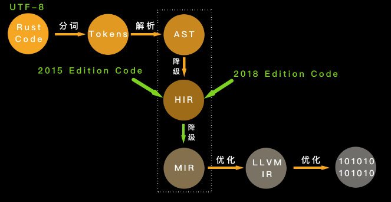
- 分词：把词法结构处理成词条流
- 词条流经过语法解析形成抽象语法树
- 抽象语法树简化成高级中间语言 (HIR)，编译器对 HIR 进行类型检查、方法查找等工作
- HIR 进一步简化形成中级中间语言 (MIR)，编译器对 MIR 进行借用检查、优化等工作，在 MIR 中已经看不到 Rust 各版次(Edition)的差异了
- 产生 LLVM 中间语言
- LLVM 后端会对 LLVM 中间语言进行优化，最终生成机器代码
常用数据结构
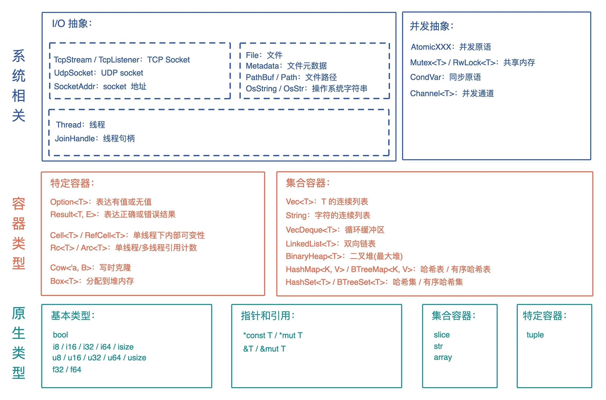
值放堆上还是栈上
#![allow(unused)] fn main() { let s = "hello world".to_string(); println!("'hello world': {:p}, s: {:p}, len: {}, capacity: {}, size: {}", &"hello world", &s, s.len(), s.capacity(), std::mem::size_of_val(&s)); }
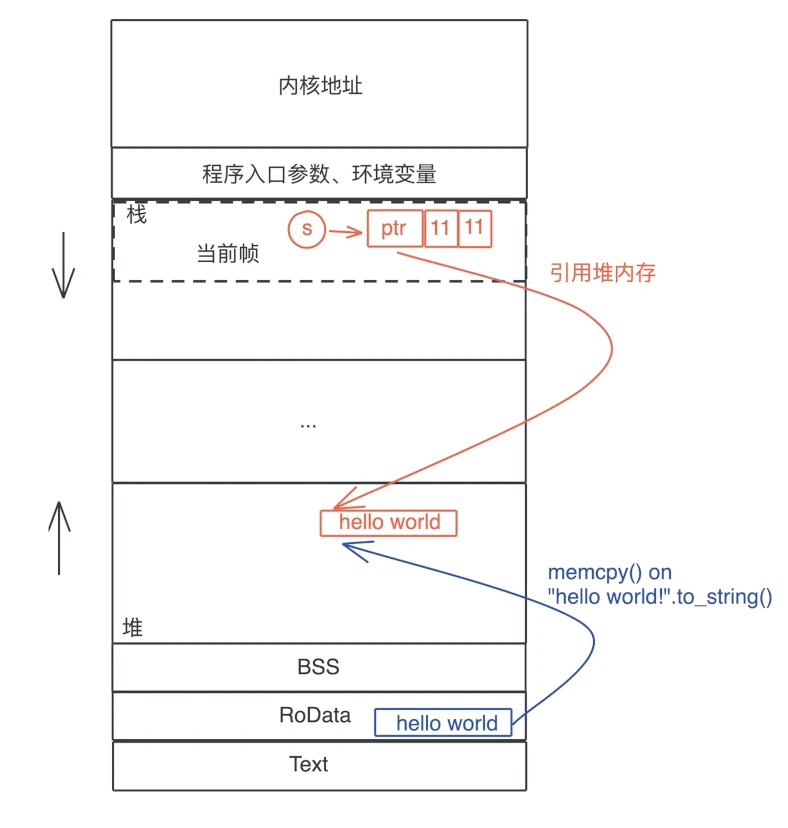
栈上存放的数据是静态的，固定大小，固定生命周期；堆上存放的数据是动态的，不固定大小，不固定生命周期。
#![allow(unused)] fn main() { static MAX: u32 = 0; fn foo() {} let hello = "hello world".to_string(); let data = Box::new(1); // string literals 指向 RODATA 地址 println!("RODATA: {:p}", "hello world!"); // static 变量在 DATA section println!("DATA (static var): {:p}", &MAX); // function 在 TEXT println!("TEXT (function): {:p}", foo as *const ()); // String 结构体分配在栈上，所以其引用指向一个栈地址 println!("STACK (&hello): {:p}", &hello); // 需要通过解引用获取其堆上数据，然后取其引用 println!("HEAP (&*hello): {:p}", &*hello); // Box 实现了 Pointer trait 无需额外解引用 println!("HEAP (box impl Pointer) {:p} {:p}", data, &*data); }
move, copy, borrow
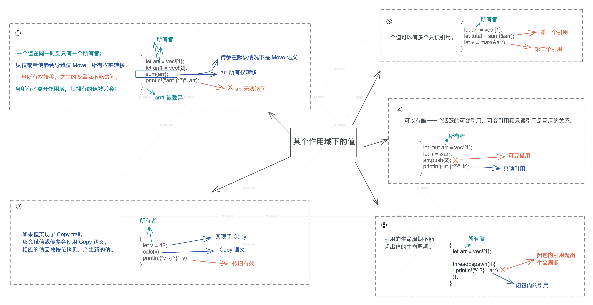
其实 Copy 和 Move 在内部实现上，都是浅层的按位做内存复制，只不过 Copy 允许你访问之前的变量，而 Move 不允许。
关于内存复制上的误区
如果代码的关键路径中的每次都要复制几百 k 的数据（比如一个大数组），这是很低效的。但是，如果要复制的只是原生类型（Copy）或者栈上的胖指针（Move），不涉及堆内存的复制（即没有做深拷贝（deep copy）），那这个效率是非常高的，不必担心每次赋值或者每次传参带来的性能损失。
Rust 的集合类型会在使用过程中自动扩展。以一个 Vec 为例，当使用完堆内存当前容量后，还继续添加新的内容，就会触发堆内存的自动增长。有时候，集合类型里的数据不断进进出出，导致集合一直增长，但实际只使用了很小部分的容量，导致内存的使用效率很低，这时可以考虑使用 shrink_to_fit 方法来节约对内存的使用。
所有权
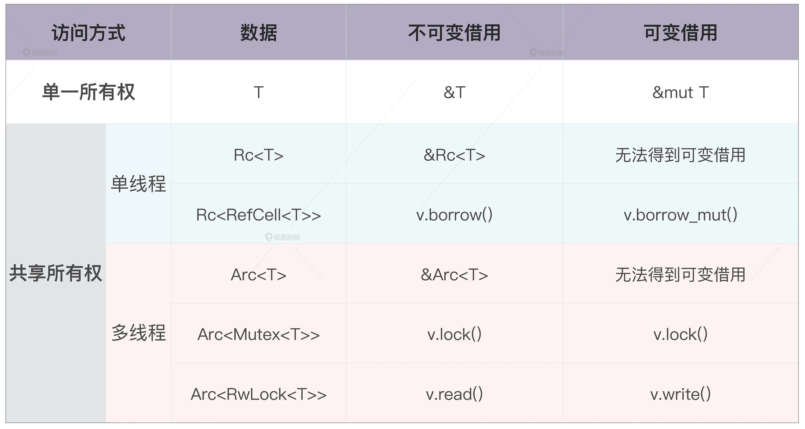
所有权的静态检查和动态检查
在所有权模型下，堆内存的生命周期，和创建它的栈内存的生命周期保持一致。编译器可以保证代码符合所有权规则（静态检查）。
动态检查，通过 Box::leak() 让堆内存拥有不受限制的生命周期，然后在运行过程中，通过对引用计数的检查，保证这样的堆内存最终会得到释放。
外部可变性与内部可变性
| 使用方法 | 所有权检查 | |
|---|---|---|
| 外部可变性 | let mut 或者 &mut | 编译时，如果不符合规则，产生编译错误 |
| 内部可变性 | 使用 Cell/RefCell | 运行时，如果不符合规则，产生 panic |
use std::cell::RefCell; fn main() { let data = RefCell::new(1); // 根据所有权规则，在同一个作用域下，不能同时有活跃的可变借用和不可变借用 // 通过这对花括号，我们缩小了可变借用的生命周期 { // 获得 RefCell 内部数据的可变借用 let mut v = data.borrow_mut(); *v += 1; } println!("data: {:?}", data.borrow()); }
生命周期
pub fn strtok<'a>(s: &mut &'a str, delimiter: char) -> &'a str { if let Some(i) = s.find(delimiter) { let prefix = &s[..i]; // 由于 delimiter 可以是 utf8，所以我们需要获得其 utf8 长度， // 直接使用 len 返回的是字节长度，会有问题 let suffix = &s[(i + delimiter.len_utf8())..]; *s = suffix; prefix } else { // 如果没找到，返回整个字符串，把原字符串指针 s 指向空串 let prefix = *s; *s = ""; prefix } } fn main() { let s = String::from("hello world"); let mut s1 = s.as_str(); let hello = strtok(&mut s1, ' '); println!("hello is: {}, s1: {}, s: {}", hello, s1, s); }
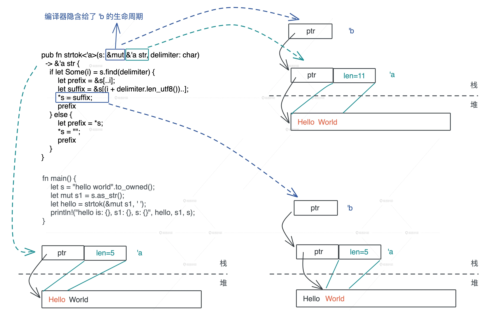
注意：当你要返回在函数执行过程中，创建的或者得到的数据，和参数无关，那么无论它是一个有所有权的数据，还是一个引用，你只能返回带所有权的数据。对于引用，这就意味着调用
clone()或者to_owned()来从引用中得到所有权。
结构体成员自动重排
use std::mem::{align_of, size_of}; struct S1 { a: u8, b: u16, c: u8, } struct S2 { a: u8, c: u8, b: u16, } #[repr(C)] struct S3 { a: u8, b: u16, c: u8, } fn main() { println!( "sizeof S1: {}, S2: {}, S3: {}", size_of::<S1>(), size_of::<S2>(), size_of::<S3>() ); println!( "alignof S1: {}, S2: {}, S3: {}", align_of::<S1>(), align_of::<S2>(), align_of::<S3>() ); }
Rust 编译器默会优化结构体的排列，但我们也可以使用 #[repr] 宏，强制让 Rust 编译器不做优化，和 C 的行为一致，这样，Rust 代码可以方便地和 C 代码无缝交互。
enum 的内存布局
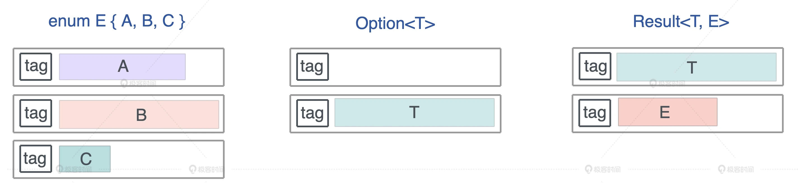
enum 是一个标签联合体（tagged union），它的大小是标签的大小，加上最大类型的长度。所以对于 Option<u8>，其长度是 1 + 1 = 2 字节，而 Option<f64>，长度是 8 + 8 =16 字节。
use std::collections::HashMap; use std::mem::size_of; enum MyEnum { A(f64), B(HashMap<String, String>), C(Result<Vec<u8>, String>), } // 这是一个声明宏，它会打印各种数据结构本身的大小，在 Option 中的大小，以及在 Result 中的大小 macro_rules! show_size { (header) => { println!( "{:<24} {:>4} {} {}", "Type", "T", "Option<T>", "Result<T, io::Error>" ); println!("{}", "-".repeat(64)); }; ($t:ty) => { println!( "{:<24} {:4} {:8} {:12}", stringify!($t), size_of::<$t>(), size_of::<Option<$t>>(), size_of::<Result<$t, std::io::Error>>(), ) }; } fn main() { show_size!(header); show_size!(u8); show_size!(f64); show_size!(&u8); show_size!(Box<u8>); show_size!(&[u8]); show_size!(String); show_size!(Vec<u8>); show_size!(HashMap<String, String>); show_size!(MyEnum); }
但是 Rust 编译器会对 enum 做一些额外的优化，让某些常用结构的内存布局更紧凑。Option 配合带有引用类型的数据结构，比如 &u8、Box、Vec、HashMap ，没有额外占用空间。引用类型的第一个域是个指针，而指针是不可能等于 0 的，通过复用这个指针：当其为 0 时，表示 None，否则是 Some，减少了内存占用。
线程安全的全局变量 (lazy_static)
use lazy_static::lazy_static; use std::collections::HashMap; use std::sync::{Arc, Mutex}; lazy_static! { static ref HASHMAP: Arc<Mutex<HashMap<u32, &'static str>>> = { let mut m = HashMap::new(); m.insert(0, "foo"); m.insert(1, "bar"); m.insert(2, "baz"); Arc::new(Mutex::new(m)) }; } fn main() { let mut map = HASHMAP.lock().unwrap(); map.insert(3, "waz"); println!("map: {:?}", map); }
带关联类型的 trait
use std::str::FromStr; use lazy_static::lazy_static; use regex::Regex; pub trait ParseFromStr { type Error; fn parse_from_str(s: &str) -> Result<Self, Self::Error> where Self: Sized; } impl<T> ParseFromStr for T where T: FromStr, { // 定义关联类型 Error 为 String type Error = String; fn parse_from_str(s: &str) -> Result<Self, Self::Error> { // ensure that regular expressions are compiled exactly once. lazy_static! { static ref RE: Regex = Regex::new(r"^\d+(\.\d+)?").unwrap(); }; if let Some(captures) = RE.captures(s) { captures .get(0) .map_or(Err("failed to capture".to_string()), |s| { s.as_str() .parse() .map_err(|_e| "failed to parse captured string".to_string()) }) } else { Err("failed to parse string".to_string()) } } } fn main() { println!("result: {}", u8::parse_from_str("255 hello").unwrap()); println!("result: {}", u8::parse_from_str("001 world").unwrap()); println!("result: {}", u8::parse_from_str("!").unwrap_or_default()); println!("result: {}", f64::parse_from_str("123.45abc").unwrap()); }
trait object 的实现机制
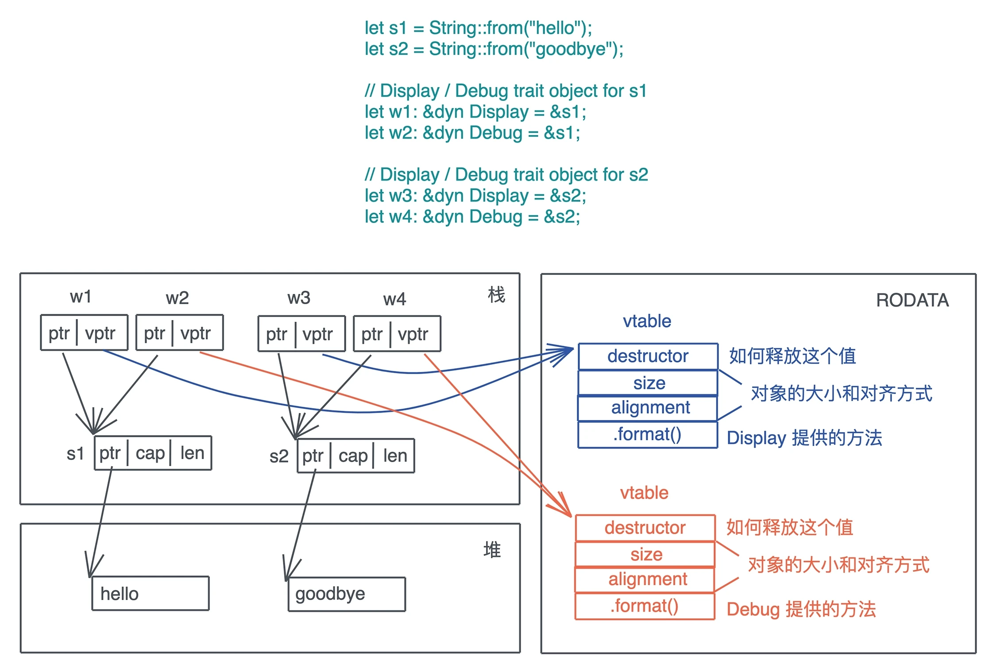
trait object 的底层逻辑就是旁指针，其中一个指针指向数据本身，另一个则指向虚函数表（vtable）。vtable 是一张静态的表，Rust 在编译时会为使用了 trait object 的类型的 trait 实现生成一张表，放在可执行文件中（一般在text或rodata段）。
如果 trait 所有的方法，返回值是 Self 或者携带泛型参数，那么这个 trait 就不能产生 trait object。trait object 在产生时，原来的类型会被抹去，所以 Self 究竟是谁不知道。Rust 里带泛型的类型在编译时会做单态化，而 trait object 是运行时的产物，两者不能兼容。如果一个 trait 只有部分方法返回 Self 或者携带泛型参数，那么这部分方法在 trait object 中不能被调用。
常用 trait 介绍
Clone
Clone 是深度拷贝，栈内存和堆内存一起拷贝。
#![allow(unused)] fn main() { pub trait Clone { // 在 clone 一个数据时只需要有已有数据的只读引用 fn clone(&self) -> Self; fn clone_from(&mut self, source: &Self) { *self = source.clone() } } }
Copy
Copy trait 没有任何额外的方法，它只是一个标记 trait，可以用作 trait bound 来进行类型安全检查。
#![allow(unused)] fn main() { // 如果要实现 Copy trait 的话，必须实现 Clone trait。 pub trait Copy: Clone {} }
Drop
#![allow(unused)] fn main() { pub trait Drop { fn drop(&mut self); } }
大部分场景无需为数据结构提供 Drop trait，系统默认会依次对数据结构的每个域做 drop。但有两种情况需要手动实现 Drop:
- 希望在数据结束生命周期的时候做一些事情，比如记录日志
- 需要对资源进行回收，比如锁资源的释放
Copy trait 和 Drop trait 是互斥的，两者不能共存。因为 Copy 是按位做浅拷贝，它拷贝的数据没有需要释放的资源，而 Drop 恰恰是为了释放额外的资源而生的。
Sized
Sized trait 用于标记有具体大小的类型。在使用泛型参数时，Rust 编译器会自动为泛型参数加上 Sized 约束。如果开发者显式定义了T: ?Sized，那么 T 就可以是任意大小。
Send / Sync 用于并发安全
#![allow(unused)] fn main() { pub unsafe auto trait Send {} pub unsafe auto trait Sync {} }
这里的 auto 意味着编译器会在合适的场合，自动为数据结构添加它们的实现。
如果一个类型 T 实现了 Send trait,意味着 T 可以安全地从一个线程移动到另一个线程，即所有权可以在线程间移动。 如果一个类型 T 实现了 Sync trait,意味着 &T 可以安全地在多个线程间共享。
对于 Send/Sync 在线程安全中的作用：如果一个类型 T: Send，那么 T 在某个线程中的独占访问是线程安全的；如果一个类型 T: Sync，那么 T 在线程间的只读共享是安全的。
引用计数 Rc<T> 不支持 Send 也不支持 Sync。所以 Rc<T> 无法跨线程。
RefCell<T> 实现了 Send，所以可以在线程间转移所有权。但没有实现 Sync，因此无法跨线程使用 Arc<RefCell<T>> 这样的数据（因为 Arc 内部的数据是共享的，需要支持 Sync 的数据结构）。
From<T> / Into<T> 用于从值到值的转换
#![allow(unused)] fn main() { pub trait From<T> { fn from(t: T) -> Self; } pub trait Into<T> { fn into(self) -> T; } // 实现 From 会自动实现 Into impl<T, U> Into<U> for T where U: From<T> { fn into(self) -> U { U::from(self) } } // From（以及 Into）是自反的：把类型 T 的值转换成类型 T,会直接返回 impl<T> From<T> for T { fn from(t: T) -> T { t } } }
有了这两个 trait,函数的接口就可以变得灵活，比如函数如果接受一个 IpAddr 为参数，那就可以使用 Into<IpAddr> 让更多的类型可以被这个函数使用。
use std::net::{IpAddr, Ipv4Addr, Ipv6Addr}; fn print(v: impl Into<IpAddr>) { println!("{:?}", v.into()); } fn main() { let v4: Ipv4Addr = "2.2.2.2".parse().unwrap(); let v6: Ipv6Addr = "::1".parse().unwrap(); // IPAddr 实现了 From<[u8; 4]，转换 IPv4 地址 print([1, 1, 1, 1]); // IPAddr 实现了 From<[u16; 8]，转换 IPv6 地址 print([0xfe80, 0, 0, 0, 0xaede, 0x48ff, 0xfe00, 0x1122]); // IPAddr 实现了 From<Ipv4Addr> print(v4); // IPAddr 实现了 From<Ipv6Addr> print(v6); }
如果数据类型在转换过程中有可能出现错误，就需要使用 TryFrom<T> 和 TryInto<T>。
AsRef<T> / AsMut<T> 用于从引用到引用的转换
#![allow(unused)] fn main() { // T 使用大小可变的类型，如 str、[u8] 等 pub trait AsRef<T> where T: ?Sized { fn as_ref(&self) -> &T; } pub trait AsMut<T> where T: ?Sized { fn as_mut(&mut self) -> &mut T; } }
标准库中打开文件的接口 std::fs::File::open
#![allow(unused)] fn main() { pub fn open<P: AsRef<Path>>(path: P) -> io::Result<File> }
意味着我们可以为这个参数传入 String、&str、PathBuf、Path 等类型，当使用 path.as_ref() 时，就能得到一个 &Path。
Deref / DerefMut
Rust 为所有的运算符都提供了 trait，我们可以给自定义类型重载某些操作符。
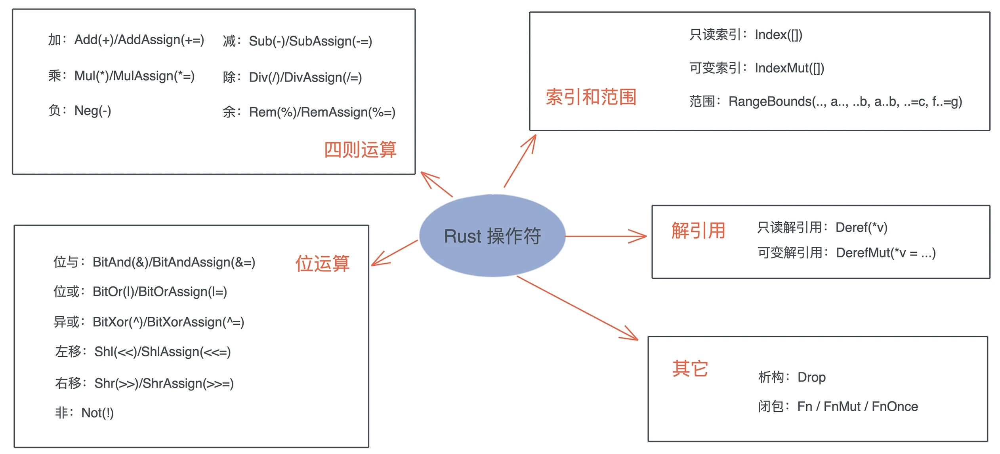
#![allow(unused)] fn main() { pub trait Deref { // 解引用出来的结果类型 type Target: ?Sized; fn deref(&self) -> &Self::Target; } // DerefMut “继承”了 Deref pub trait DerefMut: Deref { fn deref_mut(&mut self) -> &mut Self::Target; } }
Deref 和 DerefMut 是自动调用的，*b 会被展开为 *(b.deref())。
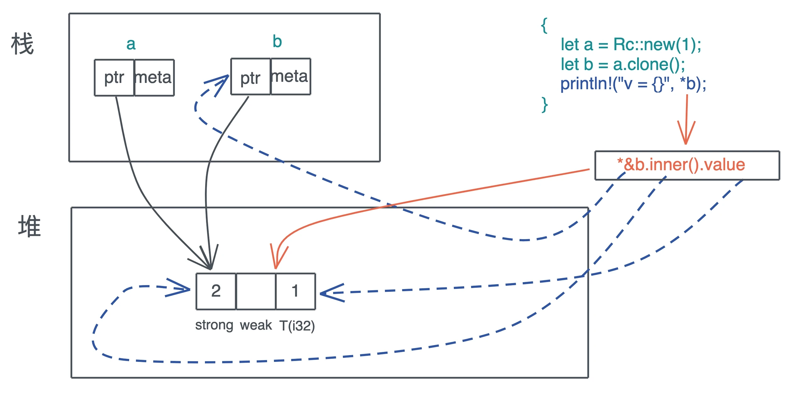
Debug / Display
#![allow(unused)] fn main() { pub trait Debug { fn fmt(&self, f: &mut Formatter<'_>) -> Result<(), Error>; } pub trait Display { fn fmt(&self, f: &mut Formatter<'_>) -> Result<(), Error>; } }
Debug 是为开发者调试打印数据结构所设计的，而 Display 是给用户显示数据结构所设计的。Debug trait 的实现可以通过派生宏直接生成，而 Display 必须手工实现。在使用的时候，Debug 用 {:?} 来打印，Display 用 {} 打印。
Default 为类型提供缺省值
#![allow(unused)] fn main() { pub trait Default { fn default() -> Self; } }
可以通过 derive 宏 #[derive(Default)] 来生成实现，前提是类型中的每个字段都实现了 Default trait。注意，enum 不能通过 derive 宏来实现 Default，因为 enum 的每个变体都可能有不同的字段，所以需要手动实现。
在初始化一个数据结构时，我们可以部分初始化，然后剩余的部分使用 ..Default::default()。
智能指针
智能指针 vs 胖指针
智能指针一定是胖指针（比如 String），但是胖指针不一定是一个智能指针（比如 &str），因为 String 对堆上的值有所有权，而 &str 没有所有权。
智能指针 vs 结构体
凡是需要做资源回收的数据结构，且实现了 Deref/DerefMut/Drop，都是智能指针。
Box<T>
new 方法
#![allow(unused)] fn main() { #[cfg(not(no_global_oom_handling))] #[inline(always)] pub fn new(x: T) -> Self { // box 是 Rust 的内部关键字，在编译时，会使用内存分配器来分配内存 box x } }
Box::new() 是一个函数，在 debug 模式下，传入它的数据会出现在栈上，再移动到堆上，有可能会引起栈溢出。在 release 模式下，该函数调用会被inline优化。
实现 Drop trait
#![allow(unused)] fn main() { unsafe impl<#[may_dangle] T: ?Sized, A: Allocator> Drop for Box<T, A> { fn drop(&mut self) { // Do nothing, drop is currently performed by compiler. } } }
Cow<'a, B>
#![allow(unused)] fn main() { pub enum Cow<'a, B> where B: 'a + ToOwned + ?Sized { Borrowed(&'a B), Owned(<B as ToOwned>::Owned), } }
Cow 包裹了一个只读借用，但如果调用者需要所有权或者需要修改内容，那么它会 clone 借用的数据。这种数据结构可以减少不必要的堆内存分配，提升系统效率。
#![allow(unused)] fn main() { pub trait ToOwned { type Owned: Borrow<Self>; #[must_use = "cloning is often expensive and is not expected to have side effects"] fn to_owned(&self) -> Self::Owned; fn clone_into(&self, target: &mut Self::Owned) { ... } } // Borrow 是个泛型 trait，表明一个类型可以被借用成不同的引用 // 比如 String 可以被借用为 &String 或者 &str pub trait Borrow<Borrowed> where Borrowed: ?Sized { fn borrow(&self) -> &Borrowed; } }
str 对 ToOwned trait 的实现：
#![allow(unused)] fn main() { impl ToOwned for str { type Owned = String; #[inline] fn to_owned(&self) -> String { unsafe { String::from_utf8_unchecked(self.as_bytes().to_owned()) } } fn clone_into(&self, target: &mut String) { let mut b = mem::take(target).into_bytes(); self.as_bytes().clone_into(&mut b); *target = unsafe { String::from_utf8_unchecked(b) } } } }
同时 String 必须要实现 Borrow<str> trait，这样能符合 ToOwned 的要求。
#![allow(unused)] fn main() { impl Borrow<str> for String { #[inline] fn borrow(&self) -> &str { &self[..] } } }
给 Cow 实现 Deref
#![allow(unused)] fn main() { impl<B: ?Sized + ToOwned> Deref for Cow<'_, B> { type Target = B; fn deref(&self) -> &B { // 我们分别取其内容，生成引用 match *self { Borrowed(borrowed) => borrowed, // 对于 Borrowed，直接就是取出当中的引用 Owned(ref owned) => owned.borrow(), // 对于 Owned，调用其 borrow() 方法，获得引用 } } } }
应用案例
use std::borrow::Cow; use url::Url; fn main() { let url = Url::parse("https://tyr.com/rust?page=1024&sort=desc&extra=hello%20world").unwrap(); let mut pairs = url.query_pairs(); assert_eq!(pairs.count(), 3); let (mut k, v) = pairs.next().unwrap(); // 因为 k, v 都是 Cow<str> 他们用起来感觉和 &str 或者 String 一样 // 此刻，他们都是 Borrowed println!("key: {}, v: {}", k, v); // 当修改发生时，k 变成 Owned k.to_mut().push_str("_lala"); print_pairs((k, v)); print_pairs(pairs.next().unwrap()); // 在处理 extra=hello%20world 时，value 被处理成 "hello world" // 所以这里 value 是 Owned print_pairs(pairs.next().unwrap()); } fn print_pairs(pair: (Cow<str>, Cow<str>)) { println!("key: {}, value: {}", show_cow(pair.0), show_cow(pair.1)); } fn show_cow(cow: Cow<str>) -> String { match cow { Cow::Borrowed(v) => format!("Borrowed {}", v), Cow::Owned(v) => format!("Owned {}", v), } }
use serde::Deserialize; use std::borrow::Cow; #[derive(Debug, Deserialize)] struct User<'input> { #[serde(borrow)] name: Cow<'input, str>, age: u8, } fn main() { let input = r#"{ "name": "Tyr", "age": 18 }"#; let user: User = serde_json::from_str(input).unwrap(); match user.name { Cow::Borrowed(x) => println!("borrowed {}", x), Cow::Owned(x) => println!("owned {}", x), } }
MutexGuard<T>
MutexGuard 通过 Drop trait 来确保退出时释放互斥锁，这样用户在使用 Mutex 时，可以不必关心何时释放这个互斥锁。因为无论你在调用栈上怎样传递 MutexGuard ，哪怕在错误处理流程上提前退出，Rust 的所有权机制可以确保只要 MutexGuard 离开作用域，锁就会被释放。
MutexGuard 不允许 Send，只允许 Sync，也就是说，你可以把 MutexGuard 的引用传给另一个线程使用，但你无法把 MutexGuard 整个移动到另一个线程。这样可以避免因加锁和解锁在不同的线程下带来的死锁风险。
use std::borrow::Cow; use std::collections::HashMap; use std::sync::{Arc, Mutex}; use std::thread; use std::time::Duration; fn main() { // 用 Arc 来提供并发环境下的共享所有权（使用引用计数） let metrics: Arc<Mutex<HashMap<Cow<'static, str>, usize>>> = Arc::new(Mutex::new(HashMap::new())); for _ in 0..32 { let m = metrics.clone(); thread::spawn(move || { let mut g = m.lock().unwrap(); // 此时只有拿到 MutexGuard 的线程可以访问 HashMap let data = &mut *g; // Cow 实现了很多数据结构的 From trait， // 所以我们可以用 "hello".into() 生成 Cow let entry = data.entry("hello".into()).or_insert(0); *entry += 1; // MutexGuard 被 Drop，锁被释放 }); } thread::sleep(Duration::from_millis(100)); println!("metrics: {:?}", metrics.lock().unwrap()); }
内存分配器
替换默认的内存分配器
堆上分配内存的 Box<T> 有一个缺省的泛型参数 A，需要满足 Allocator，并且默认是 Global，这个 Global 就是默认的内存分配器。
use jemallocator::Jemalloc; #[global_allocator] static GLOBAL: Jemalloc = Jemalloc; fn main() {}
自定义内存分配器
如果想要编写一个全局分配器，可以实现 GlobalAlloc trait，它和 Allocator trait 的主要区别在于是否允许分配长度为0的内存。
use std::alloc::{GlobalAlloc, Layout, System}; struct MyAllocator; unsafe impl GlobalAlloc for MyAllocator { unsafe fn alloc(&self, layout: Layout) -> *mut u8 { let data = System.alloc(layout); // 这里不能使用 println!() // stdout 会打印到一个由 Mutex 互斥锁保护的共享全局 buffer 中，这个过程中会涉及内存的分配 // 分配的内存又会触发 println!()，最终造成程序崩溃 // eprintln! 直接打印到 stderr，不会 buffer eprintln!("ALLOC: {:p}, size {}", data, layout.size()); data } unsafe fn dealloc(&self, ptr: *mut u8, layout: Layout) { System.dealloc(ptr, layout); eprintln!("FREE: {:p}, size {}", ptr, layout.size()); } } #[global_allocator] static GLOBAL: MyAllocator = MyAllocator; #[allow(dead_code)] struct Matrix { // 使用不规则的数字如 505 可以让 dbg! 的打印很容易分辨出来 data: [u8; 505], } impl Default for Matrix { fn default() -> Self { Self { data: [0; 505] } } } fn main() { // 在这句执行之前已经有好多内存分配 let data = Box::new(Matrix::default()); // 输出中有一个 1024 大小的内存分配，是 println! 导致的 println!( "!!! allocated memory: {:p}, len: {}", &*data, std::mem::size_of::<Matrix>() ); // data 在这里 drop，可以在打印中看到 FREE // 之后还有很多其它内存被释放 }
Standard Error 中输出的结果如下：
ALLOC: 0x55c63eb5b940, size 5
ALLOC: 0x55c63eb5b960, size 48
ALLOC: 0x55c63eb5b9d0, size 505
ALLOC: 0x55c63eb5b500, size 1024
FREE: 0x55c63eb5b9d0, size 505
FREE: 0x55c63eb5b500, size 1024
FREE: 0x55c63eb5b940, size 5
FREE: 0x55c63eb5b960, size 48
切片
当我们构建自己的数据结构时，如果它内部也有连续排列的等长的数据结构，可以考虑 AsRef 或者 Deref 到切片。
切片是描述一组属于同一类型、长度不确定的、在内存中连续存放的数据结构，用 [T] 来表述。因为长度不确定，所以切片是个 DST（Dynamically Sized Type）。在使用中主要用以下形式：
- &[T]：表示一个只读的切片引用
- &mut [T]：表示一个可写的切片引用
- Box<[T]>：一个在堆上分配的切片。
fn main() { let arr = [1, 2, 3, 4, 5]; let vec = vec![1, 2, 3, 4, 5]; let s1 = &arr[..2]; let s2 = &vec[..2]; println!("s1: {:?}, s2: {:?}", s1, s2); // &[T] 和 &[T] 是否相等取决于长度和内容是否相等 assert_eq!(s1, s2); // &[T] 可以和 Vec<T>/[T;n] 比较，也会看长度和内容 // 这是因为它们之间实现了 PartialEq trait assert_eq!(&arr[..], vec); assert_eq!(&vec[..], arr); }
在使用的时候，支持切片的具体数据类型，可以根据需要，解引用转换成切片类型。比如 Vec 和 [T; n] 会转化成为 &[T]，这是因为 Vec 实现了 Deref trait，而 array 内建了到 &[T] 的解引用。这也就意味着，通过解引用，这几个和切片有关的数据结构都会获得切片的所有能力，包括：binary_search、chunks、concat、contains、start_with、end_with、group_by、iter、join、sort、split、swap 等一系列丰富的功能。
use std::fmt; fn main() { let v = vec![1, 2, 3, 4]; // Vec 实现了 Deref，&Vec<T> 会被自动解引用为 &[T]，符合接口定义 print_slice(&v); // 直接是 &[T]，符合接口定义 print_slice(&v[..]); // &Vec<T> 支持 AsRef<[T]> print_slice1(&v); // &[T] 支持 AsRef<[T]> print_slice1(&v[..]); // Vec<T> 也支持 AsRef<[T]> print_slice1(v); let arr = [1, 2, 3, 4]; // 数组虽没有实现 Deref，但它的解引用就是 &[T] print_slice(&arr); print_slice(&arr[..]); print_slice1(&arr); print_slice1(&arr[..]); print_slice1(arr); } fn print_slice<T: fmt::Debug>(s: &[T]) { println!("{:?}", s); } fn print_slice1<T, U>(s: T) where T: AsRef<[U]>, U: fmt::Debug, { println!("{:?}", s.as_ref()); }
将 slice 转化成迭代器
fn main() { // 这里 Vec 在调用 iter() 时被解引用成 &[T]，所以可以访问 iter() let result: Vec<i32> = vec![1, 2, 3, 4] .iter() .map(|v| v * v) .filter(|v| *v < 16) .collect(); println!("{:?}", result); }
Rust 下的迭代器是个懒接口（lazy interface），也就是说这段代码直到运行到 collect 时才真正开始执行，之前的部分不过是在不断地生成新的结构，来累积处理逻辑而已。Rust 大量使用了 inline 等优化技巧，使得迭代器的性能和 C 语言的 for 循环差别不大。
此外，itertools crate 还提供了额外的，标准库中没有提供的迭代器。
use itertools::Itertools; fn main() { let err_str = "bad happened"; let input = vec![Ok(21), Err(err_str), Ok(7)]; let it = input .into_iter() // 对成功的结果进一步做 filter/map 操作 .filter_map_ok(|i| if i > 10 { Some(i * 2) } else { None }); // 结果应该是：vec![Ok(42), Err(err_str)] println!("{:?}", it.collect::<Vec<_>>()); }
特殊的切片 &str
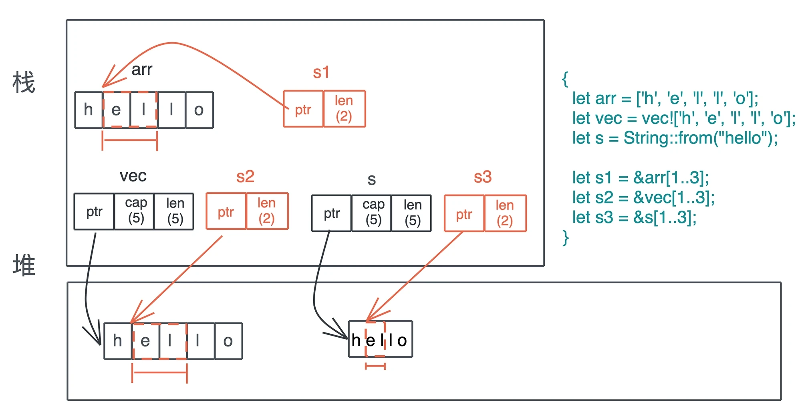
use std::iter::FromIterator; fn main() { let arr = ['h', 'e', 'l', 'l', 'o']; let vec = vec!['h', 'e', 'l', 'l', 'o']; let s = String::from("hello"); let s1 = &arr[1..3]; let s2 = &vec[1..3]; // &str 本身就是一个特殊的 slice let s3 = &s[1..3]; println!("s1: {:?}, s2: {:?}, s3: {:?}", s1, s2, s3); // &[char] 和 &[char] 是否相等取决于长度和内容是否相等 assert_eq!(s1, s2); // &[char] 和 &str 不能直接对比，我们把 s3 变成 Vec<char> assert_eq!(s2, s3.chars().collect::<Vec<_>>()); // &[char] 可以通过迭代器转换成 String，String 和 &str 可以直接对比 assert_eq!(String::from_iter(s2), s3); }
字符列表可以通过迭代器转换成 String，String 也可以通过 chars() 函数转换成字符列表，如果不转换，二者不能比较。
Box<[T]> 堆上的切片
Box<[T]> 和切片的引用 &[T] 很类似：它们都是在栈上有一个包含长度的胖指针，指向存储数据的内存位置。区别是：Box<[T]> 只会指向堆，&[T] 指向的位置可以是栈也可以是堆；此外，Box<[T]> 对数据具有所有权，而 &[T] 只是一个借用。
Box<[T]> 和 Vec<T> 有一点点差别：Vec<T> 有额外的 capacity，可以增长；而 Box<[T]> 一旦生成就固定下来，没有 capacity，也无法增长。
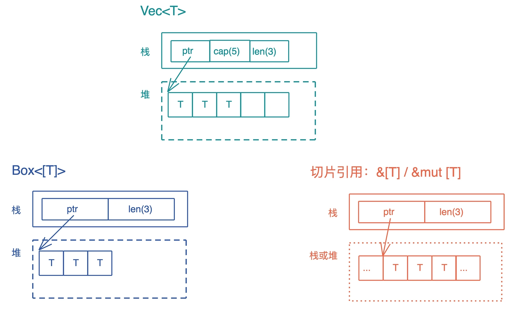
use std::ops::Deref; fn main() { let mut v1 = vec![1, 2, 3, 4]; v1.push(5); println!("cap should be 8: {}", v1.capacity()); // 从 Vec<T> 转换成 Box<[T]>，此时会丢弃多余的 capacity let b1 = v1.into_boxed_slice(); let mut b2 = b1.clone(); let v2 = b1.into_vec(); println!("cap should be exactly 5: {}", v2.capacity()); assert!(b2.deref() == v2); // Box<[T]> 可以更改其内部数据，但无法 push b2[0] = 2; // b2.push(6); println!("b2: {:?}", b2); // 注意 Box<[T]> 和 Box<[T; n]> 并不相同 let b3 = Box::new([2, 2, 3, 4, 5]); println!("b3: {:?}", b3); // b2 和 b3 相等，但 b3.deref() 和 v2 无法比较 assert!(b2 == b3); // assert!(b3.deref() == v2); }
Vec<T> 可以通过 into_boxed_slice() 转换成 Box<[T]>，Box<[T]> 也可以通过 into_vec() 转换回 Vec<T>。
Box<[T]> 有一个很好的特性是，不像 Box<[T;n]> 那样在编译时就要确定大小，它可以在运行期生成，以后大小不会再改变。
HashMap
Rust 哈希表不是用冲突链来解决哈希冲突，而是用开放寻址法的二次探查来解决的。
如果只需要简单确认元素是否在集合中，可以用 HashSet，它就是简化的 HashMap，可以用来存放无序的集合。
#![allow(unused)] fn main() { use hashbrown::hash_map as base; // RandomState 使用 SipHash 作为缺省的哈希算法 #[derive(Clone)] pub struct RandomState { k0: u64, k1: u64, } pub struct HashMap<K, V, S = RandomState> { // 复用了 hashbrown 库的 HashMap base: base::HashMap<K, V, S>, } // hashbrown 库的 HashMap pub struct HashMap<K, V, S = DefaultHashBuilder, A: Allocator + Clone = Global> { pub(crate) hash_builder: S, pub(crate) table: RawTable<(K, V), A>, } pub struct RawTable<T, A: Allocator + Clone = Global> { table: RawTableInner<A>, // Tell dropck that we own instances of T. marker: PhantomData<T>, } struct RawTableInner<A> { bucket_mask: usize, // [Padding], T1, T2, ..., Tlast, C1, C2, ... // ^ points here // 指向哈希表堆内存末端的 ctrl 区 ctrl: NonNull<u8>, // 哈希表在下次自动增长前还能存储多少数据 // 随着哈希表不断插入数据，它会以 2 的幂减一的方式增长 growth_left: usize, // 哈希表现在有多少数据 items: usize, alloc: A, } }
自定义数据结构做 Hash key
use std::{ collections::{hash_map::DefaultHasher, HashMap}, hash::{Hash, Hasher}, }; // 如果要支持 Hash，可以用 #[derive(Hash)]，前提是每个字段都实现了 Hash // 如果要能作为 HashMap 的 key，还需要 PartialEq 和 Eq #[derive(Debug, Hash, PartialEq, Eq)] struct Student<'a> { name: &'a str, age: u8, } impl<'a> Student<'a> { pub fn new(name: &'a str, age: u8) -> Self { Self { name, age } } } fn main() { let mut hasher = DefaultHasher::new(); let student = Student::new("Tyr", 18); // 实现了 Hash 的数据结构可以直接调用 hash 方法 student.hash(&mut hasher); let mut map = HashMap::new(); // 实现了 Hash / PartialEq / Eq 的数据结构可以作为 HashMap 的 key map.insert(student, vec!["Math", "Writing"]); println!("hash: 0x{:x}, map: {:?}", hasher.finish(), map); }
BTreeMap
BTreeMap 是内部使用 B-tree 来组织哈希表的数据结构，和 HashMap 不同的是，BTreeMap 是有序的。
use std::collections::BTreeMap; fn main() { let map = BTreeMap::new(); let mut map = explain("empty", map); for i in 0..16usize { map.insert(format!("Tyr {}", i), i); } let mut map = explain("added", map); map.remove("Tyr 1"); let map = explain("remove 1", map); for item in map.iter() { println!("{:?}", item); } } // BTreeMap 结构有 height，node 和 length // 我们 transmute 打印之后，再 transmute 回去 fn explain<K, V>(name: &str, map: BTreeMap<K, V>) -> BTreeMap<K, V> { let arr: [usize; 3] = unsafe { std::mem::transmute(map) }; println!( "{}: height: {}, root node: 0x{:x}, len: 0x{:x}", name, arr[0], arr[1], arr[2] ); unsafe { std::mem::transmute(arr) } }
如果想自定义的数据结构可以作为 BTreeMap 的 key，那么需要实现 PartialOrd 和 Ord。
use std::collections::BTreeMap; #[derive(Debug, PartialOrd, Ord, PartialEq, Eq)] struct Name { pub name: String, pub flags: u32, } impl Name { pub fn new(name: impl AsRef<str>, flags: u32) -> Self { Self { name: name.as_ref().to_string(), flags, } } } fn main() { let mut map = BTreeMap::new(); map.insert(Name::new("/etc/password", 0x1), 12); map.insert(Name::new("/etc/hosts", 0x1), 4); map.insert(Name::new("/home/tchen", 0x0), 28); for item in map.iter() { println!("{:?}", item); } }
错误处理
? 操作符
? 操作符内部被展开成类似这样的代码：
#![allow(unused)] fn main() { match result { Ok(v) => v, Err(e) => return Err(e.into()) } }
函数式错误处理
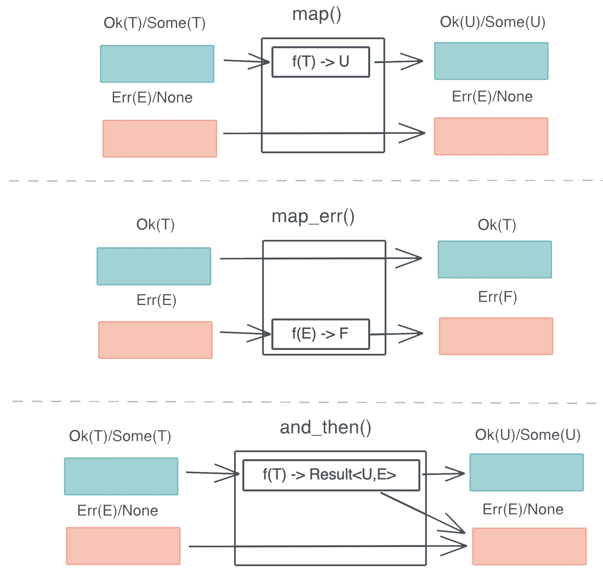
cache_unwind
Rust 标准库提供了catch_unwind()函数，能够像异常处理那样将调用栈回溯到 catch_unwind 这一刻，作用和其它语言的 try {…} catch {…} 一样。
use std::panic; fn main() { let result = panic::catch_unwind(|| { println!("hello!"); }); assert!(result.is_ok()); let result = panic::catch_unwind(|| { panic!("oh no!"); }); assert!(result.is_err()); println!("panic captured: {:#?}", result); }
Error trait
为了规范代表错误的数据类型的行为，Rust 定义了 Error trait：
#![allow(unused)] fn main() { pub trait Error: Debug + Display { fn source(&self) -> Option<&(dyn Error + 'static)> { ... } fn backtrace(&self) -> Option<&Backtrace> { ... } fn description(&self) -> &str { ... } fn cause(&self) -> Option<&dyn Error> { ... } } }
thiserror 可以帮助简化错误类型的定义。
#![allow(unused)] fn main() { use thiserror::Error; #[derive(Error, Debug)] #[non_exhaustive] pub enum DataStoreError { #[error("data store disconnected")] Disconnect(#[from] io::Error), #[error("the data for key `{0}` is not available")] Redaction(String), #[error("invalid header (expected {expected:?}, found {found:?})")] InvalidHeader { expected: String, found: String, }, #[error("unknown data store error")] Unknown, } }
anyhow 实现了 anyhow::Error 和任意符合 Error trait 的错误类型之间的转换，让你可以使用 ? 操作符，不必再手工转换错误类型。
闭包
闭包是一种匿名类型，一旦声明，就会产生一个新的类型，但这个类型无法被其它地方使用。这个类型就像一个结构体，会包含所有捕获的变量。闭包是存储在栈上，并且除了捕获的数据外，闭包本身不包含任何额外函数指针指向闭包的代码。
#![allow(unused)] fn main() { use std::{collections::HashMap, mem::size_of_val}; // 长度为 0 let c1 = || println!("hello world!"); // 和参数无关，长度也为 0 let c2 = |i: i32| println!("hello: {}", i); let name = String::from("tyr"); let name1 = name.clone(); let mut table = HashMap::new(); table.insert("hello", "world"); // 如果捕获一个引用，长度为 8 let c3 = || println!("hello: {}", name); // 捕获移动的数据 name1(长度 24) + table(长度 48)，因此 closure 长度 72 let c4 = move || println!("hello: {}, {:?}", name1, table); let name2 = name.clone(); // 和局部变量无关，捕获了一个 String name2，因此 closure 长度 24 let c5 = move || { let x = 1; let name3 = String::from("lindsey"); println!("hello: {}, {:?}, {:?}", x, name2, name3); }; println!( "c1: {}, c2: {}, c3: {}, c4: {}, c5: {}, main: {}", size_of_val(&c1), size_of_val(&c2), size_of_val(&c3), size_of_val(&c4), size_of_val(&c5), size_of_val(&main), ); }
不带 move 时，闭包捕获的是对应自由变量的引用；带 move 时，对应自由变量的所有权会被移动到闭包结构中。
闭包的类型
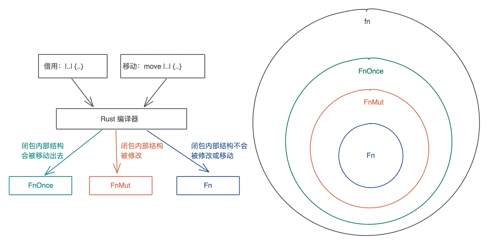
#![allow(unused)] fn main() { pub trait FnOnce<Args> { type Output; // 会转移 self 的所有权到 call_once 函数中 extern "rust-call" fn call_once(self, args: Args) -> Self::Output; } }
#![allow(unused)] fn main() { // 一个 FnMut 闭包，可以被传给一个需要 FnOnce 的上下文，此时调用闭包相当于调用了 call_once() pub trait FnMut<Args>: FnOnce<Args> { extern "rust-call" fn call_mut( &mut self, args: Args ) -> Self::Output; } }
#![allow(unused)] fn main() { // 任何需要 FnOnce 或者 FnMut 的场合，都可以传入满足 Fn 的闭包 pub trait Fn<Args>: FnMut<Args> { extern "rust-call" fn call(&self, args: Args) -> Self::Output; } }
将闭包作为参数传递
fn main() { let v = vec![0u8; 1024]; let v1 = vec![0u8; 1023]; // Fn，不移动所有权 let mut c = |x: u64| v.len() as u64 * x; // Fn，移动所有权 let mut c1 = move |x: u64| v1.len() as u64 * x; println!("direct call: {}", c(2)); println!("direct call: {}", c1(2)); println!("call: {}", call(3, &c)); println!("call: {}", call(3, &c1)); println!("call_mut: {}", call_mut(4, &mut c)); println!("call_mut: {}", call_mut(4, &mut c1)); println!("call_once: {}", call_once(5, c)); println!("call_once: {}", call_once(5, c1)); } fn call(arg: u64, c: &impl Fn(u64) -> u64) -> u64 { c(arg) } fn call_mut(arg: u64, c: &mut impl FnMut(u64) -> u64) -> u64 { c(arg) } fn call_once(arg: u64, c: impl FnOnce(u64) -> u64) -> u64 { c(arg) }
返回闭包
use std::ops::Mul; fn main() { let c1 = curry(5); println!("5 multiply 2 is: {}", c1(2)); let adder2 = curry(3.14); println!("pi multiply 4^2 is: {}", adder2(4. * 4.)); } fn curry<T>(x: T) -> impl Fn(T) -> T where T: Mul<Output = T> + Copy, { move |y| x * y }
给闭包实现其他 trait
有些接口既可以传入一个结构体，又可以传入一个函数或者闭包。
pub trait Executor { fn execute(&self, cmd: &str) -> Result<String, &'static str>; } struct BashExecutor { env: String, } impl Executor for BashExecutor { fn execute(&self, cmd: &str) -> Result<String, &'static str> { Ok(format!( "fake bash execute: env: {}, cmd: {}", self.env, cmd )) } } impl<T> Executor for T where T: Fn(&str) -> Result<String, &'static str>, { fn execute(&self, cmd: &str) -> Result<String, &'static str> { self(cmd) } } fn main() { let env = "PATH=/usr/bin".to_string(); let cmd = "cat /etc/passwd"; let r1 = execute(cmd, BashExecutor { env: env.clone() }); println!("{:?}", r1); let r2 = execute(cmd, |cmd: &str| { Ok(format!("fake fish execute: env: {}, cmd: {}", env, cmd)) }); println!("{:?}", r2); } fn execute(cmd: &str, exec: impl Executor) -> Result<String, &'static str> { exec.execute(cmd) }
参考资料
控制系统基础
控制系统建模
对于一个输入为 \(u\)，输出为 \(y\) 的动态系统，当 \(t\) 时刻的输出 \(y(t)\) 由直到 \(t\) 时刻为止的输入和输出来决定的时候，这个系统可以用下面的微分方程来表示：
$$ \frac{d^n}{dt^n}y(t) + a_{n-1}\frac{d^{n-1}}{dt^{n-1}}y(t) + \cdots + a_1\frac{d}{dt}y(t) + a_0y(t) \\ = b_m\frac{d^m}{dt^m}u(t) + b_{m-1}\frac{d^{m-1}}{dt^{m-1}}u(t) + \cdots + b_1\frac{d}{dt}u(t) + b_0u(t) $$
微分方程很难求解以及分析系统行为，所以通常会将微分方程转换成传递函数模型或者状态空间模型。
传递函数
传递函数模型使用复变函数来表现系统模型，可以通过将微分方程两边进行初始值为0的拉普拉斯变换得到。
拉普拉斯变换的定义：\(g(s) = \mathcal{L}[g(t)] = \int_0^{\infty}g(\tau)e^{-s\tau}d\tau\)
微分的拉普拉斯变换
$$ \begin{align} \mathcal{L}[\dot y(t)] &= \int_0^{\infty}\dot y(\tau)e^{-s\tau}d\tau \\ &= [y(\tau)e^{-s\tau}]_0^{\infty} - \int_0^{\infty}-sy(\tau)e^{-s\tau}d\tau \\ &= [y(\tau)e^{-s\tau}]_0^{\infty} + s\int_0^{\infty}y(\tau)e^{-s\tau}d\tau \\ &= y(\infty) -y(0) + s\mathcal{L}[y(t)] \\ &= sy(s) - y(0) \end{align} $$
令 \(y(0) = 0\)，则得到 \(\mathcal{L}[\dot y(t)] = sy(s)\)
积分的拉普拉斯变换
令 \(f(t) = \int_0^ty(\tau)d\tau\), 则 \(\dot f(t) = y(t)\)
$$ \begin{align} \mathcal{L}[\dot f(t)] &= sf(s) - f(0) \\ &= sf(s) - \int_0^0y(\tau)d\tau \\ &= sf(s) \end{align} $$
$$ \mathcal{L}[\int_0^ty(\tau)d\tau] = \mathcal{L}[f(t)] = f(s) = \frac{1}{s}\mathcal{L}[\dot f(t)] = \frac{1}{s}\mathcal{L}[y(t)] = \frac{1}{s}y(s) $$
状态空间
状态空间模型通过矩阵的形式将多元高阶微分方程表示成一阶微分方程的形式。传递函数模型表达的是输入和输出的关系，而状态空间模型表达的是输入->状态->输出的关系。我们可以自由地选择状态变量。此外，状态空间模型也可以处理初始值不为0的情况。
$$ \mathcal{P}: \begin{cases} \mathbf{\dot x}(t) &= \mathbf{A} \mathbf{x}(t) + \mathbf{B} \mathbf{u}(t) \\ \mathbf{y}(t) &= \mathbf{C} \mathbf{x}(t) + \mathbf{D} \mathbf{u}(t) \end{cases} $$
这里的\(\mathbf{x}\)为状态，\(\mathbf{u}\)为输入，\(\mathbf{y}\)为输出，\(\mathbf{A}\), \(\mathbf{B}\), \(\mathbf{C}\), \(\mathbf{D}\)为常数矩阵。
RLC 电路

根据欧姆定律， $$ v_{in}(t) = L\frac{d}{dt}i(t) + Ri(t) + \frac{1}{C}\int_{0}^{t}i(\tau) d\tau $$
设定输出为 \(y(t) = v_{out}(t) = \frac{1}{C}\int_{0}^{t}i(\tau) d\tau\), 则 \(C\dot y(t) = i(t)\)
设定输入为 \(u(t) = v_{in}(t)\)
可以得到 $$ LC\ddot y(t) + RC\dot y(t) + y(t) = u(t) $$
传递函数模型
对微分方程两边做拉普拉斯变换，得到 $$ LCs^2y(s) + RCsy(s) + y(s) = u(s) $$
于是传递函数模型等于 $$ \mathcal{P} = \frac{y(s)}{u(s)} = \frac{1}{LCs^2 + RCs + 1} $$
状态空间模型
设 \(\mathbf{x}(t) = \left[ \begin{matrix} \int_0^t i(\tau)d\tau \\ i(t) \\ \end{matrix} \right] \)， \(u(t) = v_{in}\)，\(y(t) = \frac{1}{C}\int_0^t i(\tau)d\tau\)
则状态方程为 $$ \mathbf{\dot x}(t) = \left[ \begin{matrix} 0& 1 \\ -\frac{1}{LC}& -\frac{R}{L} \\ \end{matrix}\right] \mathbf{x}(t) + \left[ \begin{matrix} 0 \\ \frac{1}{L} \\ \end{matrix} \right] u(t) $$
而输出方程为 $$ y(t) = \left[ \begin{matrix} \frac{1}{C} \quad 0 \end{matrix}\right] \mathbf{x}(t) $$
运放电路

根据运放的"虚短"特性，可以得到 \(i_1(t) = \frac{v_{in}(t)}{R_1}\), \(i_2(t) = \frac{v_{out}(t)}{R_2}\)
以及 \(v_{out}(t) = \frac{1}{C}\int_{0}^{\tau}i_3(\tau) d\tau\)， 即 \(i_3(t) = C\dot v_{out}\)
根据运放的"虚断"特性，\(i_1(t) + i_2(t) + i_3(t) = 0\)
代入方程得到 $$ \frac{v_{in}(t)}{R_1} + \frac{v_{out}(t)}{R_2} + C\dot v_{out}(t) = 0 $$
设定输出 \(y(t)=v_{out}(t)\), 设定输入 \(u(t)=v_{in}(t)\)
因此可以得到 $$R_1R_2C\dot y(t) + R_1y(t) = -R_2u(t)$$
传递函数模型
对微分方程两边做拉普拉斯变换，得到 \(R_1R_2Csy(s) + R_1y(s) = -R_2u(s)\), 于是传递函数模型等于 $$ \mathcal{P} = \frac{y(s)}{u(s)} = \frac{-R_2}{R_1R_2Cs + R_1} $$
状态空间模型
设 \(x(t) = v_{out}(t), u(t)=v_{in}(t),y(t)=v_{out}(t)\)，则可得到状态方程 $$ \dot x(t) = -\frac{1}{CR_2}x(t) - \frac{1}{CR_1}u(t) $$ 输出方程为 $$ y(t)=x(t) $$
一阶滞后系统的阶跃响应
一阶滞后系统的传递函数模型可以表示为： $$ \mathcal{P}(s) = \frac{K}{Ts + 1} $$ \(K\) 是滞后系统的增益，\(T\) 是滞后系统的时间常数。 时间常数指的是达到稳定值的 63.2% 时所需的时间，它决定了系统的响应速度。
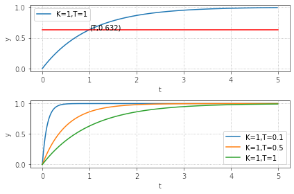
推导一阶滞后系统在时域上的阶跃响应
$$ y(s) = \frac{K}{Ts+1}\frac{1}{s} = K(\frac{1}{s} - \frac{T}{Ts+1}) = K(\frac{1}{s} - \frac{1}{s+\frac{1}{T}}) $$
对其进行拉普拉斯逆变换得到 $$ y(t) = K(1-e^{-\frac{1}{T}t}) $$
当 T > 0 时，\(y(\infty)=K, y(T)=1-e^{-1}=0.632\)
二阶滞后系统的阶跃响应
二阶滞后系统的传递函数模型可以表示为： $$ \mathcal{P}(s) = \frac{K\omega_n^2}{s^2+2\zeta\omega_ns+\omega_n^2} $$ \(\zeta\)称为阻尼系数，\(\omega_n\)称为无阻尼自然振荡频率。
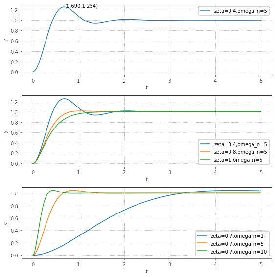
阻尼系数是确定阻尼特性（稳定度）的参数:
- 当\(\zeta\) 为负值时，输出会发散
- 当\(\zeta\) 为正值时，输出会收敛于稳定值:
- 当\(0<\zeta<1\)时，系统振荡而收敛，在 \(T_p = \frac{\pi}{\omega_n \sqrt{1-\zeta^2}}\)处取得最大值 \(y_{max}=K(1+e^{-\zeta\omega_nT_p})\)
- 当\(\zeta \geq 1\)时系统不振荡而收敛
无阻尼自然振荡频率\(\omega_n\)类似于一阶滞后系统中的时间常数T,决定了响应速度的快慢。
pytest 基础
常用命令行选项
-
--collect-only：展示在给定的配置下哪些测试用例会被运行 -
-k：使用表达式指定要运行的测试用例，表达式可以匹配测试名，且表达式中可以包含and,or,not关键字➤ pytest -v --collect-only -k "replace or asdict" <Package tests> <Module test_named_tuple.py> <Function test_asdict> _asdict() should return a dictionary. <Function test_replace> replace() should change passed in fields. -
-m：标记测试并分组，以便快速选中并运行，可以同时指定多个标记，标记之间可以使用and,or,not关键字 -
-s：允许终端在测试运行时输出某些结果，包括任何符合标准的输出流信息，等价于--capture=no -
--markers：列出所有可用的 marker -
--fixtures：列出所有可用的 fixture -
--setup-show：显示测试用例的 setup 和 teardown 过程 -
--durations=0：将所有阶段的耗时从长到短排序 -
-l：显示失败的测试用例的局部变量 -
-x：遇到失败的测试用例时停止运行 -
--lf, --last-failed：只运行上次失败的测试用例，如果没有失败的测试用例，则运行所有测试用例 -
--ff, --failed-first：先运行上次失败的测试用例，然后再运行其他测试用例 -
--cache-show：显示缓存的内容（可用于多个测试会话之间共享） -
--cache-clear：清除缓存 -
--pdb：遇到失败的测试用例时进入调试模式 -
--tb=[auto/long/short/line/native/no]：指定发生错误时堆栈回溯信息的粒度 -
--junit-xml：将测试结果输出为 junit 格式的 xml 文件
测试搜索
pytest 能自动搜索所有待执行的测试用例，你需要遵守以下几条命名规则：
- 测试文件应该命名为
test_*.py或者*_test.py - 测试函数、测试类方法应当命名为
test_<something> - 测试类要命名为
Test<Something> - 默认的测试搜索规则可以在
pytest.ini中进行修改
编写测试函数
-
pytest 会截断对原生
assert的调用，替换为 pytest 定义的assert -
使用
with pytest.raises(Exception):来断言异常def test_start_tasks_db_raises(): """Make sure unsupported db raises an exception.""" with pytest.raises(ValueError) as exc_info: tasks.start_tasks_db("some/great/path", "mysql") exception_msg = exc_info.value.args[0] assert exc_info.type == ValueError assert exception_msg == "db_type must be a 'tiny' or 'mongo'" -
使用
pytest.approx来断言浮点数def test_approx(): """Using pytest.approx.""" v1 = 0.1 + 0.2 v2 = 0.3 assert v1 != v2 assert v1 == pytest.approx(v2) -
使用
@pytest.mark.skip和@pytest.mark.skipif装时期来跳过不希望运行的测试 -
使用
@pytest.mark.xfail装饰器来标记预期失败的测试@pytest.mark.xfail( sys.platform == "win32", reason="can't run on Windows" ) def test_unique_id_is_a_duck(): """Demonstrate xfail""" uid = tasks.unique_id() assert uid == "a duck" -
使用
@pytest.mark.parametrize(argnames, argvalues)装饰器来运行相同测试用例的不同参数组合,parametrize()的第一个参数是用逗号分隔的字符串列表，第二个参数是值列表@pytest.mark.parametrize( "summary, owner, done", [ ("sleep", None, False), ("wake", "brian", False), ("breath", "iris", True), ("eat", "bob", True), ], ) def test_add_variety(summary, owner, done): """Demonstrate parameterize with 3 parameters.""" new_task = Task(summary, owner, done) task_id = tasks.add(new_task) task_from_db = tasks.get(task_id) assert equivalent(new_task, task_from_db) -
parametrize()还可以通过ids参数来指定每个参数组合的名字,ids参数的值是一个字符串列表，长度必须和argvalues参数的长度一致tasks_to_try = ( Task("sleep", None, True), Task("wake", "brian", False), Task("breathe", "bob", True), Task("exercise", "iris", False), ) task_ids = [f"Task({t.summary},{t.owner},{t.done})" for t in tasks_to_try] @pytest.mark.parametrize("task", tasks_to_try, ids=task_ids) def test_add_variety(task): """Demonstrate parameterize with 3 parameters.""" task_id = tasks.add(task) task_from_db = tasks.get(task_id) assert equivalent(task, task_from_db) -
当
ids不能被参数化批量生成时，需要自定义的时候，可以给每个参数值定义一个id来做标识:pytest.param(<value>, id="something")@pytest.mark.parametrize( "task", [ pytest.param(Task("sleep")), pytest.param(Task("wake", "brian"), id="summary/owner"), pytest.param(Task("breathe", "BRIAN", True), id="summary/owner/done"), ], ) def test_add_variety(task): """Demonstrate parameterize with 3 parameters.""" task_id = tasks.add(task) task_from_db = tasks.get(task_id) assert equivalent(task, task_from_db)运行结果:
test_add.py::test_add_variety[task0] PASSED # 因为没有添加id标识，所以可读性不好 test_add.py::test_add_variety[summary/owner] PASSED test_add.py::test_add_variety[summary/owner/done] PASSED
Fixture
-
Fixture 是一种特殊的函数，在测试函数运行前后，由 pytest 执行的外壳函数，通常用来做一些准备工作，比如创建数据库连接，创建临时文件等。
@pytest.fixture() def some_data(): return 42 def test_some_data(some_data): assert some_data == 42 -
多个 fixture 之间可以相互依赖，比如一个 fixture 依赖另一个 fixture，这时可以在 fixture 函数的参数列表中添加依赖的 fixture 函数
@pytest.fixture() def db_with_3_tasks(tasks_db, tasks_just_a_few): """Connected db with 3 tasks, all unique""" for t in tasks_just_a_few: tasks.add(t) def test_add_increases_count(db_with_3_tasks): tasks.add(Task("throw a party")) assert tasks.count() == 4 -
使用
usefixtures为测试类指定 fixture，这种方法不能够使用 fixture 函数的返回值@pytest.mark.usefixtures("tasks_db") class TestAdd: """Using a fixture for setup and teardown.""" def test_add_increases_count(self): """tasks.add() affect tasks.count().""" tasks.add(Task("throw a party")) assert tasks.count() == 1 -
通过
scope参数指定 fixture 的作用范围（也可以理解为控制 fixture 执行 setup 和 teardown 的频率），scope参数的值可以是function、class、module、session，默认值是function。fixture 只能使用同级别的 fixture 或者比自己级别更高的 fixture。@pytest.fixture(scope="session") def tasks_db(tmpdir_factory): """Connect to db before testing, disconnect after.""" tmp_dir = tmpdir_factory.mktemp("temp") tasks.start_tasks_db(str(tmp_dir), "tiny") yield tasks.stop_tasks_db() -
可以为常用 fixture 添加
autouse=True选项，使得作用域内的测试函数自动运行该 fixture -
可以设置
name参数来重命名 fixture -
对测试函数进行参数化，可以多次运行的只是该测试函数。而使用参数化 fixture,每个使用该 fixture 的测试函数都可以被运行多次
tasks_to_try = [ pytest.param(Task("sleep")), pytest.param(Task("wake", "brian")), pytest.param(Task("breathe", "BRIAN", True)), ] def id_func(task: Task): """Create a string representation for test report.""" return f"({task.summary},{task.owner},{task.done})" @pytest.fixture(params=tasks_to_try, ids=id_func) def a_task(request): """Using a fixture to pass data to a test.""" return request.param def test_add_variety(a_task): """Demonstrate parameterize with 3 parameters.""" task_id = tasks.add(a_task) task_from_db = tasks.get(task_id) assert equivalent(a_task, task_from_db)ids参数可以指定为一个函数，供 pytest 针对每个参数生成标识
内置 Fixture
tmpdir 和 tmpdir_factory
def test_tmpdir(tmpdir):
print(tmpdir.realpath)
# tmpdir already has a path name associated with it
# join() extends the path to include a filename
# the file is created when it's written to
# tmpdir is a py.path.local object
a_file = tmpdir.join("something.txt")
# you can create directories
a_sub_dir = tmpdir.mkdir("anything")
# you can create files in the directory (created when written)
another_file = a_sub_dir.join("something_else.txt")
# this write creates "something.txt"
a_file.write("contents may settle during shipping")
# this write creates "anything/something_else.txt"
another_file.write("something different")
assert a_file.read() == "contents may settle during shipping"
assert another_file.read() == "something different"
def test_tmpdir_factor(tmpdir_factory):
print(tmpdir_factory.getbasetemp())
# you should start with making a directory
# a_dir acts like the object returned from the tmpdir fixture
a_dir = tmpdir_factory.mktemp("mydir")
a_file = a_dir.join("something.txt")
# you can create directories
a_sub_dir = a_dir.mkdir("anything")
# you can create files in the directory (created when written)
another_file = a_sub_dir.join("something_else.txt")
# this write creates "something.txt"
a_file.write("contents may settle during shipping")
# this write creates "anything/something_else.txt"
another_file.write("something different")
assert a_file.read() == "contents may settle during shipping"
assert another_file.read() == "something different"
tmpdir_factory 的作用范围是会话级别，tmpdir 的作用范围是函数级别。如果需要模块或者类级别作用范围的目录，可以利用 tmpdir_factory 再创建一个 fixture。
@pytest.fixture(scope="module")
def my_tmpdir(tmpdir_factory):
pass
pytestconfig
pytestconfig 是 request.config 的快捷方式，可以通过 pytestconfig.getoption() 获取命令行选项。
def test_option(pytestconfig):
print(f"args: {pytestconfig.args}")
print(f"invocation_dir: {pytestconfig.invocation_dir}")
print(f"rootdir: {pytestconfig.rootdir}")
print(f"inifile: {pytestconfig.inifile}")
print(f"basetemp: {pytestconfig.getoption('basetemp')}")
print(f"-k EXPRESSION: {pytestconfig.getoption('keyword')}")
print(f"-v, --verbose: {pytestconfig.getoption('verbose')}")
print(f"--tb style: {pytestconfig.getoption('tbstyle')}")
也可以基于 pytestconfig 创建新的 fixture
@pytest.fixture()
def foo(pytestconfig):
return pytestconfig.option.foo
def test_option(foo):
print("foo: {}".format(foo))
cache
cache 的作用是存储一段测试会话的信息，在下一段测试会话中使用。cache的接口主要有两个：cache.get(key, default) 和 cache.set(key, value)。
习惯上，键名以应用名字或插件名字开始，接着是/，然后是分隔开的键字符串。键值可以是任何可以转换成 JSON 的对象。
Duration = namedtuple("Duration", ["current", "last"])
@pytest.fixture(scope="session")
def duration_cache(request):
key = "duration/test_durations"
d = Duration({}, request.config.cache.get(key, {}))
yield d
request.config.cache.set(key, d.current)
@pytest.fixture(autouse=True)
def check_duration(request, duration_cache):
d = duration_cache
nodeid = request.node.nodeid # nodeid is a unique identifier for the test
start_time = datetime.datetime.now()
yield
duration = (datetime.datetime.now() - start_time).total_seconds()
d.current[nodeid] = duration
if d.last.get(nodeid, None) is not None:
errorstring = "test duration over 2x last duration"
assert duration <= (d.last[nodeid] * 2), errorstring
@pytest.mark.parametrize("i", range(5))
def test_slow_stuff(i):
time.sleep(random.random())
➤ pytest --cache-show
================ test session starts ================
platform linux -- Python 3.10.7, pytest-7.1.2, pluggy-1.0.0
rootdir: /home/morris/tasks/tests
cachedir: /home/morris/tasks/tests/.pytest_cache
---------------- cache values for '*' ----------------
duration/test_durations contains:
{'test_cache.py::test_slow_stuff[0]': 0.133439,
'test_cache.py::test_slow_stuff[1]': 0.569769,
'test_cache.py::test_slow_stuff[2]': 0.7625,
'test_cache.py::test_slow_stuff[3]': 0.930151,
'test_cache.py::test_slow_stuff[4]': 0.748842}
同时也能看到被 cache 的数据保存在 .pytest_cache 目录下。
capsys
-
capsys.readouterr()：返回一个包含out和err的namedtuple，分别是标准输出和标准错误的内容def test_capsys(capsys): print("hello") print("world", file=sys.stderr) out, err = capsys.readouterr() assert out == "hello\n" assert err == "world\n" -
临时让输出绕过默认的输出捕获机制，可以使用
capsys.disabled()上下文管理器def test_capsys_disabled(capsys): with capsys.disabled(): print("always print this") print("normal print, usually captured")
monkeypatch
monkeypatch 可以在运行期间对类或模块进行同态修改，比如修改环境变量、修改类属性、修改模块属性等。
-
setattr(target, name, value, raising=True)：修改对象的属性值
def test_setattr(monkeypatch): class A: a = 1 monkeypatch.setattr(A, "a", 2) assert A.a == 2 -
delattr(target, name, raising=True)：删除对象的属性
def test_delattr(monkeypatch): class A: a = 1 monkeypatch.delattr(A, "a") assert not hasattr(A, "a") -
setitem(mapping, name, value)：修改字典的值
def test_setitem(monkeypatch): d = {"a": 1} monkeypatch.setitem(d, "a", 2) assert d["a"] == 2 -
delitem(obj, name, raising=True)：删除字典的值
def test_delitem(monkeypatch): d = {"a": 1} monkeypatch.delitem(d, "a") assert "a" not in d -
setenv(name, value, prepend=False)：修改环境变量
def test_setenv(monkeypatch): monkeypatch.setenv("foo", "bar") assert os.environ["foo"] == "bar" -
delenv(name, raising=True)：删除环境变量
def test_delenv(monkeypatch): monkeypatch.setenv("foo", "bar") monkeypatch.delenv("foo") assert "foo" not in os.environ -
syspath_prepend(path)：在
sys.path的开头添加路径，sys.path是 Python 模块的搜索路径def test_syspath_prepend(monkeypatch): monkeypatch.syspath_prepend("/foo") assert sys.path[0] == "/foo" -
chdir(path)：修改当前工作目录
def test_chdir(monkeypatch): monkeypatch.chdir("/tmp") assert os.getcwd() == "/tmp"
recwarn
recwarn 用来检查待测代码产生的警告信息。
def test_recwarn(recwarn):
warnings.warn("Please stop using this function", DeprecationWarning)
assert len(recwarn) == 1
w = recwarn.pop()
assert w.category == DeprecationWarning
assert str(w.message) == "Please stop using this function"
pytest 还可以使用 pytest.warns 来检查警告信息。
def lame_function():
warnings.warn("Please stop using this", DeprecationWarning)
def test_lame_function():
with pytest.warns(DeprecationWarning) as warning_list:
lame_function()
assert len(warning_list) == 1
w = warning_list.pop()
assert w.category == DeprecationWarning
assert str(w.message) == "Please stop using this"
插件
寻找插件
编写插件
-
使用
pytest_addoption可以给 pytest 添加额外的命令行选项def pytest_addoption(parser): parser.addoption( "--myopt", action="store_true", help="some boolean option", ) parser.addoption( "--foo", action="store", default="bar", help="foo: bar or baz", )或者不通过命令行参数，使用
pytest.ini文件做自定义的配置def pytest_addoption(parser): parser.addini( "myopt", type="bool", default=False, help="some boolean option", ) parser.addini( "foo", type="string", default="bar", help="foo: bar or baz", -
使用
pytest_report_header可以在测试报告的 header 中添加额外的信息def pytest_report_header(config): return "🍎🍎🍎🍎🍎🍎🍎🍎🍎" -
使用
pytest_report_teststatus可以修改测试报告中的测试状态def pytest_report_teststatus(report): if report.when == "call" and report.failed: return report.outcome, "💥", "💥"
测试插件
-
开启
pytester插件，在 conftest.py 中添加pytest_plugins = ["pytester"] -
使用
pytester来测试插件@pytest.fixture() def sample_test(testdir): testdir.makepyfile( """ def test_sample(): assert True """ ) return testdir def test_verbose(sample_test): result = sample_test.runpytest("-v") result.stdout.fnmatch_lines(["*::test_sample PASSED*"]) result.assert_outcomes(passed=1)testdir自动创建了一个临时目录用来存放测试文件
常用插件
pytest-cov
报告测试覆盖率
- 安装：
pip install pytest-cov - 使用：
pytest --cov=src --cov-report=html tests
pytest-mock
替换系统的某个部分以隔离要测试的代码
-
安装：
pip install pytest-mock -
使用
def test_mock(mocker): mocker.patch("os.path.exists", return_value=True) assert os.path.exists("/tmp")
pytest-xdist
通常，测试都是依次执行的，因为有些资源一次只能被一个测试用例访问。如果你的测试不需要访问共享资源，可以通过并行运行来提速
- 安装：
pip install pytest-xdist - 使用：
pytest -n auto
pytest-benchmark
测试代码的性能
-
安装：
pip install pytest-benchmark -
使用
def test_benchmark(benchmark): benchmark.pedantic(lambda: 1 + 1, iterations=100, rounds=100)
pytest-repeat
重复运行测试
- 安装：
pip install pytest-repeat - 使用：
pytest --count=3
pytest-rerunfailures
失败的测试重跑
- 安装：
pip install pytest-rerunfailures - 使用：
pytest --reruns=3
pytest-timeout
设置测试的超时时间（正常情况下，pytest 里的测试是没有时间限制的）
- 安装：
pip install pytest-timeout - 使用：
pytest --timeout=10 - 或者在代码中使用
@pytest.mark.timeout(10)来设置单个测试的超时时间
pytest-instafail
测试失败时立即输出堆栈回溯信息，而不是等到所有测试都执行完毕
- 安装：
pip install pytest-instafail - 使用：
pytest --instafail
pytest-sugar
显示彩色和进度条
- 安装：
pip install pytest-sugar - 使用：
pytest --sugar
pytest-emoji
显示 emoji
- 安装：
pip install pytest-emoji - 使用：
pytest --emoji
pytest-html
生成 html 报告
- 安装：
pip install pytest-html - 使用：
pytest --html=report.html
pytest-flake8
检查代码风格
- 安装：
pip install pytest-flake8 - 使用：
pytest --flake8
pytest-selenium
借助浏览器完成自动化测试
-
安装：
pip install pytest-selenium -
使用
def test_selenium(selenium): selenium.get("https://www.baidu.com") selenium.find_element_by_id("kw").send_keys("pytest") selenium.find_element_by_id("su").click() assert "pytest" in selenium.title
配置
pytest.ini
它是 pytest 的主配置文件，可以在项目根目录下创建该文件，也可以在 ~/.config/pytest.ini 中创建全局配置文件
修改默认命令行选项
[pytest]
addopts = -s --tb=short --strict-markers
注册标记
[pytest]
markers =
smoke: smoke test
regression: regression test
忽略那些不需要递归搜索的目录
[pytest]
norecursedirs = .* venv *.egg dist build
指定测试目录
[pytest]
testpaths = tests
更改测试搜索的规则
[pytest]
python_files = test_*.py *_test.py pytest_*.py check_*.py
python_classes = Tests* *Test *Suite
python_functions = test_* check_*
禁用 xpass
那些被标记为 @pytest.mark.xfail 但实际通过的测试用例也被报告为失败
[pytest]
xfail_strict = true
conftest.py
它是本地插件库，其中的 hook 函数和 fixture 将作用于该文件所在的目录以及所有子目录
视频处理

视频与图像的基本概念

- 存取一幅图像需要特别注意 Stride 这个参数，它跟分辨率中的 Width 是不一样的。为了快速存取，往往会选择以内存对齐的方式存储一行像素（比如 16 字节）。有的时候即便图像的 Width 是一个规则的值，图像存储在内存中有可能 Stride 和 Width 也是不一样的，尤其是不同的视频解码器内部实现的不同，会导致输出的图像的 Stride 不一样。
- 我们在电影院看的电影帧率一般是 24fps（帧每秒），监控行业常用 25fps。
- 我们存储视频的时候需要对图像进行压缩之后再存储。码率是指视频在单位时间内的数据量的大小，单位一般是 Kb/s 或者 Mb/s。
- 视频压缩之后的清晰度还跟压缩时选用的压缩算法，以及压缩时使用的压缩速度有关。压缩算法越先进，压缩率就会越高，码率自然就会越小。压缩速度越慢，压缩的时候压缩算法就会越精细，最后压缩率也会有提高，相同的清晰度码率也会更小。
Color Range
对于一个 8bit 的 RGB 图像，Full Range 的 R、G、B 取值范围是 0255， 而 Limited Range 的 R、G、B 取值范围是 16235。
颜色空间
RGB

- OpenCV 使用的是 BGR 格式，而不是 RGB。
- RGB 三个颜色是有相关性的，所以不太方便做图像压缩编码。
- RGB 颜色空间更适合图像采集和显示。
YUV
YUV 图像将亮度信息 Y 与色彩信息 U、V 分离开来。Y 表示亮度(Luma)，是图像的总体轮廓，U、V 表示色度(Chroma)，主要描绘图像的色彩等信息。YUV 颜色空间更适合于编码和存储。
根据采样方式的不同，YUV 主要分为 YUV 4:4:4、YUV 4:2:2、YUV 4:2:0 三种。
根据存储方式的不同，YUV 还可以分成三大类：Planar， Semi-Planar 和 Packed。Planar 格式的 YUV 是先连续存储所有像素点的 Y，然后存储所有像素点的 U（或者 V），之后再存储所有像素点的 V（或者 U）。Semi-planar 格式的 YUV 是先存储完所有像素的 Y，然后 U、V 连续地交错存储。packed 格式的 YUV 是连续交错存储的。
YUV444

Planar 存储格式:

YUV422

Planar 存储格式:

Semi-Planar 存储格式:

YUV420 (最常用)

Planar 存储格式:

Semi-Planar 存储格式:

RGB 与 YUV 转换
RGB 和 YUV 格式转换需要双方确定好转换标准和 Color Range。
BT601 标准（标清）
Limited Range:
RGB->YUV 转换公式
$$ \begin{cases} Y &= 0.299 * R + 0.587 * G + 0.114 * B \\ U &= -0.172 * R - 0.339 * G + 0.511 * B + 128 \\ V &= 0.511 * R - 0.428 * G - 0.083 * B + 128 \end{cases} $$
YUV->RGB 转换公式
$$ \begin{cases} R &= Y + 1.371 * (V - 128) \\ G &= Y - 0.336 * (U - 128) - 0.698 * (V - 128) \\ B &= Y + 1.732 * (U - 128) \end{cases} $$
Full Range:
RGB->YUV 转换公式
$$ \begin{cases} Y &= 16 + 0.257 * R + 0.504 * G + 0.098 * B \\ U &= 128 - 0.148 * R - 0.291 * G + 0.439 * B \\ V &= 128 + 0.439 * R - 0.368 * G - 0.071 * B \end{cases} $$
YUV->RGB 转换公式
$$ \begin{cases} R &= 1.164 * (Y - 16) + 1.596 * (V - 128) \\ G &= 1.164 * (Y - 16) - 0.392 * (U - 128) - 0.812 * (V - 128) \\ B &= 1.164 * (Y - 16) + 2.016 * (U - 128) \end{cases} $$
BT709 标准（高清）
Limited Range:
RGB->YUV 转换公式
$$ \begin{cases} Y &= 0.213 * R + 0.715 * G + 0.072 * B \\ U &= -0.117 * R - 0.394 * G + 0.511 * B + 128 \\ V &= 0.511 * R - 0.464 * G - 0.047 * B + 128 \end{cases} $$
YUV->RGB 转换公式
$$ \begin{cases} R &= Y + 1.540 * (V - 128) \\ G &= Y - 0.183 * (U - 128) - 0.459 * (V - 128) \\ B &= Y + 1.816 * (U - 128) \end{cases} $$
Full Range:
RGB->YUV 转换公式
$$ \begin{cases} Y &= 16 + 0.183 * R + 0.614 * G + 0.062 * B \\ U &= 128 - 0.101 * R - 0.339 * G + 0.439 * B \\ V &= 128 + 0.439 * R - 0.339 * G - 0.040 * B \end{cases} $$
YUV->RGB 转换公式
$$ \begin{cases} R &= 1.164 * (Y - 16) + 1.792 * (V - 128) \\ G &= 1.164 * (Y - 16) - 0.213 * (U - 128) - 0.534 * (V - 128) \\ B &= 1.164 * (Y - 16) + 2.114 * (U - 128) \end{cases} $$
使用 ffmpeg 将 png 图片转成 YUV 格式
ffmpeg -i hello.png -pix_fmt yuv420p hello-yuv420p.yuv
转换得到的 yuv 图像可以使用 YUView 软件打开（注意，需要自行设置图片的分辨率等参数，否则不能正确显示）。
由于 yuv 图片除了原始的像素数据，没有保存额外的数据，因此转换得到的图像大小为：320*320*3/2 = 153600 字节。
图像的缩放
图像的缩放就是将原图像的已有像素经过加权运算得到目标图像的目标像素。
假设原图像的分辨率是 w0 * h0，我们需要缩放到 w1 * h1。那我们只需要将目标图像中的像素位置（x，y）映射到原图像的（x * w0 / w1，y * h0 / h1），再插值得到这个像素值就可以了，这个插值得到的像素值就是目标图像像素点（x，y）的像素值。注意，（x * w0 / w1，y * h0 / h1）绝大多数时候是小数。
图像缩放的场景
- 播放窗口与原始图像分辨率不匹配的时候需要缩放
- 在线观看视频时会有多种分辨率可以选择，即需要在一个图像分辨率的基础上缩放出多种不同尺寸的图像出来做编码，并保存多个不同分辨率的视频文件
- RTC 场景，有的时候我们需要根据网络状况实时调节视频通话的分辨率
插值算法
使用周围已有的像素值通过一定的加权运算得到“插值像素值”。插值算法主要包括：最近邻插值算法（Nearest）、双线性插值算法（Bilinear）、双三次插值算法（BiCubic）等。
最近邻插值算法
选择待插值像素周围的 4 个像素，并取离待插值像素位置最近的像素点权重为 1，其余 3 个点权重为 0
- 将目标图像中的目标像素位置，映射到原图像的映射位置
- 找到原图像中映射位置周围的 4 个像素
- 取离映射位置最近的像素点的像素值作为目标像素
缺点: 它直接使用离插值位置最近的整数位置的像素作为插值像素，导致相邻两个插值像素有很大的概率是相同的。这样得到的放大图像大概率会出现块状效应，而缩小图像容易出现锯齿。
双线性插值算法
选择待插值像素周围的 4 个像素，并且每个像素以距离作为权重，距离越近权重越大，距离越远权重越小
双线性插值其实就是三次线性插值的过程，我们先通过两次线性插值得到两个中间值，然后再通过对这两个中间值进行一次插值得到最终的结果。
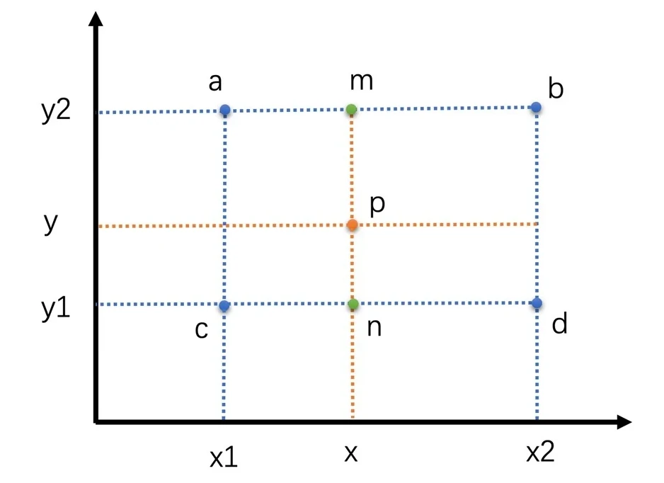
$$ val(m) = \frac{x - x_1}{x_2 - x_1} * val(b) + \frac{x_2 - x}{x_2 - x_1} * val(a) \\ val(n) = \frac{x - x_1}{x_2 - x_1} * val(d) + \frac{x_2 - x}{x_2 - x_1} * val(c) \\ val(p) = \frac{y - y_1}{y_2 - y_1} * val(m) + \frac{y_2 - y}{y_2 - y_1} * val(n) $$
其中的 val() 表示该像素的像素值。
双三次插值算法
- 双三次插值选取的是周围的 16 个像素，比前两种插值算法多了 3 倍
- 周围像素的权重计算是使用一个特殊的 BiCubic 基函数来计算的
先通过这个 BiCubic 基函数计算得到待插值像素周围 16 个像素的权重，然后将 16 个像素加权平均就可以得到最终的待插值像素了。
BiCubic 函数的计算公式如下：
$$ f(x) = \begin{cases} (a+2)|x|^3 - (a+3)|x|^2 + 1 & 0 \le |x| < 1 \\ a|x|^3 - 5a|x|^2 + 8a|x| - 4a & 1 \le |x| < 2 \\ 0 & 2 \le |x| \end{cases} $$
其中 a 的取值范围是 [-1, 0]，一般取 -0.5。
对于周围 16 个点中的每一个点，其坐标值为（x，y），而目标图像中的目标像素在原图像中的映射坐标为 p（u，v）。那么通过上面公式可以求得其水平权重 W（u - x），垂直权重 W（v - y）。将 W（u - x）乘以 W（v - y）得到最终权重值，然后再用最终权重值乘以该点的像素值，并对 16 个点分别做同样的操作并求和，就得到待插值的像素值了。
视频编码
人眼对于亮度信息更加敏感，而对于色度信息稍弱，所以视频编码是将 Y 分量和 UV 分量分开来编码的。对于每一帧图像，又是划分成一个个块来进行编码的，这一个个块在 H264 中叫做宏块。宏块的大小一般是 16x16。
图像的数据冗余
- 空间冗余：一幅图像中相邻像素的亮度和色度信息是比较接近的，并且亮度和色度信息也是逐渐变化的，不太会出现突变。
- 时间冗余：相邻两帧图像的变化比较小，相似性很高
- 视觉冗余：人眼对于图像中高频信息的敏感度要小于低频信息的，去除图像中的一些高频信息对于人眼来说差别不大
- 信息熵冗余：图像中的一些像素值出现的概率比较大，而另一些像素值出现的概率比较小，因此可以通过合理的编码来压缩数据
编码原理
在每一个宏块中，从左上角开始之字形扫描每一个像素值，可以得到一个“像素串”。为了能够在最后熵编码的时候压缩率更高，我们希望送到熵编码（以行程编码为例）的“像素串”，是一串含有很多 0，并且最好连续为 0 的“像素串”。
帧内预测减小图像块的空间冗余
帧内预测就是在当前编码图像内部已经编码完成的块中找到与将要编码的块相邻的块。一般就是即将编码块的左边块、上边块、左上角块和右上角块，通过将这些块与编码块相邻的像素经过多种不同的算法得到多个不同的预测块。然后我们再用编码块减去每一个预测块得到一个个残差块。最后，我们取这些算法得到的残差块中像素的绝对值加起来最小的块为预测块。而得到这个预测块的算法为帧内预测模式。帧内预测是根据块的大小分为不同的预测模式的。在 H264 标准里面，块分为宏块和子块。宏块的大小是 16 x 16（YUV 4:2:0 图像亮度块为 16 x 16，色度块为 8 x 8）。在帧内预测中，亮度宏块可以继续划分成 16 个 4 x 4 的子块。因为图像中有的地方细节很多，我们需要划分成更小的块来做预测会更精细，所以会将宏块再划分成 4 x 4 的子块。帧内预测中亮度块和色度块是分开独立进行预测的，即亮度块参考已编码亮度块的像素，而色度块参考已编码色度块的像素。
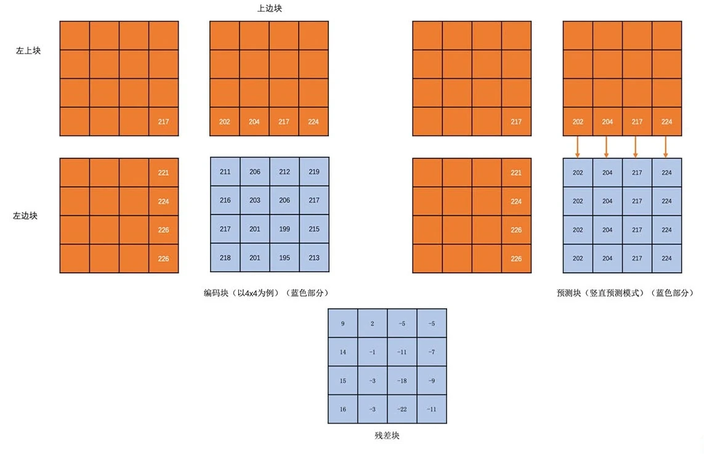
4 x 4 亮度块的帧内预测模式
-
Vertical 模式
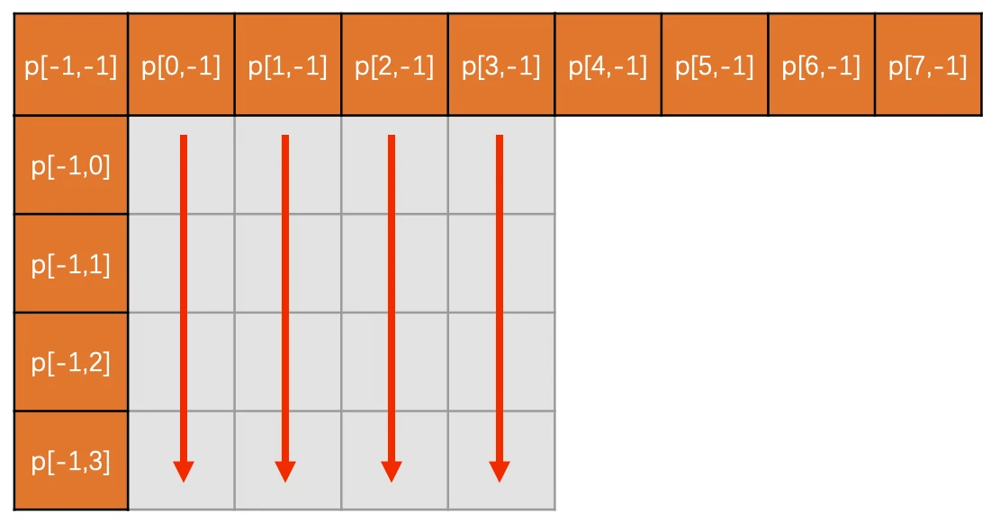
-
Horizontal 模式
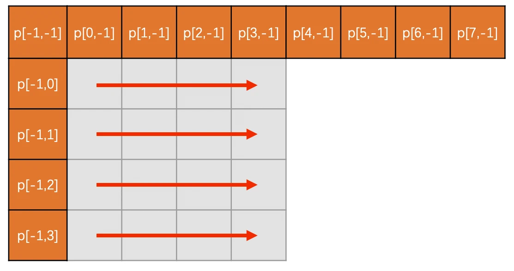
-
DC 模式
DC 模式就是指，当前编码亮度块的每一个像素值，是上边已经编码块的最下面那一行和左边已编码块右边最后一列的所有像素值的平均值。注意，DC 模式预测得到的块中每一个像素值都是一样的。
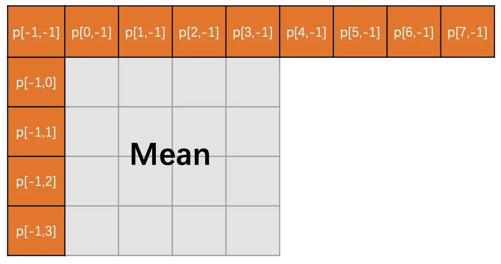
-
Diagonal Down-Left 模式
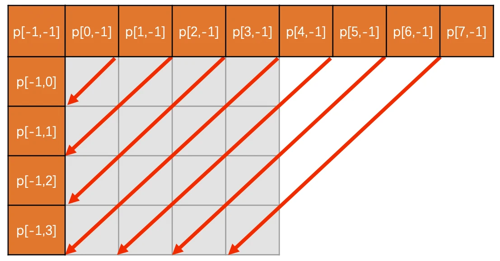
-
Diagonal Down-Right 模式
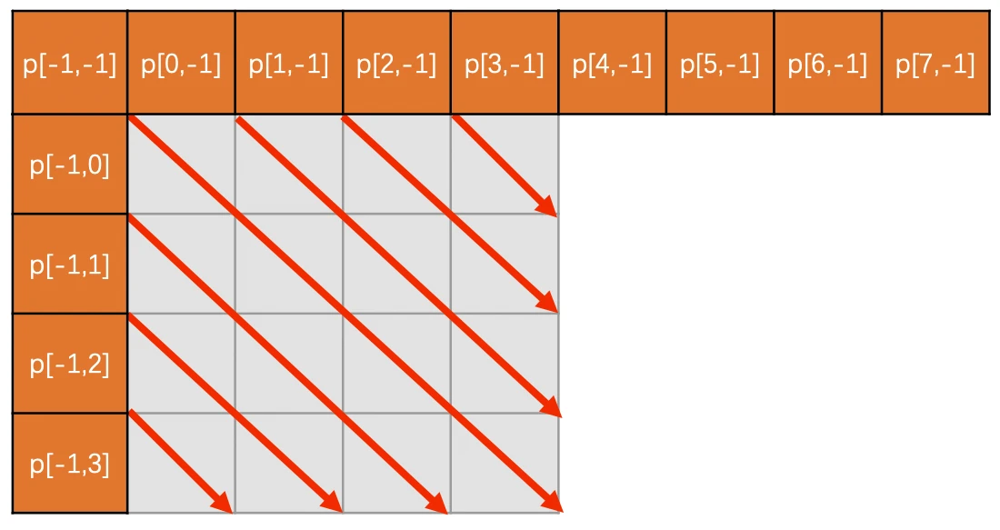
-
Vertical-Right 模式
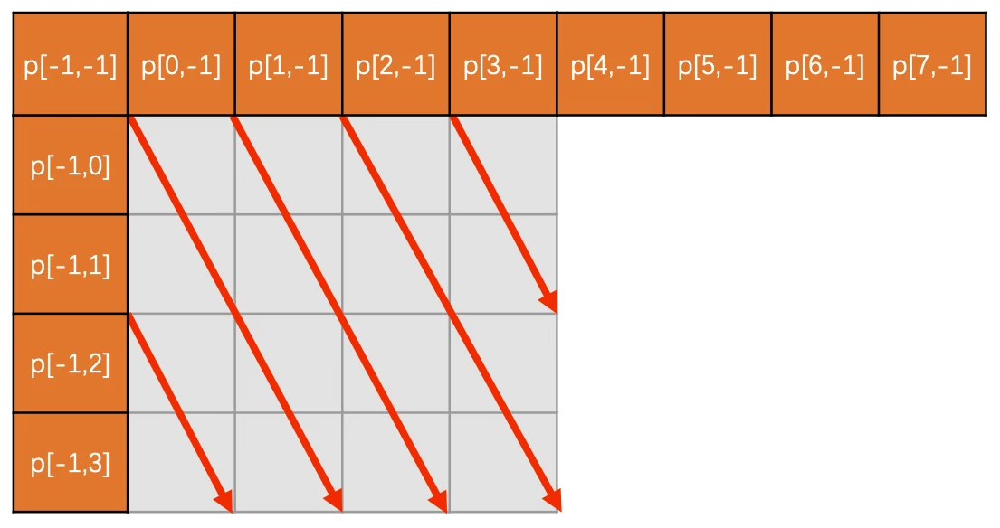
-
Horizontal-Down 模式
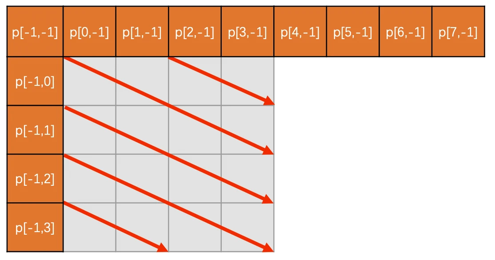
-
Vertical-Left 模式
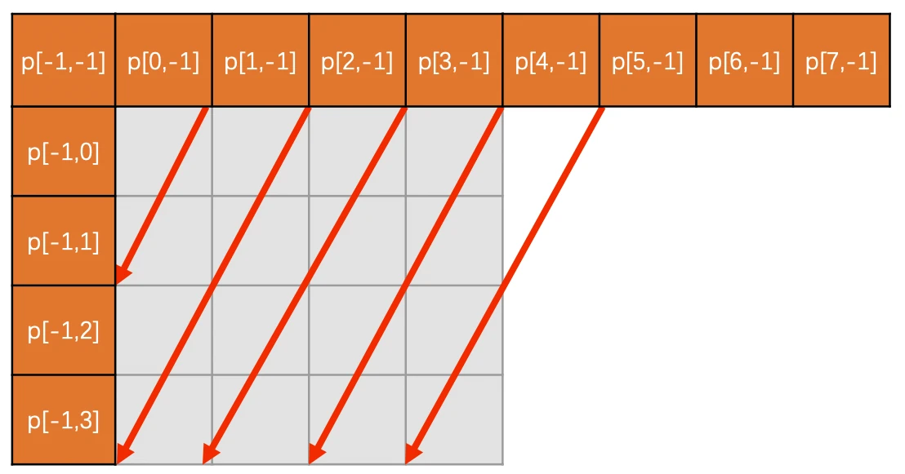
-
Horizontal-Up 模式
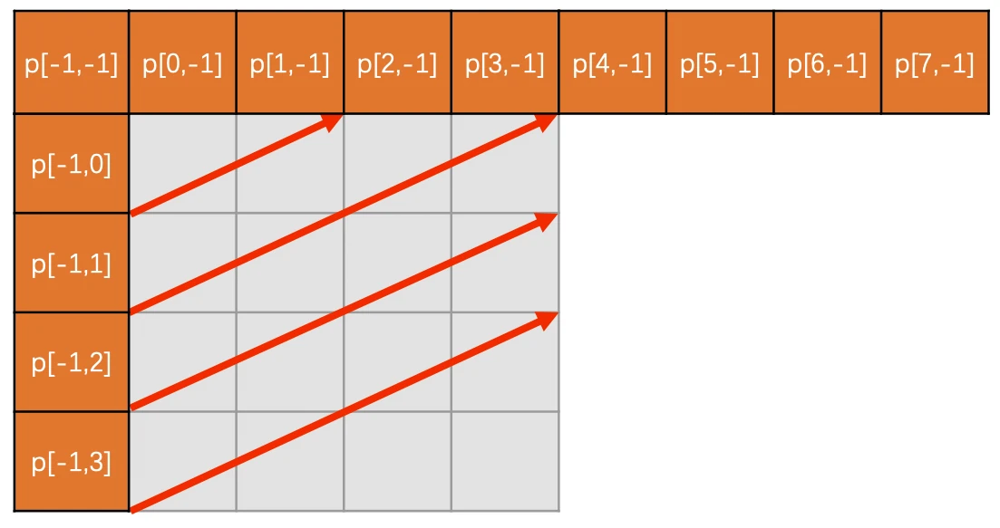
对于每一个块或者子块，我们可以得到预测块，再用实际待编码的块减去预测块就可以得到残差块。主要有下面 3 种方案来得到最优预测模式：
第一种方案，先对每一种预测模式的残差块的像素值求绝对值再求和，称之为 cost，然后取其中残差块绝对值之和也就是 cost 最小的预测模式为最优预测模式。
第二种方案，对残差块先进行 Hadamard 变换（在 DCT 变换和量化那节课中会介绍），变换到频域之后再求绝对值求和，同样称为 cost，然后取 cost 最小的预测模式为最优预测模式。
第三种方案，也可以对残差块直接进行 DCT 变换量化熵编码，计算得到失真大小和编码后的码流大小，然后通过率失真优化的方法来选择最优预测模式。
通过上面讲的这些方法我们找到了每一个 4 x 4 块的最优模式之后，将这 16 个 4 x 4 块的 cost 加起来，与 16 x 16 块的最小 cost 对比，选择 cost 最小的块划分方式和预测模式作为帧内预测模式。
在 H264 标准里面，视频的第一帧的第一个块的左和上都是空，没法预测，所以设置成了一个约定值128，方便编码。
帧间预测减小图像块的时间冗余
在前面已经编码完成的图像中，循环遍历每一个块，将它作为预测块，用当前的编码块与这个块做差值，得到残差块，取残差块中像素值的绝对值加起来最小的块为预测块，预测块所在的已经编码的图像称为参考帧。预测块在参考帧中的坐标值 (x0, y0) 与编码块在编码帧中的坐标值 (x1, y1) 的差值 (x0 - x1, y0 - y1) 称之为运动矢量。在参考帧中去寻找预测块的过程称之为运动搜索。帧间预测既可以参考前面的图像也可以参考后面的图像。只参考前面图像的帧我们称为前向参考帧，也叫 P 帧；参考后面的图像或者前面后面图像都参考的帧，我们称之为双向参考帧，也叫做 B 帧。B 帧相比 P 帧主要是需要先编码后面的帧，并且 B 帧一个编码块可以有两个预测块，这两个预测块分别由两个参考帧预测得到，最后加权平均得到最终的预测块。
帧间预测的宏块大小 16 x 16，可以划分为 16 x 8，8 x 16， 8 x 8 三种，其中 8 x 8 可以继续划分成 8 x 4，4 x 8 和 4 x 4，这是亮度块的划分。在 YUV 4:2:0 中，色度块宽高大小都是亮度块的一半。
在 H264 标准中，P 帧最多支持从 16 个参考帧中选出一个作为编码块的参考帧，但是同一个帧中的不同块可以选择不同的参考帧，这就是多参考。
运动搜索
- 钻石搜索
- 六边形搜索
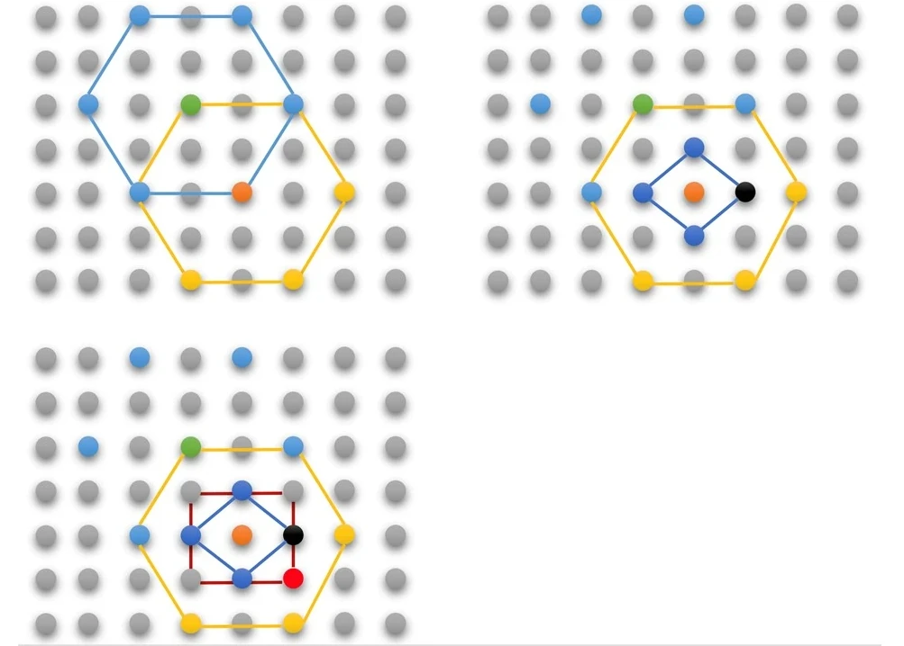
DCT变换和量化减小图像块的视觉冗余
在H264中，如果一个块大小是16x16，一般会划分成16个4x4的块，然后对每个 4x4 的块做 DCT 变换得到相应的 4x4 的变换块。变换块的每一个“像素值”我们称为系数。变换块左上角的系数值就是图像的低频信息，其余的就是图像的高频信息，并且高频信息占大部分。低频信息表示的是一张图的总体样貌。一般低频系数的值也比较大。而高频信息主要表示的是图像中人物或物体的轮廓边缘等变化剧烈的地方。高频系数的数量多，但高频系数的值一般比较小。
让变换块的系数都同时除以一个值，这个值我们称之为量化步长，也就是 QStep（QStep 是编码器内部的概念，用户一般使用量化参数 QP 这个值，QP 和 QStep 一一对应），得到的结果就是量化后的系数。QStep 越大，得到量化后的系数就会越小。同时，相同的 QStep 值，高频系数值相比低频系数值更小，量化后就更容易变成 0。这样一来，我们就可以将大部分高频系数变成 0。
QP 值越大，损失就越大，从而画面的清晰度就会越低。同时，QP 值越大系数被量化成 0 的概率就越大，这样编码之后码流大小就会越小，压缩就会越高。
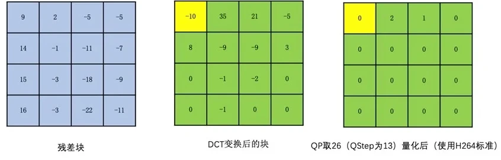
码流结构 (H264)
帧类型
| 帧类型 | 预测方式 | 参考帧 | 优缺点 | |
|---|---|---|---|---|
| I 帧 | 帧内编码帧 | 只进行帧内预测 | 无 | 自身能独立完成编码解码，压缩率小 |
| P 帧 | 前向编码帧 | 可以进行帧内预测和帧间预测 | 前面的 I 帧和 P 帧 | 压缩率比 I 帧高，必须要参考帧才能正确编解码 |
| B 帧 | 双向编码帧 | 可以进行帧内预测和帧间预测 | 前面或者后面的 I 帧和 P 帧 | 压缩率最高，需要缓存帧，延时高，RTC 场景不适合 |

为了防止某个参考帧出错而导致错误的不断传递，H264 规定了一个特殊的 I 帧叫 IDR帧，也叫立即刷新帧。IDR 帧之后的帧不能再参考 IDR 帧之前的帧。
视频图像的序列结构
从一个 IDR 帧开始到下一个 IDR 帧的前一帧为止，这里面包含的 IDR 帧、普通 I 帧、P 帧和 B 帧，我们称为一个 GOP (Group of Pictures) 图像组。
GOP 越大，编码的 I 帧就越少，相比而言，P帧和B帧的压缩率更高，因此整个视频的编码效率越高。但是 GOP 太大，会导致 IDR 帧距离太大，点播场景时进行视频的 seek 操作不方便。并且，在 RTC 和直播场景中，可能会因为网络原因导致丢包而引起接收端的丢帧，大的 GOP 最终可能导致参考帧丢失而出现解码错误，从而引起长时间花屏和卡顿。
图像内部的层次结构
Slice 其实是为了并行编码设计的。将一帧图像划分成几个 Slice，并且 Slice 之间相互独立、互不依赖、独立编码。并行对多个 Slice 进行编码可以提升速度，但是帧内预测不能跨 Slice 进行，因此编码性能会差一些。一个 Slice 会包含整数个宏块。在做帧内和帧间预测的时候，我们又可以将宏块继续划分成不同大小的子块，用来给复杂区域做精细化编码。
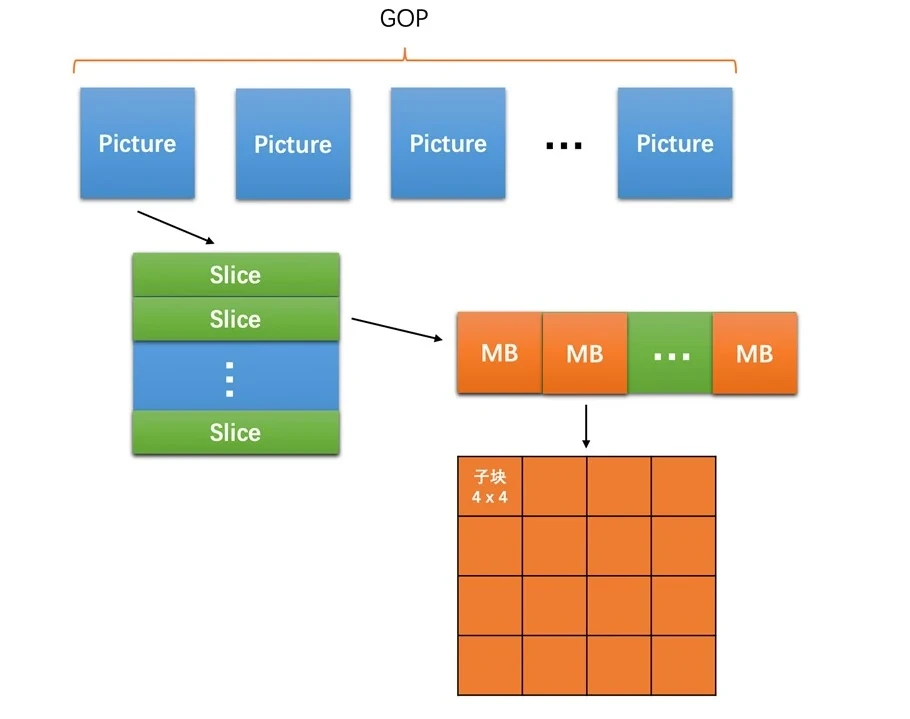
码流格式
H264 码流有两种格式：一种是 Annexb 格式；一种是 MP4 格式。
Annexb 格式使用起始码来表示一个编码数据的开始。起始码本身不是图像编码的内容，只是用来分隔用的。
MP4 格式在图像编码数据的开始使用了 4 个字节作为长度标识，用来表示编码数据的长度。
NALU (网络抽象层单元)
编码数据中除了图像数据，还有一些编码参数数据，为了能够将一些通用的编码参数提取出来，不在图像编码数据中重复，H264 设计了两个重要的参数集：一个是 SPS（序列参数集）；一个是 PPS（图像参数集）。
SPS 主要包含的是图像的宽、高、YUV 格式和位深等基本信息。
PPS 主要包含熵编码类型、基础 QP 和最大参考帧数量等基本编码信息。
H264 的码流主要是由 SPS、PPS、I Slice、P Slice和B Slice 组成的。
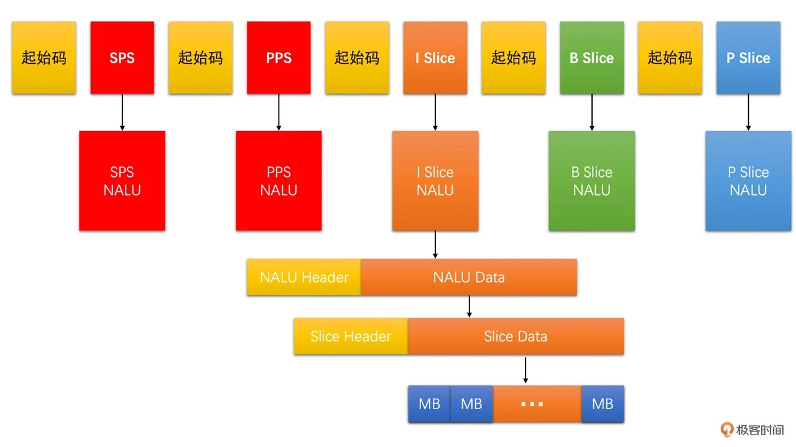
SPS 是一个 NALU、PPS 是一个 NALU、每一个 Slice 也是一个 NALU。每一个 NALU 又都是由一个 1 字节的 NALU Header 和若干字节的 NALU Data 组成的。而对于每一个 Slice NALU，其 NALU Data 又是由 Slice Header 和 Slice Data 组成，并且 Slice Data 又是由一个个 MB Data 组成。
NALU Header

- F: 禁止位，H264 码流必须为 0
- NRI： nal_ref_idc，表示当前 NALU 的重要性。参考帧、SPS 和 PPS 对应的 NALU 必须要大于 0
- Type： nal_unit_type，表示 NALU 的类型
NALU 类型表格：
| NALU 类型 | 描述 |
|---|---|
| 0 | 未使用 |
| 1 | 非 IDR 图像中的 Slice |
| 2 | 片分区 A |
| 3 | 片分区 B |
| 4 | 片分区 C |
| 5 | IDR 图像中的 Slice |
| 6 | 补充增强信息单元 SEI |
| 7 | 序列参数集 SPS |
| 8 | 图像参数集 PPS |
| 9 | 分解符 |
| 10 | 序列结束 |
| 11 | 码流结束 |
| 12 | 填充 |
| 13...23 | 保留 |
| 24...31 | 未使用 |
NALU 类型只区分了 IDR Slice 和非 IDR Slice，至于非 IDR Slice 是普通 I Slice、P Slice 还是 B Slice，则需要继续解析 Slice Header 中的 Slice Type 字段得到。
如何从码流中判断哪几个 Slice 是同一帧的
H264 码流中没有字段表示一帧包含几个 Slice，但是 Slice Header 中有一个 first_mb_in_slice 的字段，表示当前 Slice 的第一个宏块在当前编码图像中的序号。如果 first_mb_in_slice 的值等于 0，就代表了当前 Slice 的第一个宏块是一帧的第一个宏块，也就是说当前 Slice 就是一帧的第一个 Slice。first_mb_in_slice 是以无符号指数哥伦布编码的，需要使用对应的解码方式才能解码出来。但是有一个小技巧，如果 slice_header[0] & 0x80 == 1， 则first_mb_in_slice 等于 0。
如何从码流中获取 QP 值
在 PPS 中有一个全局基础 QP，字段是 pic_init_qp_minus26。当前序列中所有依赖该 PPS 的 Slice 共用这个基础 QP，且每一个 Slice 在这个基础 QP 的基础上做调整。在 Slice Header 中有一个 slice_qp_delta 字段来描述这个调整偏移值。更进一步，H264 允许在宏块级别对 QP 做更进一步的精细化调节。这个字段在宏块数据里面，叫做 mb_qp_delta。
使用 ffmpeg 从视频文件中提取 H264 码流
ffmpeg -i input.mp4 -c:v copy -bsf:v h264_mp4toannexb -an output.h264
不同的编码器标准比较
USB 基础
USB 基本概念
USB 协议标准
| USB 协议标准 | 主要特点 | 速度等级 |
|---|---|---|
| USB 2.0 Full Speed （旧称 USB 1.1） | 规范了 USB 低全速传输 | 1.5 Mbps~12 Mbps |
| USB 2.0 High Speed （旧称 USB 2.0） | 规范了 USB 高速传输 | 480 Mbps |
| USB 3.2 gen1 （旧称 USB 3.0） | 采用 8b/10b 编码，增加一对超高速差分线，供电 5V/0.9A | 5 Gbps |
| USB 3.2 gen2 （旧称 USB 3.1） | 采用 128b/132b 编码，速度提高 1 倍，供电 20V/5A，同时增加了 A/V 影音传输标准 | 10 Gbps |
| USB 3.2 gen2*2 （旧称 USB 3.2） | 增加一对超高速传输通道，速度再次翻倍，只能在 C 型接口上运行 | 20 Gbps |
通讯接口

编码方式

这种编码方式也称为反向不归零编码（NRZI）
位填充：在数据进行 NRZI 编码前，每 6 个连续的 1 信号之后都会插入 1 个 0 信号，以避免长时间电平保持不变带来的同步漂移。
信号传输状态

帧
帧是一个时间单位，固定为1ms（低/全速），高速-微帧为 125us
通讯过程划分

事务是最基本的传输单位。
四种传输
::: tip 控制传输 主机获取设备信息、状态，选择设备配置等一系列命令式工作。 :::
::: tip 中断传输
收发数据量少、周期性传输。
:::
::: tip 批量传输
利用任何可获得的总线带宽进行数据传输。
:::
::: tip 等时传输
恒定速率、没有差错控制的传输。
:::
其他术语
上传/下传
USB 主机接收 USB 设备的数据称为上传，USB 主机发送数据给 USB 设备称为下传。
地址
主机管理设备，而为每一个连接的设备分配一个地址，主机最多可以分配 127 个地址。
端点
USB 设备中实际的物理单元，端点和地址决定了主机和设备之间通讯的物理通道。
USB 传输特点
物理传输双方角色一定是主机和设备，一问一答传输方式，永远是主机先发起包请求。
主设备和从设备
主设备
- 检测 USB 设备的插拔动作
- 管理主从通讯之间的控制流
- 管理主从通讯之间的数据流
- 记录主机状态和设备动作信息
- 控制主控制器和 USB 设备间的电气接口
集线器
- 扩展 USB 主机和 USB 端口
- 结构上有一个上行端口，多个下行端口
- 支持级联，系统中最多 5 个集线器（不包括主机的根集线器）
- 支持速度切换
功能设备
- 一个独立的外围设备，可以是单一功能，也可以是多功能的合成设备
- 内部包含有描述自身功能和资源需求的配置信息

USB 系统分层

连接与检测


总线的状态
| 常见的总线状态 | 描述 |
|---|---|
| 正常工作 | 总线上存在周期性 SOF 包 |
| 总线复位 | 总线维持 SE0 状态 > 10ms |
| 总线挂起 | 总线无活动 > 3ms |
| 常见的几种变化 | 触发点 |
|---|---|
| 无连接 -> 连接 | D+/D- 上出现高电平 > 2ms |
| 正常 -> 挂起 | J 状态保持 > 3ms |
| 挂起 -> 正常（唤醒） | 出现 K 状态信号并持续一段时间 |
枚举
:::tip 枚举的定义
USB 主设备向 USB 从设备通过获取各种描述符，从而了解设备属性，知道是什么样的设备，并加载对应的 USB 类、功能驱动程序，然后进行后续一系列的数据通信。
:::
- 主设备连接识别从设备必须的过程
- 由多个控制传输构成
- 经过地址0 （缺省地址）到其他地址（主设备分配地址）的通讯
- 对于挂载多个 USB 从设备的系统，主设备是逐一进行枚举操作

设备描述符
第一个需要获取的描述符，长度固定 18 字节。
配置描述符
描述了设备特定的配置，提供了当前配置下设备的功能接口，供电方式，耗电等信息。是一个配置的集合，集合长度不固定，包含了配置描述符、接口描述符、类定义描述符、端点描述符。
控制传输


建立阶段

USB 键盘


参考文献
CAN 基础
拓扑结构
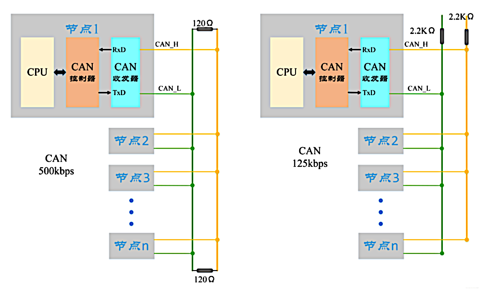
CAN总线有两个 ISO 国际标准：ISO11898 和 ISO11519。
- ISO11898 定义了通信速率为 125 Kbps～1 Mbps 的高速 CAN 通信标准，属于闭环总线，总线长度 ≤ 40 米。
- ISO11519 定义了通信速率为 10～125 Kbps 的低速 CAN 通信标准，属于开环总线，总线长度可达 1000 米。
- ISO16845 定义了认证需要的测试用例
- 在同一条总线上，所有节点的通信速度必须相同；如果两条不同通信速度的总线上的节点想要实现信息交互，必须通过网关或者中继器转发信息。
信号表示
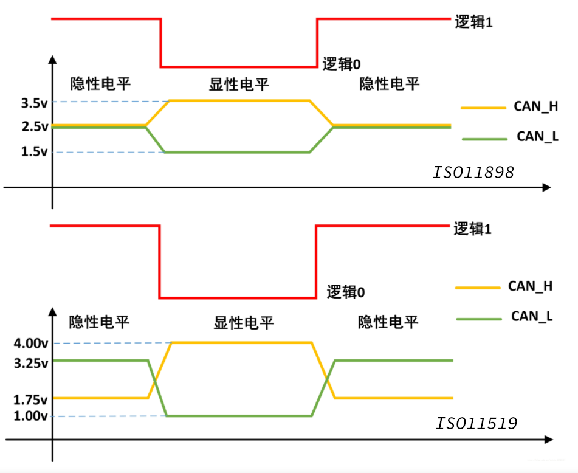
通信特点
多主多从结构
- CAN 总线上的所有节点没有主从之分，在总线空闲状态，任意节点都可以向总线上发送消息
- 当总线上出现连续的 11 位隐形电平，那么总线就处于空闲状态
- 最先向总线发送消息的节点获得总线的发送权，当多个节点同时向总线发送消息时，所发送消息的优先级高的那个节点获得总线的发送权
- 依赖于硬件的验收滤波技术，CAN 总线可以实现一对一，一对多以及广播的数据传输方式。
非破坏性位仲裁机制
当多个节点同时向总线发送消息时，对各个消息的标识符（即ID号）进行逐位仲裁，如果某个节点发送的消息仲裁获胜，那么这个节点将获取总线的发送权，仲裁失败的节点则立即停止发送并转变为监听（接收）状态。
这种仲裁机制既不会造成已发送数据的延迟，也不会破坏已经发送的数据。
报文过滤
CAN 总线中没有地址的概念，CAN 总线是通过报文 ID 来实现收发数据的。每个节点上都会有一个验收滤波 ID 表，其位于 CAN 节点的验收滤波器中，如果总线上的报文的 ID 号在某个节点的验收滤波 ID 表中，那么这一帧报文就能通过该节点验收滤波器的验收，该节点就会接收这一帧报文。
远程数据请求
某个节点 Node_A 可以通过发送遥控帧到总线上的方式，请求某个节点 Node_B 来发送由该遥控帧所指定的报文。
出错处理
- 所有的节点都可以检测出错误
- 检测出错误的节点会立即通知总线上其它所有的节点
- 正在发送消息的节点，如果检测到错误，会立即停止当前的发送，同时不断地重复发送此消息，直到该消息发送成功为止
故障封闭
节点能够判断错误的类型，判断是暂时性的数据错误（如噪声干扰）还是持续性的数据错误（如节点内部故障），如果判断是严重的持续性错误，那么节点就会切断自己与总线的联系，从而避免影响总线上其他节点的正常工作。
位填充
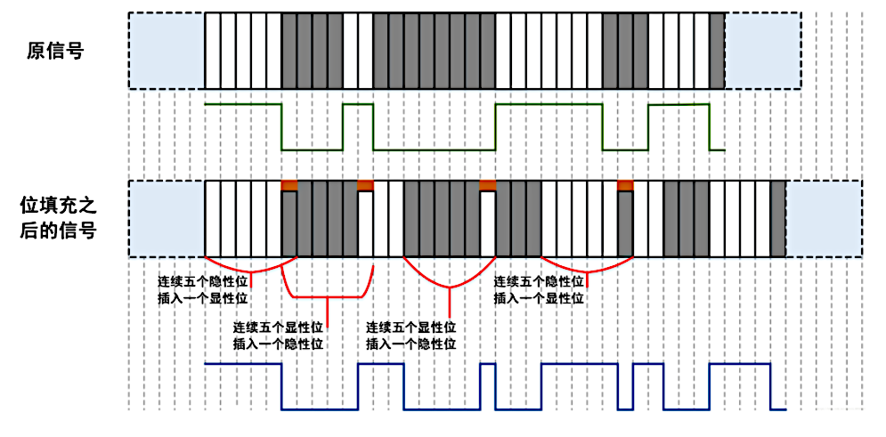
CAN 协议中规定，当相同极性的电平持续五位时，则添加一个极性相反的位。
网络分层架构
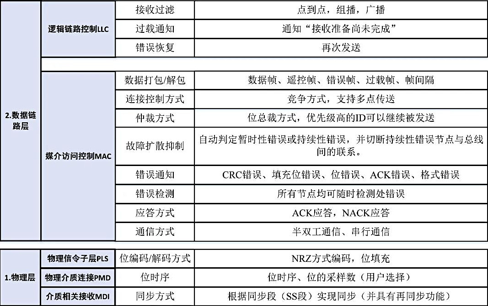
帧结构
数据帧和遥控帧
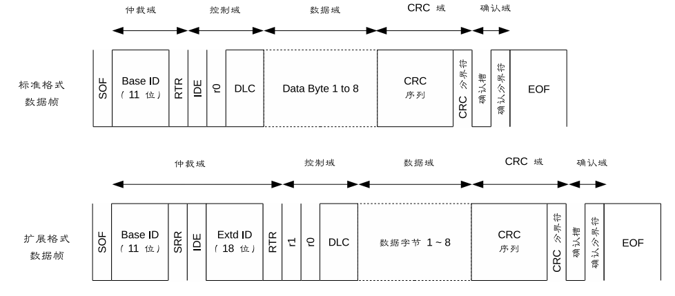
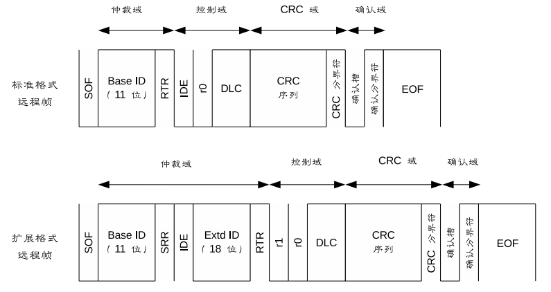
- RTR(Remote Transmission Request) 位保证了数据帧的优先级高于遥控帧
- SRR(Substitutes Remote Requests) 位保证了标准数据帧的优先级高于扩展数据帧
- IDE(Identifier Extension) 位保证了标准遥控帧的优先级高于扩展遥控帧
- DLC(Data Length Code) 位指示了数据段中的字节数，对于遥控帧而言，DLC 表示该遥控帧对应的数据帧的数据段的字节数
- 数据段从 MSB 开始输出
- CRC 校验序列(15bit)的计算范围包括：SOF,仲裁段，控制段和数据段
- ACK 包括 ACK 槽和 ACK 分界符：
- 发送节点发出的报文中 ACK 槽为
隐性1 - 接收节点在接收到正确的报文之后会在 ACK 槽发送
显性0，通知发送节点正常接收结束
- 发送节点发出的报文中 ACK 槽为
- EOF(End Of Frame) 表示该帧报文的结束，由7个隐性位构成
错误帧
在 CAN 总线通信中，一共有五种错误，分别是：位错误、ACK错误、填充错误、CRC错误、格式错误。
- 主动错误标志：6个连续的显性位0
- 被动错误标志：6个连续的隐性位1
- 错误分界符：8个连续的隐性位1
过载帧
- 接受单元会发从此帧来通知总线自己还没有做好接收准备
帧间隔
- 数据帧和遥控帧可通过插入帧间隔将本帧与前面的任何帧（数据帧、遥控帧、错误帧、过载帧）分开，过载帧和错误帧前不能插入帧间隔
错误通知
节点错误状态
按照 CAN 协议的规定，CAN 总线上的节点始终处于以下三种状态之一：
-
主动错误状态
- 可以正常通信
- 在检测出错误时，发出主动错误标志
-
被动错误状态
- 可以正常通信
- 在检测出错误时，发出被动错误标志
-
总线关闭状态
- 节点不能收发报文
- 在满足一定条件的时候，再次进入到主动错误状态
错误状态的转换
在 CAN 节点内，有两个计数器：发送错误计数器（TEC）和接收错误计数器（REC）。TEC 和 REC 计数值的变化，是根据下表的规定来进行的
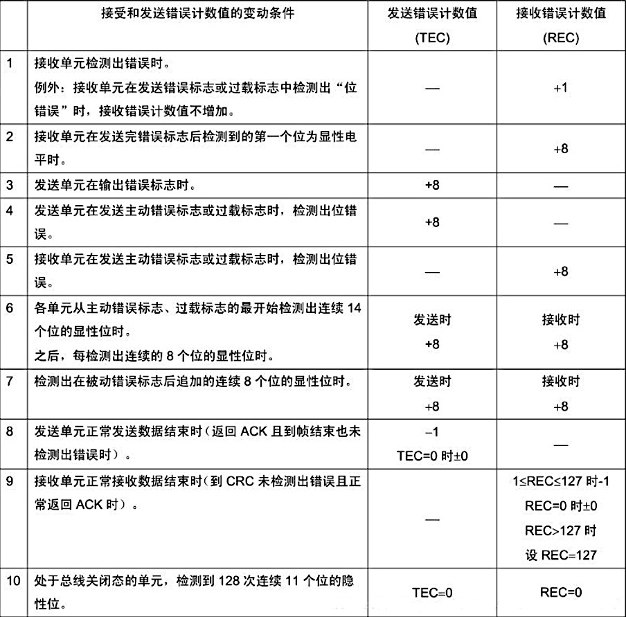
CAN节点错误状态的转换，就是基于这两个计数器来进行的
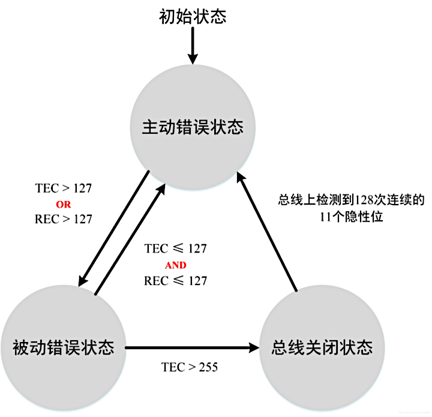
错误帧的发送
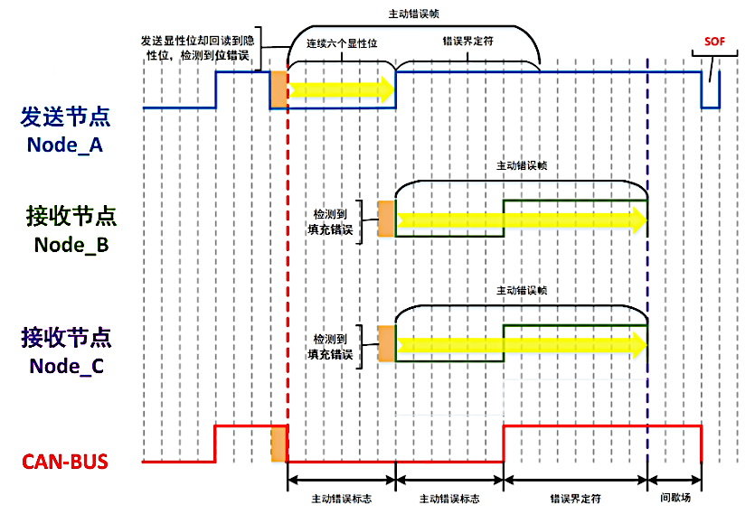
- 发送节点 Node_A 发送一个显性位，但是却从总线上听到一个隐形位，于是 Node_A 节点就会检测到一个位错误
- Node_A 检测到位错误之后，立即在下一位开始发送主动错误帧：6个连续显性位的主动错误标志+8个连续隐性位的错误界定符
- 对应 Node_A 发出的主动错误标志，总线上电平为6个连续显性位
- 接收节点 Node_B 和 Node_C 从总线上听到连续6个显性位，那么就会检测到一个填充错误，于是这两个节点都会发送主动错误帧
- 对应 Node_B 和 Node_C 发出的主动错误标志，总线电平又有6个连续显性电平，对应 Node_B 和 Node_C 发出的错误界定符，总线电平有8个连续的隐性电平
- 在间歇域之后，Node_A 节点重新发送刚刚出错的报文
Socket CAN
命令行工具
ip 命令
ip link set can0 type can help
设置 CAN 设备的波特率
ip link set can0 type can bitrate 500000
ip link set can0 type can bitrate 500000 dbitrate 2000000 fd on
ip link set can0 type can bitrate 500000 sample-point 0.875
启动/关闭 CAN 设备
ip link set can0 up
ip link set can0 down
设置 CAN 设备的模式
ip link set can0 type can loopback on
ip link set can0 type can listen-only on
查看详细的配置信息
ip -details link show can0
can-utils 程序
candump
candump can0,0x123:0x7FF # 仅显示can0上收到的ID为0x123的消息
cansend
cansend can0 123#1122334455667788 # 发送一个ID为0x123的报文
cangen
cangen can0 -g 0x123 -I 1000 -L 8 -D 0x1122334455667788 # 每1000ms发送一个ID为0x123的报文
cansniffer
cansniffer can0 # 抓取can0上的所有报文，可以过滤掉数据不变的帧
python-can
安装
pip install python-can
使用
# import the library
import can
# create a bus instance
# many other interfaces are supported as well (see documentation)
bus = can.Bus(interface='socketcan',
channel='vcan0',
receive_own_messages=True)
# send a message
message = can.Message(arbitration_id=123, is_extended_id=True,
data=[0x11, 0x22, 0x33])
bus.send(message, timeout=0.2)
# iterate over received messages
for msg in bus:
print(f"{msg.arbitration_id:X}: {msg.data}")
# or use an asynchronous notifier
notifier = can.Notifier(bus, [can.Logger("recorded.log"), can.Printer()])
MIPI DSI 基础
MIPI 层次结构
DSI
MIPI DSI 是基于字节的协议，应用层完成各种操作下相关命令的选择、各像素点图像数据的字节映射处理。MIPI 定义了命令模式和视频模式两种传输模式。视频模式以实时像素数据流的方式从处理器向外设传输数据，而命令模式可以做到按需传输，只需要在图像内容发生变化时再进行新图像数据的传输。命令模式需要显示模组中的帧缓存存储器的支持。这两种传输模式的支持，由模组硬件结构决定。
MIPI DSI 的高速数据传输采用差分信号来传输，在时钟通道和各个数据通道上都会有高速数据传输。
MIPI DSI 的低功耗数据传输并不需要时钟传输，这时 D-PHY 采用归零码的方式来表示逻辑数据“0” “1”，并且低功耗数据只会在数据通道0上进行传输，对通道0的P端和N端进行异或操作就可以恢复出数据比特流的“同步时钟”。
DSI 系统架构
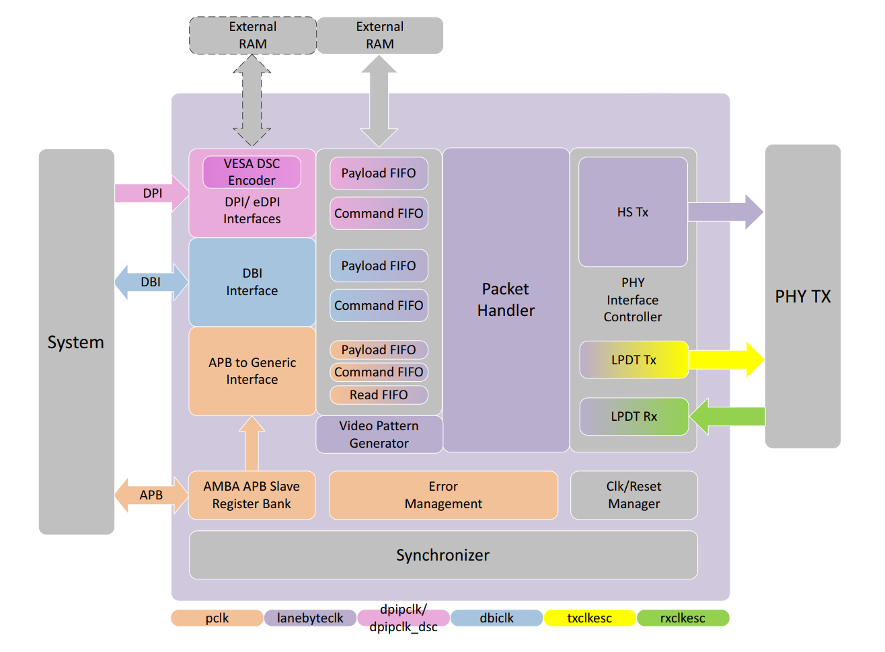
| 时钟 | 最小频率 | 最大频率 |
|---|---|---|
| rxclkesc | 由 PHY 限制，通常不超过 20MHz | |
| txclkesc | 由 PHY 限制，通常不超过 20MHz | |
| lanebyteclk | 3 * rxclkesc | 1/8 of the DPHY maximum speed |
| pclk | 2MHz | 220MHz |
| dpiclk | 250MHz | |
| dbiclk | 41MHz |
DSI 层级结构
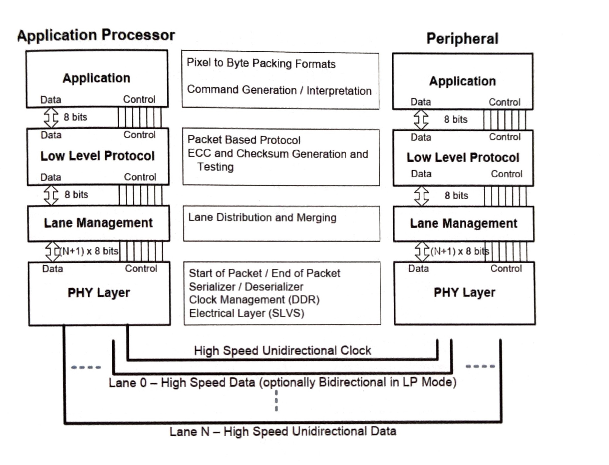
视频模式
视频模式下，图像数据的传输是用低阶协议层包结构中的数据类型标识符（DT,Data Type）字段区分，用不同的 DT 来构造视频模式传输所需要的各种数据包。视频模式下，应用层只提供图像数据的净荷，利用低阶协议层进行组包处理。在 MIPI DSI 中，同步信号分为以下几个命令：
| 同步信号命令 | 功能 |
|---|---|
| HSS | HSA开始命令 |
| HSE | HSA结束命令 |
| VSS | VSA开始命令 |
| VSE | VSA结束命令 |
非突发同步脉冲模式
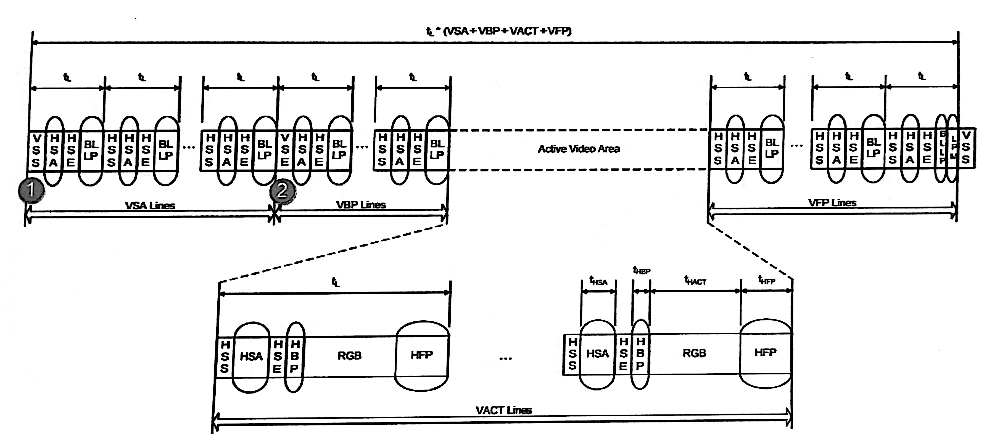
非突发同步事件模式
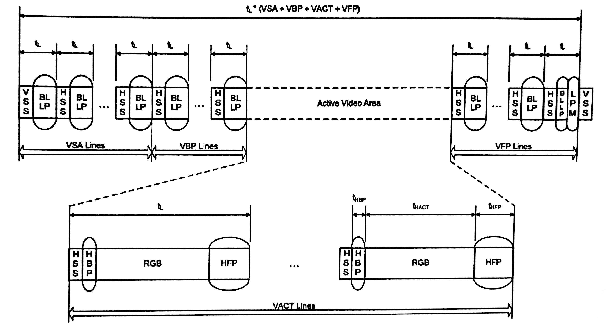
在这个模式下，不再向显示模组传输 HSE、VSE 命令，而仅仅传输 HSS、VSS 命令。
突发模式
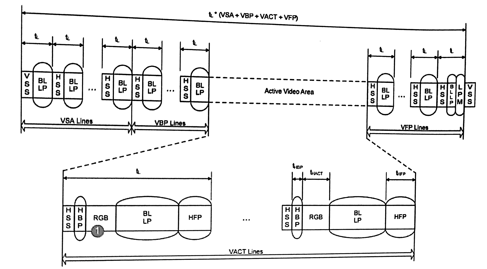
突发模式是指传输 RGB 图像数据时，充分利用 MIPI 提供的带宽，采用突发方式先把图像数据传输给显示模组进行缓存，然后切换到低功耗模式。这种模式需要显示模组有行缓存区或类似的存储区域。
常用的数据命令传输方式：
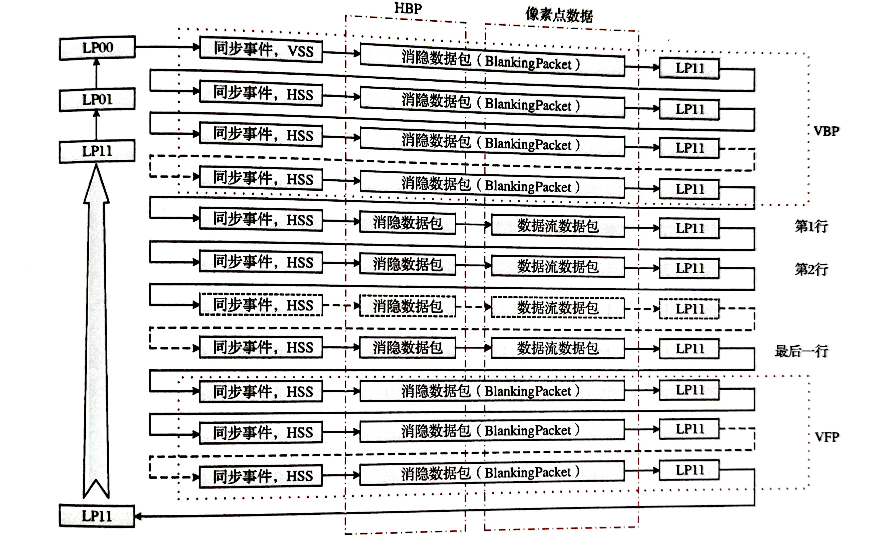
在有效显示行、行同步信号和有效数据之间，需要使用消隐包（blanking packet) 来填充相应的时间，在消隐行期间，没有图像数据传输，也用消隐包来替代。采用这种结构，一帧中的每一行，处于发送的时间都是相同的。
图像数据包格式(DT=0x3E)
视频模式下，在应用层，只提供实时图像数据流，LLP层提供一定开销，通过所组数据包中的DI字段，形成VSS、HSS等时序命令，向从设备传递时序信息。RGB图像数据也通过 DI 字段的不同命令来传输。
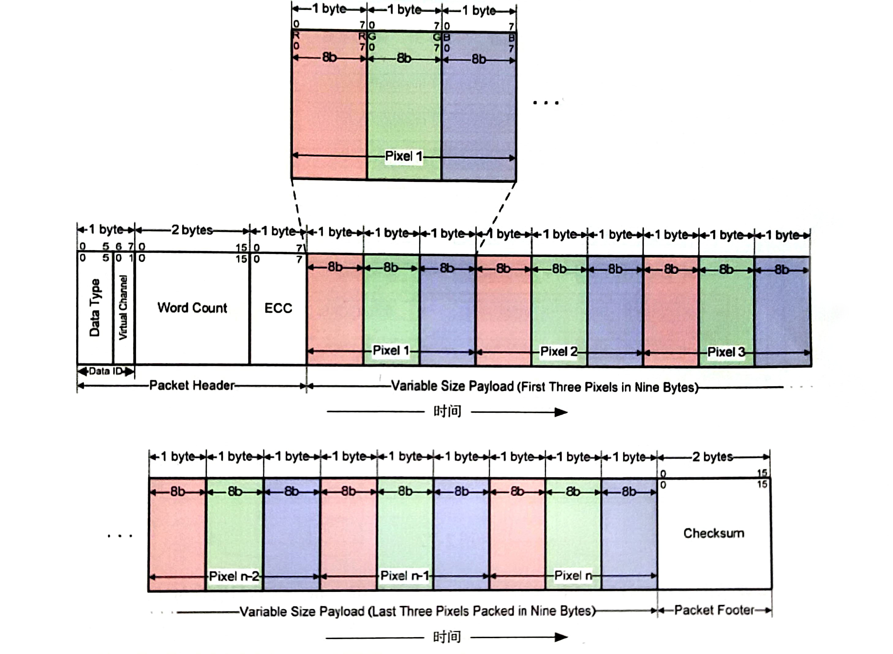
低阶协议层 （LLP）
基于 MIPI DSI 物理层 D-PHY 的特殊结构，每个包在开始传输前，一定处于一个被称为低功耗模式的状态（LPS）。开始数据传输时，最先传输的是一种特殊的包结构——包开始指示（SoT, Start of Transmission）。SOT之后才传输 MIPI DSI 数据包。为了增加接口处理带宽，MIPI DSI 允许一次数据传输支持多个数据包，且长包和短包可以任意顺序出现。在同一次传输中，这些数据包要么都用高速传输模式，要么都用低功耗传输模式。
DSI 包结构
-
长包结构(最大65535字节的payload) 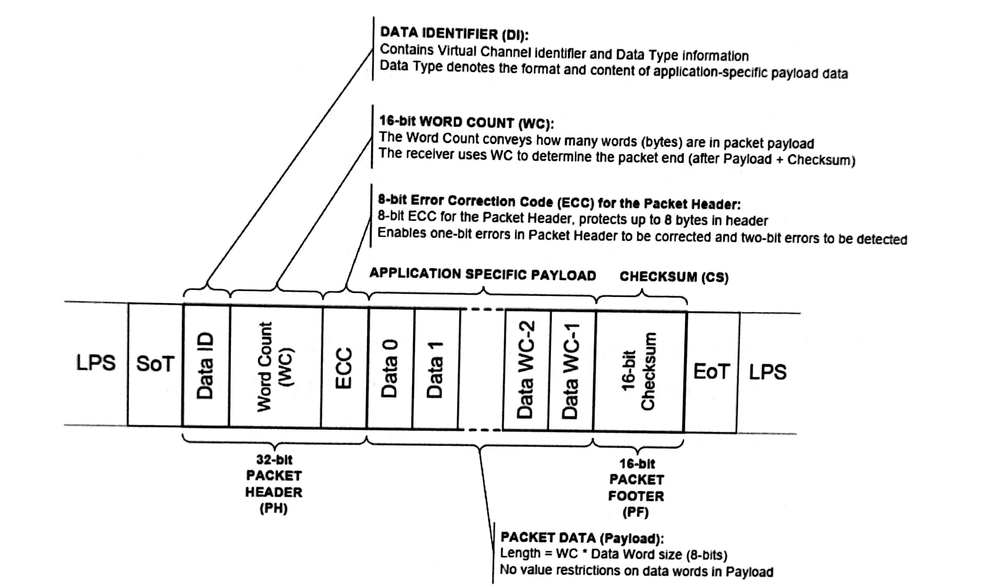
-
短包结构(固定传输两个字节) 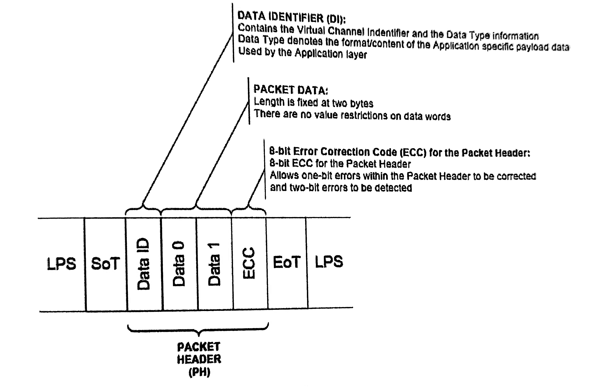
DSI 数据传输字节序
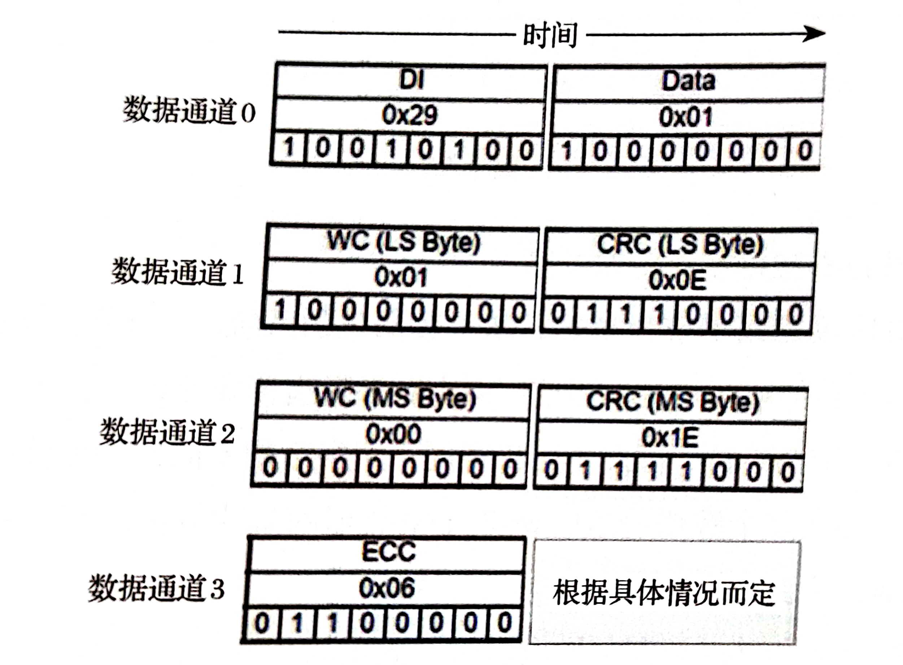
一个数据包内的各个字节按照低字节，低比特位先传。
数据包类型标识符（DT）
- 正向数据传输的 DT
| DT 编码值 | DT 含义 | 说明 | 长短包类型 |
|---|---|---|---|
| 01h | VSS ( V Sync Start ) | 帧同步开始数据包 | 短包 |
| 11h | VSE ( V Sync End ) | 帧同步结束数据包 | 短包 |
| 21h | HSS (H Sync Start ) | 行同步开始数据包 | 短包 |
| 31h | HSE (H Sync End ) | 行同步结束数据包 | 短包 |
| 08h | EoTp ( EoT Packet ) | 传输结束指示数据包 | 短包 |
| 02h | Color Mode Off Command | 显示模组进入浅色显示模式 | 短包 |
| 12h | Color Mode On Command | 显示模组恢复正常显示模式 | 短包 |
| 22h | Shutdown Peripheral Command | 关闭显示模组命令 | 短包 |
| 32h | Turn On Peripheral Command | 激活显示模组命令 | 短包 |
| 03h | Generic Short Write | 通用短包写命令，不带参数 | 短包 |
| 13h | Generic Short Write | 通用短包写命令，带1字节参数 | 短包 |
| 23h | Generic Short Write | 通用短包写命令，带2字节参数 | 短包 |
| 04h | Generic Read | 通用读命令，不带参数 | 短包 |
| 14h | Generic Read | 通用读命令，带1字节参数 | 短包 |
| 24h | Generic Read | 通用读命令，带2字节参数 | 短包 |
| 05h | DCS Short Write | DCS短包写命令，不带参数 | 短包 |
| 15h | DCS Short Write | DCS短包写命令，带1字节参数 | 短包 |
| 06h | DCS Read | DCS读命令，不带参数 | 短包 |
| 37h | Set Maximum Return Packet | 设置最大返回包长度 | 短包 |
| 09h | Null Packet | 空包，不带数据 | 短包 |
| 19h | Blanking Packet | 消隐包，不带数据 | 长包 |
| 29h | Generic Long Write | 通用长包写命令 | 长包 |
| 39h | DCS Long Write | DCS长包写命令 | 长包 |
| 0Ch | Loosely Packet Pixel Stream | 20比特4:2:2格式YUV像素流 | 长包 |
| 1Ch | Packed Pixel Stream | 24比特4:2:2格式YUV像素流 | 长包 |
| 2Ch | Packed Pixel Stream | 16比特4:2:2格式YUV像素流 | 长包 |
| 0Dh | Packed Pixel Stream | 30比特10:10:10格式RGB像素流 | 长包 |
| 1Dh | Packed Pixel Stream | 36比特12:12:12格式RGB像素流 | 长包 |
| 3Dh | Packed Pixel Stream | 12比特4:2:0格式YUV像素流 | 长包 |
| 0Eh | Packed Pixel Stream | 16比特5:6:5格式RGB像素流 | 长包 |
| 1Eh | Packed Pixel Stream | 18比特6:6:6格式RGB像素流 | 长包 |
| 2Eh | Loosely Packet Pixel Stream | 18比特6:6:6格式RGB像素流 | 长包 |
| 3Eh | Packed Pixel Stream | 24比特8:8:8格式RGB像素流 | 长包 |
- 反向数据传输的 DT
| DT 编码值 | DT 含义 | 说明 | 长短包类型 |
|---|---|---|---|
| 02h | Acknowledge Error Report | 错误应答报告 | 短包 |
| 08h | EoTp ( EoT Packet ) | 传输结束指示数据包 | 短包 |
| 11h | Generic Short Read Response | 通用短包读响应，返回1字节数据 | 短包 |
| 12h | Generic Short Read Response | 通用短包读响应，返回2字节数据 | 短包 |
| 21h | DCS Short Read Response | DCS短包读响应，返回1字节数据 | 短包 |
| 22h | DCS Short Read Response | DCS短包读响应，返回2字节数据 | 短包 |
| 1Ah | Generic Long Read Response | 通用长包读响应 | 长包 |
| 1Ch | DCS Long Read Response | DCS长包读响应 | 长包 |
其中的错误应答报告数据包的各个比特的含义如下：
| 比特位 | 含义 |
|---|---|
| 0 | 传输开始错误 |
| 1 | 传输开始同步错误 |
| 2 | 传输结束同步错误 |
| 3 | 逃逸模式进入命令错误 |
| 4 | 低功耗传输同步错误 |
| 5 | 外设超时错误 |
| 6 | 错误控制错误 |
| 7 | 冲突检测错误 |
| 8 | 单比特ECC错误 （检测到，且已纠正） |
| 9 | 多比特ECC错误 （检测到，但未纠正） |
| 10 | CRC错误 |
| 11 | 无法识别的DSI数据类型 |
| 12 | 无效的虚拟通道号 |
| 13 | 无效的数据长度 |
| 14 | 保留位 |
| 15 | DSI协议违例 |
不管是正向数据传输还是反向数据传输，都有 EoTp 的数据类型，DT 值为08h，虚拟通道号固定为0。
当从设备同时有其他数据包需要传输回主处理器时，应答和错误报告数据包必须是最后一个传输的数据包。如果没有检测到任何错误，应该和错误数据包也可以不传输。
链路管理层
MIPI DSI 是一个数据通道灵活可变的数据传输系统，对于一个指定的系统，一旦上电后，支持的通道数量也就固定下来了，不能在工作过程中进行修改。MIPI DSI 数据包传输使用多个数据通道时，每个通道发起各自的 SoT,所以每个通道的第一个字节发送时间是相同的，但是EoT却不尽然。接收端必须等全部通道的数据收集完毕后才能把数据送给低阶协议层。
MIPI D-PHY
一个通道两根信号的电平值确定了 D-PHY 的工作状态。分别把两个信号线用 Dp、Dn来表示，MIPI 通道的电平状态有以下几种：
- HS-0: 高速模式下的逻辑0，Dp=差分低电平（100mV），Dn=差分高电平（300mV）
- HS-1: 高速模式下的逻辑1，Dp=差分高电平（300mV），Dn=差分低电平（100mV）
- LP-00: Dp 和 Dn 都是低功耗信令低电平
- LP-11: Dp 和 Dn 都是低功耗信令高电平。也称为停止状态，MIPI 主机和设备之间无法进行任何数据通信。
- LP-01: Dp 是低功耗信令低电平，Dn 是低功耗信令高电平
- LP-10: Dp 是低功耗信令高电平，Dn 是低功耗信令低电平
处于停止状态时，需要Dp、Dn上的特定电平序列才能进入允许数据/命令传输的状态，这些特定的电平序列被称为传输请求。
| Dp Dn 电平序列 | 传输请求类型 |
|---|---|
| LP11 -> LP01 -> LP00 | 高速数据传输请求 |
| LP11 -> LP10 -> LP00 -> LP01 -> LP00 | 逃逸模式请求 |
| LP11 -> LP10 -> LP00 -> LP10 -> LP00 | （总线方向）反转请求 |
总线方向反转（Bus Turn Around）
图中1号区域代表低功耗请求，3号区域代表反转请求，6号区域代表反转应答
逃逸模式
逃逸模式是低功耗模式下的一种特殊场景，用来实现一些特定功能。进入逃逸模式后传输的第一个字节被称为Entry Command或逃逸命令，它确定了进入逃逸模式后实现什么样的功能。
| 字节值 | 命令名称 | 含义 |
|---|---|---|
| 87h | 低功耗数据传输命令 | 模式命令，表示后面需要进行低功耗数据传输 |
| 78h | 超低功耗状态命令 | 模式命令，表示后面需要进行超低功耗状态 |
| 46h | 复位触发（远端应用）命令 | 触发类型命令 |
低功耗数据传输示例：
低功耗模式下的传输速率上限是10Mbps,且只能在数据通道0上进行数据传输。
高速模式
高速模式传输数据时，时钟通道必须要先进入高速模式，反之，退出高速模式时，时钟通道要在数据通道退出高速模式之后一定时间才能退出高速模式。
-
时钟通道进入高速模式：
- 图中的1,2,3部分是高速模式请求序列
- 第4段表示，时钟进入高速模式时，先驱动一定时间的信号
0 - 第5段表示最后输出的高速差分时钟信号
-
数据通道进入高速模式：
- 与时钟通道进入高速模式不同，数据通道需要额外的高速同步序列，图中的第2段，该同步序列为一个字节：0xB8
Yosys 基础
建议使用 pip 安装 WebAssembly 打包后的 Yosys 开源工具链： https://yowasp.org/
测试用例代码
module alu(a, b, cin, sel, y);
input [7:0] a, b;
input cin;
input [3:0] sel;
output [7:0] y;
reg [7:0] y;
reg [7:0] arithval;
reg [7:0] logicval;
// 算术执行单元
always @(a or b or cin or sel) begin
case (sel[2:0])
3'b000 : arithval = a;
3'b001 : arithval = a + 1;
3'b010 : arithval = a - 1;
3'b011 : arithval = b;
3'b100 : arithval = b + 1;
3'b101 : arithval = b - 1;
3'b110 : arithval = a + b;
default : arithval = a + b + cin;
endcase
end
// 逻辑处理单元
always @(a or b or sel) begin
case (sel[2:0])
3'b000 : logicval = ~a;
3'b001 : logicval = ~b;
3'b010 : logicval = a & b;
3'b011 : logicval = a | b;
3'b100 : logicval = ~((a & b));
3'b101 : logicval = ~((a | b));
3'b110 : logicval = a ^ b;
default : logicval = ~(a ^ b);
endcase
end
// 输出选择单元
always @(arithval or logicval or sel) begin
case (sel[3])
1'b0 : y = arithval;
default : y = logicval;
endcase
end
endmodule
使用 Yosys 进行综合
- 启动 Yosys：
yosys - 读取 Verilog 文件：
read_verilog alu.v - 检查模块例化结构：
hierarchy -check - 逻辑综合于优化：
proc; opt; opt; fsm; memory; opt - 生成网表文件：
write_verilog alu_synth.v - 输出综合后的逻辑图：
show -format dot -prefix ./alu
Tauri 基础
创建项目脚手架
使用 create-tauri-app
pnpm create tauri-app
添加 tailwindcss
pnpm add -D tailwindcss postcss autoprefixer svelte-preprocess
pnpx tailwindcss init tailwind.config.cjs -p
Git 基础
演示文稿
视频演示
.gitconfig 文件模板
[user]
name = suda-morris
email = 362953310@qq.com
[branch]
autosetuprebase = always
[core]
editor = vim
quotepath = false
autocrlf = false
pager = less -+$LESS -FRX
[color]
status = auto
branch = auto
diff = auto
ui = true
pager = true
[color "branch"]
current = green reverse
local = white
remote = red
[color "diff"]
meta = yellow bold
frag = magenta bold
old = red bold
new = green bold
[color "status"]
added = yellow
changed = red
untracked = cyan
[diff]
tool = git_diff_wrapper
[difftool "git_diff_wrapper"]
cmd = vimdiff -n +2 $LOCAL $REMOTE
[pager]
diff =
[difftool]
prompt = no
[alias]
glf = log -n 10 --name-only --format=\"%Cgreen%h %Cred[%ci] %Creset<%an> %Creset %Cgreen%s %Creset \"
gl = log -n 30 --date-order --format=\"%Cgreen%h %Cred[%ci] %Creset <%an>%C(yellow)%d%Creset %Creset %Cgreen%s %Creset \"
gll = log -n 30 --format=\"%Cgreen%H %Cred[%ci] %Creset<%an> %Creset %Cgreen%s %Creset \"
gl3 = log -n 20 --format=\"%Cgreen%h %Cred[%ci] %Creset<%an> %Creset %Cgreen%s %Creset \" --graph
gl2 = log --format=\"%Cgreen%h %Cred[%ci] %Creset<%an> %Creset %Cgreen%s %Creset \"
glc = log --format=\"%Cgreen%h %Cred[%cd] %Creset<committer:%cn> : %Cred[%ad] %Creset<author:%cn> %Creset \"
glc2 = log --format=\"%Cgreen%h %Cred[%ci] %Creset<committer:%cn> : %Cred[%ai] %Creset<author:%cn> %Creset \"
glc3 = log --format=\"%Cgreen%h %Cred[%ci] %Creset<committer:%cn> : %Cred[%ai] %Creset<author:%cn> %n %Cgreen%s %Creset \"
glt = log --format=\"%Cgreen%h :: %ad :: %aD :: %ar :: %at :: %ai %Creset \"
glw = log -n 20 --format=\"%Cgreen%h %Cred[%ci] %Creset<%an> %Creset %n%Cgreen%s%Creset%n%b \"
gldetail = log --format=\"%h `[%cd] `<committer:%cn> `[%ad] `<author:%an> ` %s \"
hist = log --pretty=format:\"%C(yellow)%h %C(red)%d %C(reset)%s %C(green)[%an] %C(blue)%ad\" --topo-order --graph
latest = for-each-ref --sort=-committerdate --format=\"%(committername)@%(refname:short) [%(committerdate:short)] %(contents)\"
st = status -uno -s
st2 = status -s
co = checkout
bl = blame --date=short
ci = commit
dt = difftool
dif = diff --word-diff
di = diff --no-ext-diff
[log]
date = short
[commit]
template = /home/morris/.gitmessage
.gitmessage 文件模板
vfs/fatfs: fix stat call failing when called for mount point
FATFS does not support f_stat call for drive root. When handling stat
for drive root, don't call f_stat and just return struct st with S_IFDIR
flag set.
Closes https://github.com/espressif/esp-idf/issues/xxx
终端演示工具
Slides
安装与使用
# 安装 slides 软件
yay -S slides
# 使用 slides 软件
slides path/to/markdown/file.md
模板
---
theme: https://github.com/maaslalani/slides/raw/main/styles/theme.json
---
# Welcome to Slides
A terminal based presentation tool
---
# Code blocks
Slides allows you to execute code blocks directly inside your slides!
Just press `ctrl+e` and the result of the code block will be displayed as virtual
text in your slides.
---
### Bash
```bash
ls
```
---
### Go
```go
package main
import "fmt"
func main() {
fmt.Println("Hello, world!")
}
```
---
### Javascript
```javascript
console.log("Hello, world!")
```
---
### Python
```python
print("Hello, world!")
```
---
# h1
## h2
### h3
#### h4
##### h5
###### h6
---
# Markdown components
You can use everything in markdown!
* Like bulleted list
* You know the deal
1. Numbered lists too
* [x] ToDo
---
# Tables
| Tables | Too |
| ------ | ------ |
| Even | Tables |
---
# Graphs
```
digraph {
rankdir = LR;
a -> b;
b -> c;
}
```
```
┌───┐ ┌───┐ ┌───┐
│ a │ ──▶ │ b │ ──▶ │ c │
└───┘ └───┘ └───┘
```
---
~~~uname -a
This will be replaced by command `uname -a`
~~~
---
SEE YOU!
[Blog](https://suda-mottis.github.io/blog)

mdp
安装与使用
# 安装 mdp 软件
sudo pacman -S mdp
# 使用 mdp 软件
mdp path/to/markdown/file.md
模板
%title: Markdown Presentation 演示文稿 🥳
%author: suda-morris
%date: 2019-11-11
-> # 一级标题，居中 <-
-> ## 二级标题，居中 <-
-> 文本内容，居中 <-
_基本控制:_
下一页 *Enter*, *Space*, *Page Down*, *j*, *l*,
*Down Arrow*, *Right Arrow*
前一页 *Backspace*, *Page Up*, *h*, *k*,
*Up Arrow*, *Left Arrow*
退出 *q*
重载 *r*
第 N 页 *1..9*
首页 *Home*, *g*
末页 *End*, *G*
-------------------------------------------------
-> # 代码展示 <-
行内代码 `main()`
代码块
```
int main(int argc, char *argv[]) {
printf("%s\n", "Hello world!");
}
```
-------------------------------------------------
-> # 引用 <-
> 引用
>> 嵌套引用 1
>>> 嵌套引用 2
-------------------------------------------------
-> # 下划线与高亮 <-
_仅下划线_ *高亮* _*下划线且高亮*_
-------------------------------------------------
-> # 列表 <-
list
* major
- minor
- *important*
detail
- minor
-------------------------------------------------
-> # 逐行显示 <-
Agenda
^
* major
^
* minor
^
* major
^
* minor
^
* detail
-------------------------------------------------
-> # URL 链接 <-
[blog](https://suda-morris.github.io/blog)
-------------------------------------------------
-> # UTF-8 特殊字符 <-
ae = ä, oe = ö, ue = ü, ss = ß
upsilon = Ʊ, phi = ɸ
▛▀▀▀▀▀▀▀▀▀▜
▌rectangle▐
▙▄▄▄▄▄▄▄▄▄▟
-------------------------------------------------
-> # 演示的暂停与恢复 <-
按下 *Ctrl + z* 可以暂停当前演示，回到终端
在终端输入 *fg* 可以恢复之前的演示
-------------------------------------------------
-> # 导出到 PDF 文件 <-
需要安装额外的工具：
\- *markdown* 将 Markdown 文件导出为 HTML
\- *wkhtmltopdf* 将 HTML 转换为 PDF
`$ markdown sample.md | wkhtmltopdf - sample.pdf`